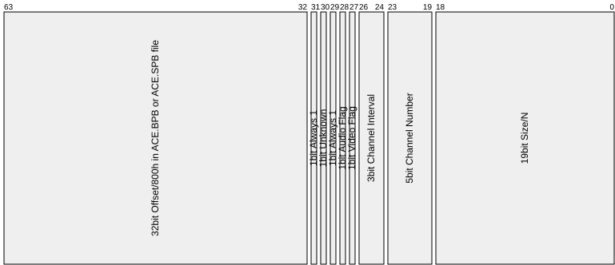

Archives
CDROM File Archives with Filename
Entrysize=08h
WWF Smackdown (MagDemo33: TAI\*.PAC)
000h 4 ID ("DPAC") ;\
004h 4 Unknown (100h) ;
008h 4 Number of files (N) ;
00Ch 4 Directory Size (N*8) ; Header
010h 4 File Data area size (SIZE = Totalsize-Headersize) ;
014h 4 Unknown (1) ;
018h 7E8h Zerofilled (padding to 800h-byte boundary) ;
800h N*8 File List ;
... .. Zerofilled (padding to 800h-byte boundary) ;/
... SIZE File Data area ;-Data area
File List entries:
000h 8 Filename ("NAME")
004h 2 File Offset/800h (increasing)
006h 2 File Size/800h
Entrysize=10h
Championship Motocross (MagDemo25: SMX\RESHEAD.BIN and RESBODY.BIN)
RESHEAD.BIN:
000h N*10h File List (220h bytes)
File List entries:
000h 8 Filename ("FILENAME", if shorter: terminated by 00h plus garbage)
008h 4 Filesize in bytes
00Ch 4 Offset/800h in RESBODY.BIN (increasing) (or FFFFFFFFh if Size=0)
000h .. File Data (referenced from RESHEAD.BIN)
One (DIRFILE.BIN\w*\sect*.bin)
000h N*10h File List
... .. File Data area
File List entries:
000h 0Ch Filename (eg. "FILENAME 001") ;for last entry: "END 000"
00Ch 4 Offset (increasing, N*10h and up) ;for last entry: zero
True Love Story 1 and 2 (TLS*\MCD.DIR and MCD.IMG)
MCD.DIR:
000h N*10h File List
... 10h End marker (FFh-filled)
File List entries:
000h 8 Filename (zeropadded if less than 8 chars)
008h 2 Zero (0000h)
00Ah 2 Size/800h
00Ch 4 Offset/800h in MCD.IMG
Note: Filenames are truncated to 8 chars (eg. "FOREST.T" instead "FOREST.TIM")
000h .. File Data area (encrypted in True Love Story 2)
init_key_by_filename(name): ;for MCD.IMG (using filenames from MCD.DIR)
i=0, key0=0001h, key1=0001h, key2=0001h
while i<8 and name[i]<>00h
key0=(key0 XOR name[i])
key1=(key1 * name[i]) AND FFFFh
key2=(key2 + name[i]) AND FFFFh
ret
init_key_by_numeric_32bit_seed(seed): ;maybe for LINEAR.IMG and PICT.IMG ?
key0=(seed) AND FFFFh
key1=(seed - (seed*77975B9h/400000000h)*89h) AND FFFFh
key2=(seed - (seed*9A1F7E9h/20000000000h)*3527h) AND FFFFh
ret
decrypt_data(addr,len):
for i=1 to len/2
key2=key2/2 + (key0 AND 1)*8000h
key0=key0/2 + (key1 AND 1)*8000h
key1=key1/2 + ((key1/2 OR key0) AND 1)*8000h
key0=((((key1+47h) AND FFFFh)/4) XOR key0)+key2+(((key1+47h)/2) AND 1)
halfword[addr]=halfword[addr] XOR key0, addr=addr+2
ret
Item Unencrypted Encrypted
Parent Folder name "TLS" "TLS2"
First name in MCD.DIR "BACKTILE" "TEST.RPS"
First word in MCD.IMG 00000010h 074D4C8Ah
Star Wars Rebel Assault 2 (RESOURCE.*, and nested therein)
BallBlazer Champions (*.DAT, and nested therein)
The Rebel RESOURCE.* files start with name "bigEx" or "fOFS", BallBlazer *.DAT
start with "SFXbase" or "tpage", nested files start with whatever other names.
000h N*10h File List
... (4) CRC32 on above header (Top-level only, not in Nested archives)
... .. File Data area
... (..) Huge optional padding to xx000h-byte boundary (in BallBlazer .DAT)
File List entries in Top-level archives (with [0Ch].bit31=1):
000h 8 Filename (zeropadded if less than 8 chars)
008h 4 Decompressed Size (or 0=File isn't compressed)
00Ch 4 Offset, self-relative from current List entry (plus bit31=1)
File List entries in Nested archives (with [0Ch].bit31=0):
000h 0Ch Filename (zeropadded if less than 12 chars)
00Ch 4 Offset, self-relative from current List entry (plus bit31=0)
Last File List entry has [00h..0Bh]=zerofilled, and Offset to end of file.
000h .. Uncompressed Data
... .. CRC32 on above Data (Top-level only, not in Nested archives)
000h 1 Compression Method (01h=LZ/16bit, 02h=LZ/24bit)
001h 3 Decompressed Size (big-endian)
004h .. Compressed Data
... .. Zeropadding to 4-byte boundary
... .. CRC32 on above bytes (method, size, compressed data, padding)
Entrysize=14h
Fighting Force (MagDemo01: FGHTFRCE\*.WAD)
000h 4 Number of files (big endian)
004h N*14h File List
... .. File Data
000h 0Ch Filename ("FILENAME.EXT", zeropadded if shorter than 12 chars)
00Ch 4 Filesize in bytes (can be odd) (big endian)
010h 4 Fileoffset in bytes (increasing, 4-byte aligned) (big endian)
Parappa (MagDemo01: PARAPPA\*.INT)
Um Jammer Lammy (MagDemo24: UJL\*.INT)
0000h 2000h Folder 1
2000h .. File Data for Folder 1
... 2000h Folder 2
... .. File Data for Folder 2
... 2000h Folder End marker (FFFFFFFFh, plus zeropadding)
0000h 4 Folder ID (increasing, 1,2,3, or FFFFFFFFh=End)
0004h 4 Number of files (max 198h) (N)
0008h 4 File Data Area size/800h (S)
000Ch 4 Zero (0)
0010h N*14h File List
... .. Zeropadding to 2000h
2000h S*800h File Data Area for this folder
000h 4 Filesize in bytes
004h 10h Filename (FILENAME.EXT, zeropadded)
Note: There can be more than one folder with same ID (ie. when having more than 198h TIM files, which won't fit into a single 2000h-byte folder).
Gran Turismo 1 (MagDemo10: GT\BG.DAT\, GT\COURSE.DAT\)
Gran Turismo 1 (MagDemo15: GT\BG.DAT\, GT\COURSE.DAT\)
JumpStart Wildlife Safari Field Trip (MagDemo52: DEMO\DATA.DAT\*.DAT)
These are child archives found inside of the main GT-ARC and DATA.DAT archives.
000h 4 Number of Files (eg. 26h) (usually at least 02h or higher)
004h N*14h File List
... .. File Data area
File List entries:
000h 10h Filename ("FILENAME.EXT", zeropadded if shorter)
010h 4 Offset in bytes (increasing, 4-byte-aligned?)
Croc 2 (MagDemo22: CROC2\CROCII.DAT and CROCII.DIR)
Disney's The Emperor's New Groove (MagDemo39: ENG\KINGDOM.DIR+DAT)
Disney's Aladdin in Nasira's Revenge (MagDemo46: ALADDIN\ALADDIN.DIR+DAT)
DIR:
000h 4 Number of Entries (0Eh)
004h N*14h File List
DAT:
000h .. File Data (referenced from CROCII.DIR)
000h 0Ch Filename ("FILENAME.EXT", zeropadded if shorter)
00Ch 4 File Size in bytes
010h 4 File Offset in .DAT file (800h-byte aligned, increasing)
Alice in Cyberland (ALICE.PAC, and nested .PAC, .FA, .FA2 archives)
000h N*14h File List
... 14h Zerofilled (File List end marker)
... .. File Data area
File List entries:
000h 0Ch Filename ("FILENAME.EXT", zeropadded if shorter)
00Ch 4 Offset (increasing, 4-byte aligned)
010h 4 Filesize in bytes (can be odd, eg. for .FA2 files)
CDROM File Compression LZ5 and LZ5-variants
Interplay Sports Baseball 2000 (MagDemo22:BB2000\DATA\HOG.TOC\UNIFORMS\*.UNI)
000h N*14h File List (3Ch*14b bytes, unused entries are zeropadded)
4B0h .. Data area (TIM files for player uniforms)
File List entries:
000h 10h Filename ("FILENAME.EXT", zeropadded)
010h 4 Offset (zerobased, from begin of Data area, increasing)
Entrysize=18h
Invasion from Beyond (MagDemo15: IFB\*.CC)
000h 0Ch Fixed ID (always "KotJCo01Dir ") (always that same string)
00Ch 4 Number of Files
010h N*18h File List
... .. File Data area
000h 10h Filename ("FILENAME.EXT", zeropadded)
010h 4 Offset in bytes (increasing, 1-byte or 4-byte aligned)
014h 4 Filesize in bytes (can be odd)
Ghost in the Shell (MagDemo03: GITSDEMO\S01\*.FAC)
000h N*18h File List (18h-bytes each)
... 18h File List end marker (zerofilled)
... .. File Data
000h 1 Filename Checksum (sum of bytes at [001h..00Dh])
001h 1 Filename Length (excluding ending zeroes) (eg. 8, 9, 10, 12)
002h 0Ch Filename ("FILENAME.EXT", zeropadded if less than 12 chars)
00Eh 2 Unknown (2000h) (maybe attr and/or ending zero for filename)
010h 4 Filesize in bytes (can be odd)
014h 4 Offset (increasing, 4-byte aligned)
Oddworld: Abe's Exodus (MagDemo17: ABE2\*.LVL)
Oddworld: Abe's Exodus (MagDemo21: ABE2\*.LVL and nested .IDX files)
000h 4 Header Size in bytes (2800h) (can be MUCH bigger than needed)
004h 4 Zero
008h 4 ID "Indx"
00Ch 4 Zero
010h 4 Number of Files (N) (CEh) (can be zero=empty in .IDX files)
014h 4 Header Size/800h (05h)
018h 4 Zero
01Ch 4 Zero
020h N*18h File List
... .. Zeropadding to end of Headersize
... .. File Data area
000h 0Ch Filename ("FILENAME.EXT", zeropadded if shorter)
00Ch 4 Offset/800h
010h 4 File Size/800h
014h 4 File Size in bytes
IDX files use the same File List entry format as LVL, but the offsets
seem to refer to an external file with corresponding name, for example:
cdrom:\ABE2\CR.LVL\CR.IDX ;directory info
cdrom:\ABE2\CR.MOV ;external data (the .MOV being a .STR video)
XXX: That's not tested/verified, and not implemented in no$psx file viewer.
Monkey Hero (MagDemo17: MONKEY\BIGFILE.PSX and nested .PSX files)
000h 4 Unknown (6)
004h 4 Total Filesize (1403800h)
008h 2 Unknown, Alignment? (800h)
00Ah 2 Number of Files, excluding zerofilled File List entries (ACh)
00Ch 4 Header Size (1800h)
010h 4 Unknown, Entrysize? (18h)
014h 4 Unknown, Entrysize? (18h)
018h N*18h File List (can contain unused zerofilled entries here and there!)
... .. File Data area
000h 10h Filename ("FILENAME.EXT", zeropadded)
010h 4 File Offset in bytes (800h-byte aligned, unusorted/not increasing)
014h 4 File Size in bytes
NHL Faceoff '99 (MagDemo17: FO99\*.KGB and nested *.PRM *.TMP *.ZAM)
NHL Faceoff 2000 (MagDemo28: FO2000\*.KGB, Z.CAT, and nested *.PRM and *.TMP)
000h 4 ID "KGB",00h
004h 4 Number of Files (N)
008h (4) Number of Files negated (-N) ;<-- optional, not in LITESHOW.KGB
... N*18h File List
... (..) CBh-padding to alignment boundary (only if align=800h)
... .. File Data area
000h 10h Filename ("FILENAME.EXT", terminated by 00h, padded with CDh)
010h 4 File Size in bytes
014h 4 File Offset (800h-byte or 1/4-byte? aligned)
Syphon Filter 1 (MagDemo18: SYPHON\SUBWAY.FOG) (4Mbyte, namelen=10h)
000h 4 Unknown (80000001h)
004h 4 Offset/800h to Final Padding area
008h 8 Zerofilled
010h N*18h File List
... (..) CDh-padding to 800h-byte alignment boundary
... .. File Data area
... 800h Some text string talking about "last-sector bug"
... 40BEh Final Padding area (CDh-filled)
000h 10h Filename ("FILENAME.EXT", terminated by 00h, padded with CDh)
010h 4 File Offset/800h (increasing)
014h 4 File Size/800h
Centipede (MagDemo23: ARTFILES\*.ART)
000h 0Fh ID ("Art", zeropadded) ;\
00Fh 1 Type or so ("?") ; sorts of File List entry
010h 4 Number of entries plus 1 (N+1) ; for root folder
014h 4 Total Size in bytes (can be odd) ;/
018h N*18h File List
... ... File Data area
File List entries:
000h 0Fh Filename ("FILENAME", zeropadded)
00Fh 1 Type/extension or so ("X" or "D")
010h 4 File Offset (unaligned, increasing)
014h 4 File Size in bytes (can be odd)
Unknown if this can have child folders (maybe in similar form as the root folder entry).
Sheep Raider (MagDemo52: SDWDEMO\*.SDW)
Sheep Raider (MagDemo54: SDWDEMO\*.SDW)
000h 4 Unknown (301h)
004h 4 Zero (0)
008h 4 Number of files (N)
00Ch N*18h File List
... .. Zeropadding to 800h-byte boundary
... .. File Data area
File List entries:
000h 4 Offset (800h-byte aligned, increasing)
004h 4 Filesize in bytes
008h 1 Unknown (01h)
009h 0Fh Filename ("FILENAME.EXT",00h, plus garbage padding)
Texsize is 6900Eh, but should be 6900Ch = 200h*1A4h*2+0Ch
Filesize is 6A000h, but should be 69014h = 200h*1A4h*2+14h
Wing Commander III (*.LIB)
000h 2 Number of Files (C9h)
002h N*18h File List
... (..) Padding to 800h-byte boundary (if any, eg. in MOVIES.LIB)
... .. File data area (800h-byte aligned, or unaligned)
File List entries:
000h 4 Filesize in bytes
004h 4 Offset (increasing, 800h-byte aligned, or unaligned)
008h 10h Filename ("filename.ext", zeropadded)
Largo Winch - Commando SAR (LEVELS\*.DCF)
000h 4 ID "DCAT"
004h 4 Number of Entries
008h N*18h File List
... .. Zerofilled (padding to 800h-byte boundary)
... .. File Data area
File List entries:
000h 10h Filename ("FILENAME.EXT", terminated by 00h, plus garbage padding)
010h 4 Filesize in bytes
014h 4 Offset (increasing, 800h-byte aligned)
Policenauts (NAUTS\*.DPK)
000h 4 ID "FRID"
004h 4 Always E0000000h
008h 4 Always 800h (...maybe alignment)
00Ch 4 Number of Entries (N)
010h 4 Header Size (N*18h+20h, plus padding to 800h-byte boundary)
014h 4 Always 18h (...maybe entry size)
018h 8 Zerofilled
020h N*18h File List
... .. Zerofilled (padding to 800h-byte boundary)
... .. File Data area
File List entries:
000h 0Ch Filename ("FILENAME.EXT", zeropadded if shorter)
00Ch 4 Offset (increasing, 800h-byte aligned)
010h 4 Filesize in bytes
014h 4 Unknown (checksum? random?)
Actua Ice Hockey 2 (Best Sports Games Ever (demo), AH2\GAMEDATA\*.MAD)
000h N*18h File List
... .. File Data area (directly after File List, without end-code)
Note: There is no file-list end-marker (instead, the Offset in 1st File
entry does imply the end of File List).
File List entries:
000h 10h Filename ("FILENAME.EXT", zeropadded)
010h 4 Offset (increasing, 4-byte aligned, or unaligned for TXT files)
014h 4 Filesize in bytes (or weird nonsense in SFX.MAD)
SFX.MAD has nonsense Filesize entries (eg. 164h for a 15150h-byte file).
FACES.MAD contains only one TIM file... but as 3Mbyte junk appended?
RINKS.MAD and TEAMS.MAD start with 0Dh,0Ah,1Ah followed by 4Mbyte junk.
MISCFILE.MAD contains several nested .mad files.
MISCFILE.MAD\panfont.mad\*.txt --> starts with FF,FE --> that's 16bit Unicode?
Muppet Monster Adventure (MagDemo37: MMA\GAMEDATA+WORLDS*\*.INF+WAD)
INF:
000h N*18h File List
WAD:
000h .. File Data area
000h 4 File Offset/800h in .WAD file
004h 4 File Size in bytes
008h 10h Filename ("FILENAME.EXT", zeropadded)
Army Men Air Attack 2 (MagDemo40: AMAA2\*.PCK)
000h 4 Number of entries (N)
004h N*18h File List
... .. Zeropadding to 800h-byte boundary
... .. File Data area
File List entries:
000h 10h Filename ("FILENAME.EXT", zeropadded)
010h 4 Fileoffset (800h-byte aligned, increasing)
014h 4 Filesize in bytes
Mort the Chicken (MagDemo41: MORT\*.PPF and .TPF)
000h 2 Type (31h=TPF with TIMs, 32=PPF with PMDs)
002h 2 Number of entries (N) (can be 0=None, eg. STAGE*\MORT.PPF)
004h 4 File List Size (N*18h)
008h 4 Header Size (always 14h)
00Ch 4 Data area Size (Filesize-14h-N*18h)
010h 4 Data area Offset (14h+N*18h)
014h N*18h File List
... .. File Data area
File List entries:
000h 10h Filename ("FILENAME.EXT", zeropadded)
010h 4 Filesize in bytes
014h 4 Fileoffset (from begin of Data area, increasing)
Hot Wheels Extreme Racing (MagDemo52: US_01293\VEHICLES\*.CAB)
000h 4 ID "BACR" (aka RCAB backwards)
004h 4 Number of entries (N)
008h N*18h File List
... .. File Data area
File List entries:
000h 10h Filename ("FILENAME.EXT", zeropadded)
020h 4 Offset (from begin of Data area, increasing, 4-byte aligned)
024h 4 Filesize in bytes (can be odd)
Entrysize=19h
WAD Format (Wipeout 2097)
PSX Wipeout 2097, cdrom:\WIPEOUT2\SOUND\SAMPLES.WAD:\.vag
PSX Wipeout 2097, cdrom:\WIPEOUT2\TRACK*\TRACK.WAD:\.*
PSX Wipeout 3 (MagDemo25: WIPEOUT3\*)
000h 2 Number of files
002h N*19h Directory Entries for all files
... .. Data for all files (without any alignment, in same order as above)
000h 10h Filename (ASCII, can be lowercase), terminated by 00h, plus garbage
010h 4 Filesize in bytes ;\maybe compressed/uncompressed, or rounded,
014h 4 Filesize in bytes ;/always both same
018h 1 Unknown (always 00h)
Entrysize=1Ch
Command & Conquer, Red Alert (MagDemo05: RA\*) FAT/MIX/XA
000h 4 Number of entries with location 0=MIX (M=65h)
000h 4 Number of entries with location 1=XA (X=1)
008h M*1Ch File List for location 0=MIX
... X*1Ch File List for location 1=XA
000h 10h Filename (terminated by 00h, padded with garbage)
010h 4 Offset/800h in DATA.MIX or Offset/930h DATA.XA file (increasing)
014h 4 Filesize in bytes
018h 4 File Location (0=DATA.MIX, 1=DATA.XA)
Syphon Filter 2 (MagDemo30: SYPHON\TRAIN.FOG) (2.8Mbyte, namelen=14h)
000h 4 Unknown (80000001h)
004h 4 Offset/800h to Final Padding area
008h 8 Zerofilled
010h N*1Ch File List
... (..) CDh-padding to 800h-byte alignment boundary
... .. File Data area
... 3394h Final Padding area (CDh-filled)
000h 14h Filename ("FILENAME.EXT", terminated by 00h, padded with CDh)
014h 4 File Offset/800h (increasing)
018h 4 File Size/800h
v1 (Syphon Filter 1) has filename_len=10h (and filelist_entrysize=18h)
v2 (Syphon Filter 2) has filename_len=14h (and filelist_entrysize=1Ch)
Note: The FOG archive in Syphon Filter 2 demo version does contain some empty dummy files (with intact filename, but with offset=0 and size=0).
Entrysize=20h
Colony Wars (MagDemo02: CWARS\GAME.RSC)
Colony Wars Venegance (MagDemo14: CWV\GAME.RSC, 8Mbyte)
000h 4 Number of Files
004h N*20h File List
... 10h File List End: Name (zerofilled)
... 4 File List End: Offset (total filesize, aka end of last file)
... 0Ch File List End: Padding (zerofilled)
... .. File Data area
000h 10h Filename ("FILENAME.EXT", terminated by 00h, padded with garbage)
010h 4 File Offset in bytes (increasing, 4-byte aligned)
014h 0Ch Padding (garbage) (usually 800F68A0h,800F68A0h,800F68A0h)
WarGames (MagDemo14: WARGAMES\*.DAT)
000h 4 Number of Files (1C3h)
004h N*20h File List
... .. Zeropadding to 800h-byte boundary
... .. File Data area
000h 10h Filename ("FILENAME.EXT", zeropadded, sorted alphabetically)
010h 4 File Offset/800h (unsorted, not increasing)
014h 4 File Size in bytes
018h 4 File Size/800h
01Ch 4 Zero
Running Wild (MagDemo15: RUNWILD\*.BIN)
000h N*20h File List
... 4 File List End Offset/800h (end of last file)
... 4 File List End Size (zero)
... 18h File List End Name (zerofilled)
... .. Padding to 800h-byte boundary (each 20h-byte: 01h, and 1Fh zeroes)
... .. File Data
000h 4 Offset/800h (increasing)
004h 4 Filesize in bytes
008h 18h Filename ("FILENAME.EXT" or ":NAME" or ":NAME:NAME", zeropadded)
CDROM File Compression Z (Running Wild)
Test Drive Off-Road 3 (MagDemo27: TDOR3\TDOR3.DAT)
About same as the other Test Drive games, but with shorter filenames.
000h N*20h File List (1920h bytes used; with padding: 5800h bytes in total)
... .. Zeropadding to Headersize (5800h)
... .. File Data area
File List entries:
000h 18h Filename ("FILENAME.EXT" or "PATH\FILENAME.EXT", zeropadded)
018h 4 Filesize in bytes
01Ch 4 File (Offset-Headersize)/800h
Tiny Tank (MagDemo23: TINYTANK\*.DSK)
000h 4 ID ("TDSK") ;\
004h 4 Number of Files (1Bh) ; Directory
008h N*20h File List ;/
... 4 1st File Size (same as Size entry in File List) ;\File Data area
... .. 1st File Data ; (each file os
... 4 2nd File Size (same as Size entry in File List) ; preceeded by
... .. 2nd File Data ; a size entry)
... .. etc. ;/
File List entries:
000h 10h Filename ("FILENAME.EXT", zeropadded)
010h 4 File Size in bytes
014h 4 Unknown (35xxxxxxh..372xxxxxh)
018h 4 Unknown (3724xxxxh) (Timestamp maybe?)
01Ch 4 File Offset in bytes (increasing, 4-byte aligned)
MAG 3 (MagDemo26: MAG3\MAG3.DAT, 7Mbyte)
000h N*20h File List (B60h bytes)
... .. Zeropadding to 800h-byte boundary
... .. File Data area (files are AAh-padded to 800h-byte boundary)
File List entries:
000h 4 Filesize in bytes
004h 2 File Offset/800h (16bit) (increasing)
006h 1Ah Filename ("FILENAME.EXT" or "PATH\FILENAME.EXT", zeropadded)
Play with the Teletubbies (MagDemo35: TTUBBIES\*.RES)
000h 2 Zero (0000h)
002h 2 Number of Files (N)
004h 4 Data Base (N*20h+10h)
008h 4 Unknown (20h) ;-maybe File List entry size?
00Ch 2 Unknown (10h) ;\maybe filename length and/or header size?
00Eh 2 Unknown (10h) ;/
010h N*20h File List
... .. File Data area
000h 4 Zero
004h 4 File Offset (increasing, 4-byte aligned, relative to Data Base)
008h 4 File Size in bytes (can be odd)
00Ch 4 Zero
010h 10h Filename ("FILENAME.EXT", zeropadded)
Mat Hoffman's Pro BMX (old demo) (MagDemo39: BMX\FE.WAD+STR) (uncompressed)
Mat Hoffman's Pro BMX (new demo) (MagDemo48: MHPB\FE.WAD+STR) (compressed)
WAD:
000h N*20h File List
STR:
000h .. File Data (MagDemo39: 4.5Mbyte, MagDemo48: compressed/2.8Mbyte)
File List entries:
000h 14h Filename ("FILENAME.EXT", zeropadded)
014h 4 Offset in bytes, 4-byte aligned, in STR file
018h 4 Filesize, compressed (always rounded to multiple of 4 bytes)
01Ch 4 Filesize, decompressed (zero when not compressed)
- end flag is processed immediately (instead of after the block)
- blocktype is only 1bit wide (instead of 2bit)
- stored blocks have plain 16bit len (without additional 16bit inverse len)
CDROM File Compression ZIP/GZIP/ZLIB (Inflate/Deflate)
Instead of "tinf_uncompress", use the function below:
bmx_tinf_style_uncompress(dst,src)
tinf_init() ;init constants (needed to be done only once)
@@lop:
if tinf_getbit()=0 then goto @@done ;end flag, 1bit
if tinf_getbit()=0 then ;blocktype, 1bit
tinf_align_src_to_byte_boundary()
len=LittleEndian16bit[src], src=src+2 ;get len (without inverse len)
for i=0 to len-1, [dst]=[src], dst=dst+1, src=src+1, next i ;uncompressed
else
tinf_decode_dynamic_trees(), tinf_inflate_compressed_block() ;compressed
gpto @@lop
@@done:
ret
Entrysize=28h
Demo Menu, PlayStation Magazine Demo Disc 03-54, MENU.FF
Used on most PlayStation Magazine Demo Discs (Disc 03-54, except Disc 01-02)
Used on PlayStation Underground 3.1 (and maybe other issues)
Used on Interactive CD Sampler Disc Volume 10 (maybe others, but not Vol 4,5)
000h 4 Number of entries (eg. 20h or 28h)
004h N*28h File List
... .. Garbage padding to 800h-byte boundary
... .. File Data
... .. Huge zeropadding to 200000h or 2EE000h (2048Kbyte or 3000Kbyte)
000h 20h Filename (terminated by 00h, padded with... looks like garbage)
020h 4 Size/800h
024h 4 Offset/800h (increasing)
Test Drive 4 (MagDemo03: TD4.DAT) (headersize=2000h, used=0...h)
Test Drive 5 (MagDemo13: TD5.DAT) (headersize=3000h, used=1EF8h)
Demolition Racer (MagDemo27: DR\DD.DAT) (headersize=5000h, used=2328h)
This is used by several games, with different Headersizes (2000h or 3000h or
5000h), with Offsets relative to the Headersize. To detect the Headersize, skip
used entries, skip following zeropadding, then round-down to 800h-byte boundary
(in case the 1st file contains some leading zeroes).
000h N*28h File List (less than 0C00h bytes used in TD4 demo)
... .. Zeropadding to Headersize (2000h or 3000h or 5000h)
... .. File Data
000h 20h Filename ("PATH\FILENAME.EXT", zeropadded)
020h 4 Size in bytes
024h 4 (Offset-Headersize)/800h (increasing)
CDROM File Compression RNC (Rob Northen Compression)
Gekido (MagDemo31: GEKIDO\GLOBAL.CD)
0000h N*28h File List
21C0h ... Unknown random gibberish? (23h,E8h,0Ch,1Dh,79h,C5h,24h,...)
4000h ... File Data area
000h 1Ch Filename ("\PATH\FILENAME.EXT;0", zeropadded)
01Ch 4 Filesize in bytes
020h 4 Fileoffset in bytes (4000h and up, increasing)
024h 4 Filechecksum (32bit sum of all bytes in the file)
Team Buddies (MagDemo37: BUDDIES\BUDDIES.DAT\* and nested *.BND files)
000h 4 ID "BIND"
004h 4 Number of files (N)
008h N*28h File List
... .. File Data area
000h 20h Filename ("\FILENAME.EXT", zeropadded)
020h 4 File Offset (increasing, 4-byte aligned) ;\see note
024h 4 File Size in bytes (always a multiple of 4) ;/
size=((filesize+3) AND not 3) ;size entry for curr file (plus 3)
offs=((filesize+4) AND not 3)+offs ;offs entry for next file (plus 4 !!!)
JumpStart Wildlife Safari Field Trip (MagDemo52: DEMO\DATA.DAT)
000h 4 Number of entries (N)
004h 4 Number of entries (same as above)
008h 4 Number of entries (same as above)
00Ch 4 Number of entries (same as above)
010h N*28 File List
... .. Zeropadding to 800h-byte boundary
... .. File Data area
File List entries:
000h 20h Filename ("\PATH\FILENAME.EXT", zeropadded)
020h 4 Offset/800h, from begin of Data area (increasing)
024h 4 Filesize in bytes
Entrysize=34h
Army Men: Air Attack (MagDemo28: AMAA\PAK\*.PAK)
000h 4 Number of Files
004h N*34h File List
... .. Zeropadding to 4000h
4000h .. File Data area
File List entries:
000h 10h Filename ("FILENAME.EXT", zeropadded)
010h 4 Filesize in bytes ;\always both same, always
014h 4 Filesize in bytes ;/both multiple of 800h
018h 4 Zero
01Ch 4 Type (07h..1Ah)
020h 4 Subtype (00h..01h)
024h 10h Zero
07h.0 .TIM (*.TIM)
07h.01h .TIM (HUD_*.TIM)
08h.0 .TIM (PSTART.TIM)
09h.0 .TIM (FONT.TIM)
0Ah.0 .SFX
0Eh.0 .MBL
10h.0 .ATR
11h.0 .RLC
13h.0 .AST
15h.0 .SCD
16h.0 .TXT (PAUSED.TXT)
17h.0 .TXT (OBJECT*.TXT)
18h.0 .BIN
1Ah.0 Misc (.3DO=TIM, .V=TXT, and TERRAIN.CLP .HI .LIT .MAP .PAT .POB .TER)
Entrysize=40h
Ninja (MagDemo13: NINJA\CUTSEQ\.WAD and NINJA\WADS\.WAD)
000h 4 Number of Files (N)
004h 4 Size of File Data area (SIZ) (total filesize-8-N*40h)
008h N*40h File List
... SIZ File Data area
File List entries:
000h 4 Filesize in bytes
004h 4 Fileoffset in bytes (zerobased, from begin of File Data area)
008h 38h Filename, zeropadded
You Don't Know Jack (MagDemo23: YDKJ\RES\*.GLU)
You Don't Know Jack 2 (MagDemo41: YDKJV2\\.GLU)
000h 4 ID ("GLUE")
004h 4 Unknown (always 400h)
008h 4 Number of Files (N)
00Ch 4 Header Size (40h+N*40h)
010h 30h Zerofilled
040h N*40h File List
... .. Garbage padding to alignment boundary
... .. File Data area
File List entries:
000h 20h Filename ("FILENAME.EXT", zeropadded)
020h 4 File Offset in bytes (increasing, 800h-byte aligned)
024h 4 File Size in bytes
028h 2 File ID Number 1 (eg. 1-71 for C01.GLU-C71.GLU)
02Ah 2 Unknown (random, checksum, ?)
02Ch 4 File ID Number 2 (eg. increasing: 1, 2, 3)
030h 10h Zerofilled
The files do start on alignment boundaries, but there is no alignment padding after end of last file.
Entrysize=60h
Army Men Air Attack 2 (MagDemo40: AMAA2\.PCK\.PAK)
000h 4 Number of entries (N)
010h N*60h File List
... .. Zeropadding to 2000h
2000h .. File Data area
File List entries:
000h 4 Timestamp? (BFxxxxh..C0xxxxh) (or zero, in first file)
004h 4 Unknown (always 421C91h)
008h 4 Unknown (200h or 60200h)
00Ch 4 Filesize (uncompressed)
010h 4 Filesize (compressed, or 0 when not compressed)
014h 4 File Checksum (sum of all bytes in uncompressed file data)
018h 4 Unknown (random 32bit value?)
01Ch 10h Filename ("FILENAME.EXT", zeropadded)
02Ch 4 Zerofilled
030h 4 Unknown (0 or 1 or 8)
034h 4 File Type (see below)
038h 8 Zerofilled
040h 4 Offset MSBs (Fileoffset-2000h)/800h ;\increasing, 4-byte aligned
044h 4 Offset LSBs (Fileoffset AND 7FFh) ;/(or zero when filesize=0)
048h 18h Zerofilled
Most of the files are SCRATCH compressed:
CDROM File Compression LZ5 and LZ5-variants
There are also several uncompressed files (eg. VERSION.V, *.SFX, and many of the TERRAIN.* files).
Entrysize=90h
Grind Session (MagDemo33: GRIND\SLIP.GRV)
Grind Session (MagDemo36: GRIND\SLIP.GRV)
Grind Session (MagDemo42: GRIND\SLIP.GRV)
Grind Session (MagDemo45: GRIND\SLIP.GRV)
000h 4 ID (A69AA69Ah)
004h 4 Number of files (N)
008h N*90h File List
... .. File Data area
File List entries:
000h 80h Filename ("DATA\FILENAME.EXT",00h, plus CDh-padding)
080h 4 File Offset in bytes (increasing, 4-byte aligned)
084h 4 File Size in bytes
088h 8 Unknown (random/checksum?)
Variable Entrysize
HED/WAD
Used by Spider-Man (MagDemo31,40: SPIDEY\CD.HED and CD.WAD)
Used by Spider-Man 2 (MagDemo52: SPIDEY\CD.HED and CD.WAD)
Used by Tony Hawk's Pro Skater (MagDemo22: PROSKATE\CD.HED and CD.WAD)
Used by Apocalypse (MagDemo16: APOC\CD.HED and CD.WAD) ;with PADBUG
Used by MDK (Jampack Vol. 1: MDK\CD.HED and CD.WAD) ;without ENDCODE
Used by Mat Hoffman's Pro BMX (old demo) (MagDemo39: BMX\BMXCD.HED+WAD)
000h .. File Entries (see below)
... (1) End code (FFh) (if any, not present in MDK)
000h .. Filename (ASCII, terminated by 00h, zeropadded to 4-byte boundary)
... 4 Offset in CD.WAD (in bytes, usually 800h-byte aligned)
... 4 Filesize (in bytes)
Dance UK (DATA.PAK)
000h 4 Number of Files (N) (1ADh)
004h 4 Unknown (7) (maybe HeaderSize/800h, same as first Offset/800h ?)
008h 4 Unknown (1430h = 14h+N*0Ch, same as first Name pointer)
00Ch 4 Unknown (1430h = 14h+N*0Ch, same as first Name pointer)
010h 4 Unknown (1430h = 14h+N*0Ch, same as first Name pointer)
014h N*4 Name List (pointers to name strings, 1430h and up) 6B4h bytes
... N*4 Size List (filesize in bytes) 6B4h bytes
... N*4 Offset List (Offset/800h) 6B4h bytes
... N*var Name Strings (ASCII strings, "folder\filename.ext",00h)
... .. Zerofilled (padding to 800h-byte boundary)
... .. File Data area
Kula Quest / Kula World / Roll Away (*.PAK)
000h 4 Number of Files (N)
004h N*8 File List (2x32bit entries: Offset, Size) (unaligned, can be odd)
... N*4 File Name Offsets
... N*var File Name Strings ("FILE NN",0Ah,00h)
... .. Garbage-padding to 4-byte boundary
... (4) Optional extra garbage? ("MON " in ATLANTFI.PAK, MARSFI.PAK, etc.)
... .. File Data area (ZLIB compressed, starting with big-endian 789Ch)
Largo Winch - Commando SAR (NTEXTURE\.GRP and LEVELS\.DCF\*.CAT and *.GRP)
000h 4 ID (12h,34h,56h,78h) (aka 12345678h in big endian)
004h 4 Header Size (offset to File Data area)
008h 4 Number of Entries (can be 0=None, eg. LEVELS\LARGO07.DCF\Z16.CAT)
00Ch N*var Name List (Filenames in form "FILENAME.EXT",00h)
... .. Zeropadding to 4-byte boundary
... N*4 Size List (Filesizes in bytes)
... .. File Data area
Jackie Chan Stuntmaster (RTARGET\GAME.GCF and LEV*.LCF)
000h 4 Number of files (N) (3..EBh) (big-endian)
004h N*Var File List (list size is implied in first file offset)
... .. Zeropadding to 800h-byte boundary
... .. File Data area
File List entries:
000h 4 File Type (ascii, .LLN .TXI .TPG .RCI .RCP .WDB .PCI .PCP .BLK)
004h 4 File Size (can be odd) (big-endian)
008h 4 File Offset (increasing, 800h-byte aligned) (big-endian)
00Ch 4 Extra Size (0 or 4 or 8) (big-endian)
010h .. Extra Data (if any) (32bit number, or "TEXTURES")
Syphon Filter 1 (MagDemo18: SYPHON\.HOG, SYPHON\SUBWAY.FOG\.HOG,SLF.RFF)
Syphon Filter 2 (MagDemo30: SYPHON\.HOG, SYPHON\TRAIN.FOG\.HOG,SLF.RFF)
000h 4 Timestamp? (36xxxxxxh=v1?, 38xxxxxxh=v2?, other=SLF.RFF)
004h 4 Number of Files (N)
008h 4 Base for Offset List (always 14h)
00Ch 4 Base for String Table (v1=N*4+14h, or v2=N*4+18h)
010h 4 Base for File Data (end of String Table plus align 4/800h/920h)
014h N*4 Offsets to File(s) (increasing, first=0, relative to above [010h])
... (4) v2 only: End Offset for Last File (HOG filesize minus [010h])
... .. String Table (filename list in form of "FILENAME.EXT",00h)
... .. Zeropadding to 4-byte or 800h-byte boundary
... .. File Data area
v1 has [0Ch]=N*4+14h (without end-of-last-file entry; use end=total_size)
v2 has [0Ch]=N*4+18h (and does have end-of-last-file entry)
v1 has STR files in ISO filesystem (not in HOG archives)
v2 has STR files in MOVIES.HOG (with [10h]=920h and [14h and up]=sectors)
v1/v2 has [10h]=data base, aligned to 4 or 800h
v1/v2 has [14h and up] in BYTE-offsets, relative to base=[10h]
v1/v2 uses HOG format in .HOG files also in SLF.RFF
v1/v2 has further .RFF files (but that aren't in HOG format)
v2 MOVIE.HOG has [10h]=920h (which is meant to mean base="after 1st sector")
v2 MOVIE.HOG has [14h and up] in SECTOR-units, with base="after 1st sector"
v2 SLF.RFF does contain two HOG archives badged together (plus final padding)
v2 has some empty 0-byte .HOG files (at least so in demo version)
Electronic Arts 32bit BIGF archives
000h 4 ID "BIGF" (normal case, all big-endian, 4-byte aligned) ;\
ID "BIGH" (with [04h]=little-endian instead big-endian) ;
ID "BIG4" (with 40h-byte alignment padding instead 4-byte) ;
004h 4 Sum of Header+Filesizes (excluding Padding's!) (big-endian) ; Header
008h 4 Number of entries (N) ;11h (big-endian) ;
00Ch 4 Size of Header (including File List) ;11Fh (big-endian) ;
010h .. File List ;/
... .. Padding to 1/4/8-byte boundary (optional, before each file) ;\Data ... .. File Data ;/
000h 4 Offset in bytes (increasing, often 4/8-byte aligned) (big-endian)
004h 4 Size in bytes (can be odd, but often rounded to 4-byte) (big-endian)
008h .. Filename (ASCII, terminated by 00h) ;variable length
Note: Filenames can be empty ("",00h) (eg. in WCWDEMO\ZSOUND.BIG)
Used by FIFA - Road to World Cup 98 (MOP*.BK*, Z4TBLS.BIG\.t, ZMO*.BIG\.viv)
Used by Fifa 2000 (Best Sports demo: FIFADEMO\.BIG, *.SBK, and nested .viv)
Used by Need for Speed 3 Hot Pursuit (*.VIV)
Used by WCW Mayhem (MagDemo28: WCWDEMO\.BIG) (odd filesizes & nameless files)
This is reportedly also used for various other Electronic Arts games for PC, PSX, and PS2 (often with extension *.BIG, *.VIV).
Reportedly also "BIGH" and "BIG4" exist:
http://wiki.xentax.com/index.php/EA_BIG_BIGF_Archive
Other Electronic Arts file formats (used inside or alongside big archives):
https://wiki.multimedia.cx/index.php/Electronic_Arts_Formats_(2) - BNK etc
Electronic Arts 24bit C0FB archives
000h 2 ID C0FBh (C0h,FBh) (big-endian) ;\
002h 2 Size of Header-4 (00h,15h) (big-endian) ; Header
004h 2 Number of Files (00h,01h) (big-endian) ;
006h .. File List ;/
019h .. Padding to 4-byte boundary? ;-Padding
01Ch .. File Data ;-Data
... 4 "CRCF" ;\
... 4 Unknown (0C,00,00,00) (chunk-size little-endian?) ; Footer
... 4 Unknown (3B,2E,00,00) (checksum maybe?) ;/
000h 3 Offset in bytes (increasing) ;(big-endian, 24bit)
004h 3 Size in bytes ;(big-endian, 24bit)
008h .. Filename (ASCII, terminated by 00h) ;variable length
Used by Sled Storm (MagDemo24: ART\ZZRIDER.UNI, with 8 files insides)
Destruction Derby Raw (MagDemo35: DDRAW\*.PTH+.DAT, and nested therein)
PTH File:
000h N*var File List
DAT File:
000h .. File Data area
000h .. Filename ("FILENAME.EXT",00h) (variable length)
... 4 File Size in bytes (can be odd)
... 4 File Offset in bytes in DAT file (increasing, unaligned)
Caution: The whole .DAT file can be compressed: If the sum of the filesizes in PTH file does exceed the size of the DAT file then assume compression to be used (normally, the top-level DATs are uncompressed, and nested DATs are compressed).
CDROM File Compression PCK (Destruction Derby Raw)
SnoCross Championship Racing (MagDemo37: SNOCROSS\SNOW.TOC+.IMG)
TOC:
000h N*var File List
IMG:
000h .. File Data area
000h .. Filename ("DATA\FILENAME.EXT",00h) (variable length)
... 4 File Offset (increasing, 800h-byte aligned, in .IMG file)
... 4 File Size in bytes
Note: The archive contains somewhat corrupted TGA's:
TGA[10h..11h] = 08h,08h ;bpp=8 (okay) and attr=8 (nonsense)
TGA[10h..11h] = 10h,01h ;bpp=16 (okay) and attr=1 (okay) but it's yflipped
CDROM File Archives with Offset and Size
Crash Team Racing (retail: BIGFILE.BIG, and MagDemo30/42: KART\SAMPLER.BIG)
000h 4 Zero
004h 4 Number of Files (260h)
010h N*8 File entries
... .. Zeropadding to 800h byte boundary
... .. File Data
000h 4 Fileoffset/800h (increasing)
004h 4 Filesize in bytes
MDEC v2 STR's (file 1E1h..1F8h,1FAh)
TIM textures (file 01FBh..0200h and others)
empty files (file 01F9h and others)
small archives with named entries (file B5h,124h,125h,126h and others)
stuff with date string and names (file 253h,256h)
there seem to be no nested BIG files inside of the main BIG file
Black Matrix (*.DAT)
000h 4 Number of files (N) (eg. 196h)
004h 4 Unknown (always 0Bh) (maybe sector size shift?)
008h N*4 File List
... .. Zeropadding to 800h-byte boudary
... .. File Data
000h 2 Offset/800h (increasing)
002h 2 Size/800h (can be zero)
Charumera (*.CVF)
000h N*4 File List
... .. Zeropadding to 800h-byte boundary
... .. File Data area
File List entries:
000h 1 Size/800h (8bit)
001h 3 Offset/800h (24bit, increasing)
Vs (MagDemo03: THQ\*) has .CDB archives
000h N*8 File List
... .. Zeropadding to 800h-byte boundary
... .. File Data
... .. Garbage padding (can be several megabytes tall)
000h 2 Offset/800h (increasing)
002h 2 Size/800h (same as below, rounded up to sector units)
004h 4 Size in bytes
Some CDB archives have garbage padding at end of file: BIN.CDB (2Kbyte), CSEL.CDB (80K), DISPLAY.CDB (70K), MOT.CDB (10648Kbyte). Maybe that's related to deleted files in the Vs demo version and/or to updating the CDB archives with newer/smaller content, but without truncating the CDB filesize accordingly.
Monster Rancher (MagDemo06: MR_DEMO\*.OBJ)
Deception III Dark Delusion (MagDemo33: DECEPT3\K3_DAT.BIN)
Star Trek Invasion (MagDemo34: STARTREK\STARTREK.RES)
Similar as .CDB archives (but with 32bit offset, and without duplicated size).
000h N*8 File List
... 4 File List end marker (00000000h)
... .. Garbage padding to 800h-byte boundary
... .. File Data
000h 4 Offset/800h (increasing)
004h 4 Size in bytes (often zero; for unused file numbers)
Einhander (MagDemo08: BININDEX.BIN/BINPACK0.BIN/BINPACK1.BIN)
000h X*4 File List for BINPACK0.BIN ;\
... .. Zeropadding ; BINPACK0
410h .. Unknown (some/all of it looks like garbage) ;/
800h Y*4 File List for BINPACK1.BIN ;\
... .. Zeropadding ; BINPACK1
C10h .. Unknown (some/all of it looks like garbage) ;/
000h 2 Offset/800h in BINPACK0.BIN or BINPACK1.BIN
002h 2 Size/800h
SO98 Archives (NBA Shootout '98, MagDemo10: SO98..*.MDL *.TEX *.ANI *.DAT)
Resembles .BZE (in terms of duplicated size entry).
000h 4 Number of Files
004h 4 Size of File Data area (total filesize-N*0Ch-8)
008h N*0Ch File List
... .. File Data area
000h 4 Offset (zerobased, from begin of File Data area)
004h 4 Size in bytes
008h 4 Size rounded to mutiple of 4-bytes
.MDL contains whatever (and empty 0-byte files)
.TEX contains .TIM
.ANI contains whatever
Gran Turismo 1 (MagDemo10: GT\*.DAT) GT-ARC
Gran Turismo 1 (MagDemo15: GT\*.DAT) GT-ARC
Gran Turismo 2 (GT2.VOL\arcade\arc_fontinfo) GT-ARC
000h 0Ch ID "@(#)GT-ARC",00h,00h
00Ch 2 Content Type (8001h=Compressed, 0001h=Uncompressed)
00Eh 2 Number of Files (eg. 0Fh)
010h N*0Ch File List
... .. File Data area
File List entries:
000h 4 Offset in bytes (increasing, unaligned)
004h 4 Compressed File Size (can be odd) ;\both same when uncompressed
008h 4 Decompressed File Size ;/(ie. when [00Ch]=0001h)
CDROM File Compression GT-ZIP (Gran Turismo 1 and 2)
O.D.T. (MagDemo17: ODT\*.LNK and ODT\RSC\NTSC\ALLSOUND.SND and nested LNK's)
Barbie Explorer (MagDemo50: BARBIEX\*.STR and nested therein)
000h 4 Number of Files (N)
004h N*8 File List
... .. File Data area
000h 4 Offset in bytes (increasing, 1/4-byte? aligned)
004h 4 File Size in bytes (usually N*4, TXT's in ODT are padded as so)
Note: The PADBUG archives in Final Fantasy VIII (FF8) are very similar (but have a different alignment quirk).
Bust A Groove (MagDemo18: BUSTGR_A\.DFS and BUSTGR_B\.DFS) (DFS)
Bust-A-Groove 2 (MagDemo37: BUSTAGR2\BUST2.BIN\*) (main=DF2 and child=DFS)
Same as in O.D.T. with extra "DFS_" ID at start of file.
000h 4 ID "DFS_" (with align 4) or "DF2_" (with align 800h)
004h 4 Number of Files (N)
008h N*8 File List
... .. File Data area
File List entries:
000h 4 Fileoffset in bytes (4-byte or 800h-byte aligned, increasing)
004h 4 Filesize in bytes (can be odd, eg. in BUSTGR_A\SELECT.BPE\*)
CDROM File Compression BPE (Byte Pair Encoding)
The game does also use .DBI files (which contain filenames and other strings, whatever what for).
Monaco Grand Prix Racing Simulation 2 (MagDemo24: EXE\\.SUN)
Same as DFS, but with Total Filesize instead of "DFS_".
000h 4 Total used filesize (excluding zeropadding to 2EE000h)
004h 4 Number of Files (N)
008h N*8 File List
... .. File Data area
... (..) In some files: Zeropadding to 2EE000h (3072Kbytes)
000h 4 Offset (increasing, 4-byte aligned, see note)
004h 4 Filesize in bytes (can be odd in Monaco)
If (Size AND 3)=0 then NextOffset=Offset+Size ;Align4
If (Size AND 3)>0 then NextOffset=Offset+Size+Align800h ;Align800h
Namely, Monaco has files with Size=3BC5h.
Rollcage (MagDemo19: ROLLCAGE\SPEED.IMG) (2Mbyte)
Rollcage Stage II (MagDemo31: ROLLCAGE\SPEED.IDX+SPEED.IMG) (3Kbyte+9Mbyte)
Sydney 2000 (MagDemo37: OLY2000\DEMO.IDX+DEMO.IMG) (1Kbyte+2Mbyte)
Rollcage 1 uses a single IMG file that contains both directory and data:
000h 4 Header offset (0) ;\
004h 4 Header size (10h+N*10h) ; this seems to be a File List entry
008h 4 Header size (10h+N*10h) ; for the header itself
00Ch 4 Zero ;/
010h N*10h File List ;-File List for actual files
... .. Zeropadding to 800h-byte boundary
... .. File Data area
Number of files is "IMG[04h]/10h" (minus 1 for excluding the header itself)
The other titles have seaparate IDX and IMG files for directory and data:
SPEED.IDX = Directory (N*10h bytes File List with offsets into SPEED.IMG)
SPEED.IMG = File data
Number of files is "Filesize(SPEED.IDX)/10h"
000h 4 Fileoffset in bytes (800h-byte aligned, increasing)
004h 4 Filesize in bytes
008h 4 When compressed: GT20 Header [004h] (decompressed size)
When uncompressed: Same as filesize
00Ch 4 When compressed: GT20 Header [008h] (overlap, usuallly 3, or 7)
When uncompressed: Zero
CDROM File Compression GT20 and PreGT20
Ultimate 8 Ball (MagDemo23: POOL.DAT) (5.5Mbyte)
000h 4 Number of Entries
004h N*0Ch File List
... .. Zeropadding to 800h-byte boundary
... .. File Data area
File List entries:
000h 4 Unknown (random/checksum?)
004h 4 File Offset (800h-byte aligned, increasing)
008h 4 File Size in bytes
BIGFOOL - 3D Baseball (BIGFILE.FOO)
000h N*0Ch File List (154h entries)
... N*4 Filename Checksums (?) (154h entries)
... .. Zerofilled (padding to 800h-byte boundary)
... .. File Data area
000h 4 Number of entries (including the 1st entry itself)
004h 4 Offset/800h (always 0, relative from begin of directory)
008h 4 Type (always 3=Directory)
000h 4 For Files: Size in bytes, for Directories: Number of entries
004h 4 Offset/800h (from begin of current directory, increasing)
008h 4 Type (0=File, 3=Directory)
Spec Ops - Airborne Commando (BIGFILE.CAT and nested CAT files therein)
000h 4 File ID (always 01h,02h,04h,08h)
004h 4 Maybe Version? (always 01h,00h,01h,00h)
008h 4 Header Size (18h+N*8+ArchiveNameLength) ;eg. 4ECh
00Ch 4 Sector Alignment (can be 4 or 800h)
010h 4 Number of Files (N) ;eg. 99h
014h 4 Length of Archive Name (including ending 00h)
018h N*8 File entries (see below)
... .. Archive Name, ASCII, terminated by 00h ;eg. "bigfile.dir",00h
... .. Zeropadding to Sector Alignment boundary
... .. File Data
000h 4 Fileoffset (with above Sector Alignment) (increasing)
004h 4 Filesize in bytes
nested CAT archives (file 07h,0Ch,11h,16h,1Bh,20h,25h,etc)
empty files (file 3Eh,5Ah-5Fh,62h-67h,etc)
MDEC v2 STR's (file 95h-96h)
XA-ADPCM's (inside of nested CAT, in file94h\file*)
Hot Shots Golf 2 (retail: DATA\F0000.BIN, MagDemo31/42: HSG2\MINGOL2.BIN)
The DATA directory is 13800h bytes tall. But, the PSX kernel supports max 800h
bytes per ISO directory (so the kernel can only see the first 33 files in that
directory). The game isn't actually trying to parse the ISO directory entries,
instead, it's using the 2800h-byte offset/size list in F0000.BIN to access the
directory content:
0000h+N*4 1 Sector MM in BCD ;\based at 00:06:00 for file 0
0001h+N*4 1 Sector SS in BCD ; (unused files are set to 00:00:00)
0002h+N*4 1 Sector FF in BCD ;/
0003h+N*4 1 Size MSB in hex (Size/800h/100h)
2000h+N 1 Size LSB in hex (Size/800h AND FFh)
2800h (..) Data area for file 001h..590h (demo version only)
Sector 000ADh SCUS_944.76 ;exefile ;\
Sector 00130h SYSTEM.CNF ; iso root folder
Sector 00131h DATA (sub-folder, 27h sectors) ;/
Sector 00158h (padding) ;-padding to 00:06:00
Sector 001C2h DATA\F0000.BIN ;file 000h ;\
Sector 001C7h DATA\F0001.BIN ;file 001h ;
... ; iso data folder
Sector 00B54h DATA\F0032.BIN ;file 020h ;
Sector 00B9Bh DATA\F0033.BIN ;file 021h ; ;\files exceeding the 800h
... ... ; ; directory size limit, not
Sector 1A0C9h DATA\F1907.BIN ;file 773h ;/ ;/accessible via PSX kernel
Sector 1AAF1h DUMMY.BIN ;-iso root folder (padding)
Sector 07148h HSG2\MINGOL2.BIN ;file 000h..590h ;demo binary files
Sector 0AC1Dh HSG2\MINGOL2X.BIN ;file 76Ch ;demo streaming file(s)
Sector 0B032h HSG2\SCUS_944.95 ;exefile ;demo exe file
Threads of Fate (MagDemo33: TOF\DEWPRISM.HED+.EXE+.IMG)
The demo version uses "Virtual Sectors" in HED+EXE+IMG files. Apart from that,
the format is same as for the "Hidden Sectors" in retail version:
CDROM File Archives in Hidden Sectors
WWF Smackdown (MagDemo33: TAI\.PAC\, and nested therein)
These "PAC " files are found in the main archives (which use a separate archive
format, with ID "DPAC").
000h 4 ID ("PAC ") ;\
004h 4 Number of files (N) ; Header
008h N*8 File List ;/
... .. File Data area ;-Data area
000h 2 File ID (inreasing, but may skip numbers, ie. non-linear)
002h 3 File Offset (increasing, relative to begin of Data area)
005h 3 File Size
Tyco R/C Racing (MagDemo36: TYCO\MAINRSRC.BFF)
000h 4 Unknown (1)
004h 4 Filelist Offset (800h)
008h 4 Filelist Size (N*8+4) (7ACh)
... .. Padding to 800h-byte boundary (see note)
800h 4 Number of files (N) (F5h)
804h N*8 File List
... .. Padding to 800h-byte boundary (see note)
... .. File Data area
000h 4 File Offset in bytes (increasing, 800h-byte aligned)
004h 4 File Size in bytes
Step 1: Zeropadding to 200h-byte boundary (first 0..1FFh bytes)
Step 2: Garbagepadding to 800h-byte boundary (last 0..600h bytes)
Team Buddies (MagDemo37: BUDDIES\BUDDIES.DAT)
000h 2 ID ("BD")
002h 2 Number of files (N)
004h N*8 File List
... .. Zeropadding to 3000h
3000h .. File Data area
000h 4 File Offset/800h (increasing)
004h 4 File Size in bytes
Gundam Battle Assault 2 (DATA\*.PAC, and nested therein)
000h 4 ID ("add",00h)
004h 4 Fixed (4)
008h 4 Offset to File List (usually/always 20h)
00Ch 4 Number of Files (N)
010h 4 Fixed (10h)
014h 0Ch Zerofilled
020h N*10h File List
... .. File Data area
000h 4 Offset (increasing, 4-byte aligned) ;\or both zero
004h 4 Size (can be odd) ;/
008h 4 Unknown (0) (or 00h,10h,11h,20h,30h,40h when Offset/Size=0)
00Ch 4 Zero (0)
Incredible Crisis (MagDemo38: IC\*.CDB)
000h 4 Number of files (N)
004h N*4 File List
... .. Zeropadding to 800h-byte boundary
000h 2 File Offset/800h (increasing)
002h 2 File Size/800h
Ape Escape Sound Archive (MagDemo22:KIDZ\KKIIDDZZ.HED\DAT\1Bh-1Dh,49h-53h,..)
Ape Escape Sound Archive (MagDemo44:KIDZ\KKIIDDZZ.HED\DAT\1Bh-1Dh,4Fh-59h,..)
000h 5*4 File Sizes (can be odd) (can be 0 for 2nd and 5th file)
014h 5*4 File Offsets (28h and up, increasing by sizes rounded to N*10h)
028h .. File Data area (first file usually/always contains "SShd")
Ultimate Fighting Championship (MagDemo38: UFC\CU00.RBB)
0000h 4 ID "siff" ;\Header
0004h 4 Total Filesize (DADB1Ch) ;/
0008h 4 ID "RSRC" ;\
000Ch 4 String Size (70h) ; ASCII string
0010h 70h String "RC ver1.0 Copyright",...,00h ;/
0080h 4 ID "RIDX" ;\
0084h 4 File List Size (1F78h) (3EFh*8) ; Directory
0088h N*8 File List (Offset, Size1) ;/
2000h 4 ID "EXIX" ;\
2004h 4 Extended List Size (FBCh) (3EFh*4) ; Extended
2008h N*4 Extended List (Size2) ;/
2FC4h 4 ID "GAP0" ;\Alignment Padding
2FC8h 4 Padding Size (2Ch) ; (so that next chunk
2FCCh 2Ch Padding (1Ah-filled) ;/starts at boundary-8)
2FF8h 4 ID "RBB0" ;\
2FFCh 4 File Data area Size (DAAB1Ch) ; Data area
3000h .. File Data area ;/
000h 4 File Offset (increasing, 4-byte aligned, from ID "RBB0" plus 8)
004h 4 File Size in bytes (can be odd)
000h 4 File Size in bytes (always the same size as in RIDX chunk)
Ultimate Fighting Championship (MagDemo38: UFC\CU00.RBB\183h,37Bh..3EBh)
000h 4 ID "OIFF" ;\Header
004h 4 Total Filesize ;/
008h 4 ID "TIMT" or "ANMT" ;\
00Ch 4 Size (N*4) ; Directory Table
010h N*4 File List (offsets from begin of Data ID+8);/
... 4 ID "TIMD" or "ANMD" ;\
... 4 Data Area size (SIZ) (Filesize-18h-N*4) ; Data area
... SIZ Data Area ;/
E.T. Interplanetary Mission (MagDemo54: MEGA\MEGA.CSH+.BIN)
MEGA.CSH:
000h N*0Ch File List
MEGA.BIN:
000h .. File Data area
000h 4 Offset (in MEGA.BIN file, 800h-byte aligned, increasing)
004h 4 Unknown (32bit id/random/checksum/whatever)
008h 4 Filesize in bytes
Driver 2 The Wheelman is Back (MagDemo40: DRIVER2\SOUND\\)
000h 4 Number of entries (1 or more)
004h N*10h File List
... .. File Data area (.VB aka SPU-ADPCM)
File List entries:
000h 4 Offset from begin of Data area, increasing
004h 4 Filesize in bytes
008h 4 Unknown (0 or 1)
00Ch 4 Unknown (AC44h, 0FA0h, 2EE0h, 2710h, 2B11h, 3E80h, 1F40h, etc.)
Note: Above AC44h might 44100Hz, or just file number 44100 decimal?
Thrasher: Skate and Destroy (MagDemo27: SKATE\ASSETS\*.ZAL) (Z-Axis)
Dave Mirra Freestyle BMX (MagDemo36: BMX\ASSETS\*.ZAL) (Z-Axis)
Dave Mirra Freestyle BMX (MagDemo46: BMX\ASSETS\*.ZAL) (Z-Axis)
000h 4 ID (always 2A81511Ch)
004h 0Ch Zerofilled
010h 1 Unknown (1)
011h 1 Compression Flag for all files (00h=Uncompressed, 80h=Compressed)
012h 2 Number of files (bit0-13?=N, bit14=Unknown, can be set)
014h N*0Ch File List, 12 bytes/entry ;<-- when [11h]=00h=uncompressed
014h N*10h File List, 16 bytes/entry ;<-- when [11h]=80h=compressed
... .. File Data area
000h 4 File ID (usually 0=first, increasing) (or 0001h,7531h,7532h,...)
004h 4 Offset-10h in bytes (increasing, 4h-byte aligned)
008h 4 Filesize, uncompressed (can be odd)
00Ch (4) Filesize, compressed (can be odd) ;<-- exists only if compressed
CDROM File Compression ZAL (Z-Axis)
Speed Punks (MagDemo32: SPUNKS\*.GDF)
000h 4 ID "0FDG XSP" (aka PSX GDF0 backwards)
008h 4 Header Size (N*10h+10h)
00Ch 4 Number of files (N)
010h N*10h File List
... .. Zeropadding to 800h-byte boundary
... .. File Data area
File List entries:
000h 4 ID/Type ("MARV", "MARS", "MARD", "PMET", "COLR", "MROF")
004h 4 ID/Num (usually 1 SHL N, or all zero)
008h 4 Offset (800h-byte aligned, increasing)
00Ch 4 Size in bytes
Legend of Dragoon (MagDemo34: LOD\SECT\*.BIN, and nested therein)
000h 4 ID "MRG",1Ah
004h 4 Number of Files (eg. 0, 1, 2, 193h, 2E7h, or 1DBBh)
008h N*8 File List
... .. Padding to 800h-byte boundary (8Ch-filled) (not in nested MRG's)
... .. File Data area
File List entries:
000h 4 Offset/800h, or 4-byte aligned Offset/1 (increasing)
004h 4 Size (can be odd, and can be zero)
Size oddities:
Empty files in demo version have Size=0 and Offset=0.
Empty files in retail version have Size=0 and Offset=OffsetOfNextFile.
MRG archives can start or end with Empty files.
All files can be empty (eg. retail DRAGN0.BIN\1190h).
NumFiles can be zero (eg. retail DRAGN0.BIN\1111h, demo DRAGN0.BIN\10E2h).
Offset oddities:
SECT\*.BIN have Offset/800h
Nested MRGs have 4-byte aligned Offset/1
The two variants can be detected as:
if FirstOffset=(NumFiles*8+8) then NestedVariant
if FirstOffset=(NumFiles*8+8+7FFh) AND NOT 7FFh then RootVariant
Whereas, FirstOffset is the first NONZERO offset in file list (important
for demo version, which has archives that start with ZERO offsets).
RC Revenge (MagDemo37: RV2\BB\3.BBK and Retail: BB\\.BBK)
This does basically contain four large files (and four info blocks with info on
the content of those files).
000h 4 Random/Checksum?
004h 4 Faded ID (FADED007h)
008h 4 Part 1 Offset (Sound) (always E5Ch)
00Ch 4 Part 2 Offset (Texture) (when Type=01h: Offset-E5Ch)
010h 4 Part 3 Offset (?) (when Type=01h: Offset-E5Ch)
014h 4 Part 4 Offset (?) (when Type=01h: Offset-E5Ch)
018h 4 Type (10h or 20h=Normal) (or 01h=Special in BB\8\*.BBK)
01Ch B0Ch Part 1 Info (Sound) (when Type=01h: garbage-filled)
B28h 314h Part 2 Info (Texture)
E3Ch 14h Part 3 Info (?)
E50h 0Ch Part 4 Info (?)
E5Ch .. Part 1 Data (Sound, SPU-ADPCM data, if any)
... .. Part 2 Data (Texture data) (starts with BDEF1222h or BDEF1111h)
... .. Part 3 Data (?) ;\maybe map, models, and/or whatever
... .. Part 4 Data (?) ;/
01Ch 4 Random/Checksum?
020h 4 Faded ID (FADED007h)
024h 4 Part 1 Size (eg.7C7F0h)
028h 4 SPU Start Addr (1010h) (for data from file offset E5Ch)
02Ch 4 SPU Middle Addr (eg. 58F70h)
030h 4 SPU End Addr (eg. 7D800h) (start+size)
034h 2 Middle entry number (often 3Ch)
036h 2 Number of used entries-1 (eg. 50h means that 51h entries are used)
038h AF0h Sample List (100 entries, unused ones are zerofilled)
914h 214h Zerofilled (unused 1Ch-byte entries) (total is 1Ch*64h)
Sample List entries:
000h 4 SPU Offset (1010h and up) (SpuOffset=1010h is FileOffset=E5Ch)
004h 4 Sample Size in bytes
008h 4 Unknown (0)
00Ch 4 Unknown (0)
010h 4 Pitch (400h=11025Hz, 800h=22050Hz, 2E7h=8000Hz, 8B5h=24000Hz)
014h 4 Unknown (0 or 1)
018h 4 File ID (00001F08h and up)
B28h 4 Random/Checksum?
B2Ch 4 Faded ID (FADED007h)
B30h 4 Part 2 Size (N*16000h) ;Width=2C0h halfwords, Height=N*64
B34h 4 Zero (0h)
B38h 4 Some RAM Address (8010xxxxh)
B3Ch 4 Unknown (eg. 195h or E3h) ;same as at [DA4h]
B40h 4+4 VRAM Address X,Y (140h,0) ;maybe load target
B48h 4+4 VRAM Address X,Y (140h,0) ;maybe palette base?
B50h 4+4 VRAM Address X,Y (xx0h,Height-40h) ;often at/near end of used area
B58h 4 Unknown (eg. 1D0h or 1E0h)
B5Ch 4 Unknown (eg. 1Ah or 0Dh)
B60h 200h Some halfwords? (most are FFFFh, some are 0000h)
D60h 40h Zerofilled (0)
DA0h 4 Unknown (eg. 185h or E2h)
DA4h 4 Unknown (eg. 195h or E3h) ;same as at [B3Ch]
DA8h 9x10h Special Texpages (VramX,Y, SizeX,Y, StepX,Y, Flag/Type/Num or so?)
E38h 4 Some RAM Address (800Axxxxh)
E3Ch 4 Random/Checksum?
E40h 4 Faded ID (FADED007h)
E44h 4 Part 3 Size (eg. A9728h or 51264h)
E48h 4 RAM End Address (start+size) (eg. 801Fxxxxh) (near memtop)
E4Ch 4 RAM Start Address (end-size) (eg. 801xxxxxh)
E50h 4 Random/Checksum?
E54h 4 Faded ID (FADED007h)
E58h 4 Part 4 Size (usually 10CCCh) (or 105E0h in demo version)
CDROM File Archives with Offset
Below are archives that start with a simple Offset list. The DOT1 and DOTLESS
types are "standard" archives used by many PSX games (although the "standard"
was probably independently created by different developers).
DOT1 Archives (named after the ".1" extension in R-Types)
Used by various titles:
R-Types (CG.1, PR\PR.1, and nested inside CG.1)
Final Fantasy IX (nested inside FF9.IMG, FF9.IMG\DB, FF9.IMG\DB\DOT1)
Legend of Mana (*.EFF,*.SET,*.BTP(?) in folders SND*,SOUND,WM(?))
Witch of Salzburg (*.ANM/BIN/BSS/DAT/MDL/SCE)
Rayman (RAY\*.XXX, RAY\SND\*.ALL, and nested inside *.XXX)
Pandemonium II (JESTERS.PKG\0101\0008 and JESTERS.PKG\0101\000D)
Incredible Crisis (MagDemo38: IC\TAN_DAT.CDB\<DOTLESS>\<DOT1>\<SHIFTJIS>)
Various games on PlayStation Magazine Demo Discs (Disc 03-54)
000h 4 Number of Files (N) (eg. 2..18)
004h N*4 File List (offsets to each file, increasing, aligned)
... (4) Optional: Total filesize (aka end-offset for last list entry)
... .. Optional: Zeropadding to alignment boundary (when alignment>4)
... .. File Data
Align800h, no extra entry R-Types (CG.1 and PR\PR.1)
Align4, no extra entry R-Types (nested in CG.1), FF9 (in IMG, IMG\DB)
Align2, no extra entry Incredible Crisis (IC\TAN_DAT.CDB\*\*)
Align800h, with extra entry MLB 2000 (DATA.WAD)
Align10h, with extra entry Witch of Salzburg (*.ANM/BIN/BSS/DAT/MDL/SCE)
Align4, with extra entry Rayman (*.XXX, *.ALL)
The detection could go wrong, especially if the archive contains very few files, some of the nested DOT1's contain only one file (header "00000001h, 00000008h", without any further increasing offsets or padding). As workaround, accept such files only if they have a ".1" filename extension, or if they were found inside of a bigger DOT1, IMG, or DB archive.
Final Fantasy IX contains some DOT1's with fewer than few entries (the file being only 4-bytes tall, containing value NumEntries=00000000h).
NFL Gameday '98 (MagDemo04: GAMEDAY\*.FIL) (32bit) (with nested FIL's)
NFL Gameday '99 (MagDemo17: GAMEDAY\*.FIL) (32bit)
NFL Gameday 2000 (MagDemo27: GAMEDAY\*.FIL) (16bit and 32bit)
NCAA Gamebreaker '98 (MagDemo05: GBREAKER\*.FIL,*.BIN) (16bit and 32bit)
NCAA Gamebreaker 2000 (MagDemo27: GBREAKER\*.FIL) (16bit and 32bit)
FIL/32bit (with [02h]=FFFFh):
000h 2 Number of Files (N)
002h 2 ID for 32bit version (FFFFh=32bit entries)
004h N*4 File List (offsets to each file, increasing, 4-byte aligned)
... .. File Data
000h 2 Number of Files (N)
002h N*2 File List (offsets to each file, increasing, 4-byte aligned)
... .. Zeropadding to 4-byte boundary
... .. File Data
PreSizeDOT1 (Ace Combat 2) (retail and MagDemo01: ACE2.DAT\*)
Like DOT1, but with Total Filesize being oddly stored at begin of file.
000h 4 Total Filesize (aka end-offset for last list entry)
004h 4 Number of Files (N)
008h N*4 File List (offsets to each file, increasing, 4-byte aligned)
... .. File Data
DOT-T (somewhat same as DOT1, but with 16bit entries)
Armored Core (MagDemo02, AC10DEMP\*.T)
000h 2 Number of Files
002h N*2 File List (Offset/800h to file data, increasing)
... 2 Total Size/800h (end-offset for last file)
... .. Zeropadding to 800h-byte boundary
... .. File Data
DOTLESS Archive
Hot Shots Golf (MagDemo07: HSG\.DAT)
Hot Shots Golf 2 (retail: DATA\F0000.BIN\, MagDemo31/42: HSG2\MINGOL2.BIN\)
Starblade Alpha (FLT\.DAT, TEX\.DAT)
Incredible Crisis (MagDemo38: IC\TAN_DAT.CDB\<DOTLESS>)
000h N*4 Offsets to File data (increasing, usually 4-byte aligned)
... (4) Filesize (end-offset for last file) (only in Ape Escape)
... ... File Data
Also used by Ape Escape (MINIGAME\ included nested ones), the Ape Escape files
do have an end-marker with last-offset (that will appear as an empty 0-byte
file at end of list when not specifically handling it).
MINIGAME\MINI2\BXTIM.BIN does also have several 0-byte files inside of the file
list.
Twisted Metal: Small Brawl (MagDemo54: TMSB\SHL\*.TMS)
000h 4 Size of Data Area (total filesize minus 0D0h)
004h 4 Number of files
008h N*4 File List (zerobased offsets from begin of Data Area)
... .. Zeropadding to 0D0h
0D0h .. File Data Area
Ridge Racer Type 4 (MagDemo19: R4DEMO\R4.BIN, 39Mbyte)
Ridge Racer Type 4 (MagDemo21: R4DEMO\R4.BIN, 39Mbyte)
Basically, this is alike DOT1, but SECTOR numbers, and with extra entries...
000h 4 Number of Files (N) (3C9h)
004h N*4 File List (Offset/800h)
... 4 Total Size/800h ;<-- last offset
... 4 Unknown (00,E8,82,2E) ;<-- ??? maybe chksum*800h or so?
... .. Zeropadding to 800h-byte boundary
... .. File Data area
Legend of Legaia (MagDemo20: LEGAIA\PROT.DAT)
000h 4 Zero
004h 4 Number of Entries (4D3h)
008h N*4 File List (Offset/800h)
... 4 Total Size/800h (aka end Offset/800h of last file)
... .. Zeropadding to 800h-byte boundary
... .. File Data area
#define init_data 0 ;for file 0000h
#define gameover_data 1 ;for file 0001h
#define town01 3 ;for file 0003h
#define town0b 12 ;for file 000Ch
... ;...
#define other6 1222 ;for file 04C6h
#define other7 1228 ;for file 04CCh
Bloody Roar 1 (MagDemo06: BL\*.DAT)
Bloody Roar 2 (MagDemo22: ASC,CMN,EFT,LON,SND,ST5,STU\*.DAT)
000h 4 Number of Entries (N)
004h N*4 File List (Offset-(4+N*4), increasing) (or FFFFFFFFh=Unused entry)
... .. File Data area
CDROM File Compression GT20 and PreGT20
Note: Unused entries can occur anywhere, eg. Bloody Roar 2 CMN\SEL01.DAT does have both first and LAST entry marked as unused (FFFFFFFFh). Also, there may be a lot of unused entries, eg. Bloady Roar 1 CMN\TITLE00.DAT uses only 5 of 41h entries).
Klonoa (MagDemo08: KLONOA\FILE.IDX\*)
000h 4 ID "OA05"
004h N*4 Offset List (usually/always 5 used entries, plus zeropadding)
030h .. File Data area (usually/always starting at offset 30h)
C - The Contra Adventure (DATA\SND\*.SGG)
000h 4 ID "SEGG"
004h 4 Offset to .VH file
008h 4 Offset to .VB file
00Ch 4 Number of .SEQ files (N) (usually 6Eh, or 08h in MENU.SGG)
010h N*4 Offsets to .SEQ files (increasing, unaligned)
... .. SEQ files
... .. Padding to 4-byte boundary
... .. VH file
... .. VB file
Ninja (MagDemo13: NINJA\VRW\*.VRW)
000h 8 ID "VRAM-WAD" (here as archive ID, although same as compress ID)
004h N*4 File List (offsets to Data) ;NumFiles=(FirstOffset-8)/4
... .. Data (compressed .PAK files, which do ALSO have ID="VRAM-WAD")
CDROM File Compression LZ5 and LZ5-variants
The Next Tetris (MagDemo22: TETRIS\*) has PSX.BSE (and nested therein)
000h 4 Unknown (3)
004h 4 Total Size
008h 4 Number of Files (N) (max 40h, for max 40h*4 bytes in file list)
00Ch N*4 File List (increasing offsets, 800h-byte aligned)
... .. Unknown (looks like garbage padding for unused File List entries)
10Ch 6F4h 42h-filled padding to 800h-byte boundary
800h .. File Data area
Tactics Ogre (UBF*.BIN)
000h 8 Fixed (88h,0,0,0,0,0,0,0)
008h 4 Number of Files (eg. 1Dh or 585h, including last/end file)
00Ch N*4 File List (increasing offsets, 800h-byte aligned)
... .. Zeropadding to 800h-byte boundary
... .. File Data area
Spyro the Dragon (MagDemo12: SPYRO\PETE.WAD)
000h 4 Total Filesize (3E800h in Spyro)
004h N*8 File List (1B0h bytes in Spyro)
... .. Zeropadding to 800h-byte boundary
... .. File Data (4-byte aligned, despite of above 800h-byte hdr padding)
000h 4 Fileoffset (increasing, 4-byte aligned)
004h 4 File ID? (unsorted, not increasing, used range is 000h..1FAh)
CDROM File Archives with Size
Disney-Pixar's Monsters, Inc. (MagDemo54: MINC\*.BZE)
000h 4 Zero (0)
004h 4 Type/ID (27100h=160000, 2BF20h=180000, 30D40h=200000 decimal)
008h 4 Number of files
00Ch N*0Ch File List
... .. Zeropadding to 7FCh
7FCh 4 Checksum (32bit sum of SIGN-EXPANDED bytes at [000h..7FBh])
... .. File Data
000h 4 File Type/ID or so (roughly increasing, eg. 1,3,6,5,7,8,9,A,B)
004h 4 Filesize in bytes
008h 4 Filesize rounded up to multiple of 800h bytes
Bugs Bunny: Lost in Time (MagDemo25: BBLIT\*.BZZ) (without extra entry)
The Grinch (MagDemo40: GRINCH\*.BZZ) (with extra entry)
Resembles .BZE, but without the Type entry in Header.
000h 4 Fixed 1 (maybe version, or compression flag)
004h (4) Unknown (000xxxx0h) ;<-- Extra in The Grinch only (not Bunny)
... 4 Number of files
... N*0Ch File List
... .. Zeropadding to 7FCh
7FCh 4 Checksum (32bit sum of SIGN-EXPANDED bytes at [000h..7FBh])
... .. File Data
000h 4 File Type/ID or so (roughly increasing, eg. 1,2,3,6,5,7,8,9,A)
004h 4 Filesize in bytes (rounded to N*4 even if compressed data is less)
008h 4 Filesize rounded up to multiple of 800h bytes
CDROM File Compression BZZ
Note: The TIM files in Bugs Bunny and The Grinch BZZ archives consists of two TIMs badged together: A 4x4 pix dummy TIM, followed by the actual 512x125 pix TIM (in some cases followed some extra bytes at end of file?).
Jersey Devil .BZZ (MagDemo10: JD\*.BZZ)
Resembles .BZE, but without the Type entries in Header and File List, and
without Header checksum.
000h 4 Fixed 1 (maybe version, or compression flag)
004h 4 Number of files (4)
008h N*8 File List
... .. Zeropadding to 800h-byte boundary (without checksum, unlike .BZE)
... .. File Data
000h 4 Size in bytes
004h 4 Size rounded to multiple of 800h
CDROM File Compression BZZ
Jackie Chan Stuntmaster (RCHARS\*.RR)
NBA Basketball 2000 (MagDemo28: FOXBB\*.RR)
000h 2 ID ("PX")
002h 2 Unknown (1 or 3)
004h 4 Header Size (eg. 80h, 7C0h, or 1730h) (N*8+8)
008h N*8 File List
... .. Zeropadding to 800h-byte boundary
... .. File Data area
File List entries:
000h 4 Offset (increasing, 800h-byte aligned)
004h 1 Zero
005h 3 Filesize in bytes (24bit) (can be odd)
Bomberman World (MagDemo15: BOMBER\*.RC)
XXX detect this WITH extension=".RC" check before OBJ
(else type=1 could be mistaken as offs=1) (eg RC1\BP0*.RC)
000h N*8 File List
... 8 File List end (zerofilled)
... .. Garbage padding to 800h-byte boundary
000h 4 Filetype (see below)
004h 4 Filesize in bytes
00h = End of File List (at least so when Type and Size are both zero)
01h = .TIM
02h = Unknown
03h = Unknown
05h = .VH
06h = .VB
09h = Unknown
0Ah = .TIM (left half of a larger image) (right half has type 01h)
0Bh = Unknown
0Ch = Unknown
Mat Hoffman's Pro BMX (new demo) (MagDemo48: MHPB\BMXCD.HED+WAD)
This format is used by the NEW demo version on MagDemp48 (the OLD demo version
on MagDemo39 did use Spider-Man-style HED/WAD format with filenames).
HED:
000h 2 Number of entries (N)
002h N*6 File List
WAD:
000h ... File data (at 800h-byte aligned locations)
000h 3 File ID (24bit)
003h 3 File Size in bytes (21bit, max 2Mbyte) (upper 3bit=unused?)
Madden NFL 2000 (MagDemo27: MADN00\*.DAT and nested therein)
Madden NFL 2001 (MagDemo39: MADN01\*.DAT and nested therein)
000h 4 Header Size (N*SectorSize) (xxh, 800h, 1000h, 4800h, or 920h)
004h 4 Sector Size (4=ChildArchive, 800h=MainArchive, 920h=FMV/MADN00)
008h 4 File List entrysize (0=32bit, 1=16bit/MADN00, 4=16bit/MADN01)
00Ch N*2/4 File List (16bit or 32bit filesizes in bytes)
... .. Zeropadding to SectorSize boundary
... .. Files (with above sizes, each zeropadded to SectorSize boundary)
Unknown why the FMV file in MADN00 is using SectorSize=920h (it appears to be FORM2 related, although the file seems to be stored in FORM1 sectors, but the STR movie appears to work okay despite of the odd size).
Croc 2 (MagDemo22: CROC2\CROCII.DIR\FESOUND.WAD)
Disney's The Emperor's New Groove (MagDemo39:ENG\KINGDOM.DIR\FESOUND.WAD)
Disney's Aladdin in Nasira's Rev. (MagDemo46:ALADDIN\ALADDIN.DIR\FESOUND.WAD)
000h 4 Total Filesize-4
004h N*14h File List (2 entries in Croc2, 3 entries in Aladdin/Emperor)
... .. File Data area (SPU-ADPCM( (.VB files with leading zeroes)
File List entries: (Aladdin/Emperor) (Croc2)
000h 4 Sample Rate in Hertz (AC44h=44100Hz) (5622h=22050Hz)
004h 2 Sample Rate Pitch (1000h=44100Hz) (0800h=22050Hz)
006h 2 Unknown (7Fh) (32h)
008h 4 Unknown (1) (8)
00Ch 4 Unknown (1FC0001Fh) (40008Fh)
010h 4 Filesize (xxx0h) (xxx0h)
Dino Crisis 1 and 2 (PSX\DATA\*.DAT and *.DBS and *.TEX) ("dummy header")
000h 800h File List (with 10h or 20h bytes per entry)
800h .. File Data (each file is zeropadded to 800h-byte boundary)
Dino Crisis 1 --> always size 10h
Dino Crisis 2 --> usually size 20h
Dino Crisis 2 --> sometimes size 10h (eg. SC24.DAT, SC48.DAT, WEP_*.DAT)
File List entries, type 0 and 7:
000h 4 Type (0=Data (or .BS pictures), 7=CompressedData)
004h 4 Size
008h 4 RAM Addresss (80000000h..801FFFFFh)
00Ch 4 Zero
010h (10h) Zerofilled
File List entries, type 1 and 2 and 8:
000h 4 Type (1=Bitmap, 2=Palette, 8=CompressedBitmap)
004h 4 Size (see below Size Notes)
008h 2 VRAM Address X (0..3FFh)
00Ah 2 VRAM Address Y (0..1FFh) (or 280h in Dino 2 ST703.DAT)
00Ch 2 Width in halfwords (1..400h)
00Eh 2 Height (1..200h)
010h (10h) Zerofilled
File List entries, type 3 and 4:
000h 4 Type (3=VoiceHeader("Gian"), 4=VoiceData(SPU-ADPCM))
004h 4 Size
008h 4 SPU Address (0..7FFF0h)
00Ch 2 Unknown (0..7) ;\usually both same (or val1=0, val2>0)
00Eh 2 Unknown (0..7) ;/
010h (10h) Zerofilled
File List entries, type 5 (eg. ME*.DAT):
000h 4 Type (5=Unknown... maybe Midi-style or so)
004h 4 Size
008h 4 Load Address (0, or on next 4-byte boundary after previous file)
00Ch 2 Unknown (0..2) ;\always both same
00Eh 2 Unknown (0..2) ;/
010h (10h) Zerofilled
File List entries, type 6 and 9:
The EXE code does also accept type 6 and 9 (type 6 is handled same as
type 0, and type 9 is ignored), but the actual archives don't seem to
contain any files with those types.
File List entries, padding for unused entries:
000h 10h Type ("dummy header ")
010h (10h) Zerofilled
Bitmaps and Palettes can have following sizes:
Width*Height*2 ;normal case
Width*Height*2 + Align(1000h) ;eg. Dino Crisis 1 DOOR*.DAT
Width*Height*2 + Align(800h) ;eg. Dino Crisis 2 DOOR27.DAT
CompressedBitmaps can have following sizes in compressed form:
Less than Width*Height*2 ;normal case
Less than Width*Height*2 + 1000h ;eg. Dino Crisis 2 M_RESULT,ST002.DAT
CompressedBitmaps can have following sizes after decompression:
Width*Height*2 + 8 ;normal case
Width*Height*2 + Align(1000h?) + 8 ;eg. Dino Crisis 2 M_RESULT,ST002.DAT
Type 7 and 8 are using LZSS compression:
CDROM File Compression LZSS (Dino Crisis 1 and 2)
Apart from LZSS, Type 4 is using SPU-ADPCM compression, and some Type 0 files contain .BS compressed pictures (eg. Dino Crisis 2 PSX\DATA\ST*.DBS\*).
CDROM File Archives with Chunks
Chunk-based archives have chunk headers for each file, but don't have a central
directory. That's mainly useful when loading the whole archive to memory.
Interchange File Format (IFF)
IFF has been invented by Electronic Arts in 1985 on Amiga (hence using 2-byte
alignment and big-endian size values).
IFF does mainly define a standarized file structure for use with custom
group/chunk types (it does also define some Amiga-specific standard audio/video
types, but those are barely useful on PSX).
The files are starting with a Group Header, followed by Chunks:
Group Header:
000h 4 Group ID ("FORM") (or "LIST" or "CAT " or "PROP")
004h 4 Group Size-08h (SIZ) (filesize-8) (big-endian)
008h 4 Group Type (4-character ASCII) (should be an unique identifier)
00Ch SIZ-4 Chunk(s), and/or nested Group(s)
Chunk Format:
000h 4 Chunk Type (4-character ASCII) (meaning depends on Group Type)
004h 4 Chunk Size (SIZ) (big-endian)
00Ch SIZ Data (eg. .TIM, .VB, .VH or custom data)
... .. Zeropadding to 2-byte boundary
Used by Perfect Assassin (DATA.JFS\DATA\SCREEN1.LBM)
Used by Star Wars Demolition (MagDemo39,41: STARWARS\.EXP)
Used by Turbo Prop Racing (MagDemo11: RRACER\.IFF, except COURSE.IFF)
Used by Viewpoint (VIEW.DIR\.VCF,*.VCS,*.ST*) - some have wrong Size entry?
Used by Vigilante 8 (MagDemo09: EXAMPLE\.EXP)
Used by Wing Commander III (*.LIB\.IFF)
Bugs in Viewpoint: fonts\.vcf have correct Groupsize=Filesize-8, but screens\.vcf have incorrect Groupsize=Filesize-4, and streams\.vcf have weirdest random Groupsize=Filesize+(-04h,+08h,+14h,+5A0h).
Z-Axis little-endian IFF variant
Unlike real IFF, these are using little-endian, and don't have a Group Type
entry. There seem to be no nested FORMs. Alignment is kept as 2-byte.
Group Header:
000h 4 Group ID ("FORM" or "BODY")
004h 4 Group Size-08h (SIZ) (little-endian)
008h SIZ Chunk(s)
Chunk Format:
000h 4 Chunk Type (4-character ASCII)
004h 4 Chunk Size (SIZ) (little-endian)
00Ch SIZ Data
... .. Zeropadding to 2-byte boundary
ID "FORM" used by Dave Mirra Freestyle BMX (MagDemo36,46: BMX\ASSETS\.ZAL\)
ID "BODY" used by Colony Wars (MagDemo02: CWARS\GAME.RSC\.BND)
ID "BODY" used by Colony Wars Venegance (MagDemo14: CWV\GAME.RSC\.BND)
Alice in Cyberland little-endian IFF variant (.TPK)
Same as Z-Axis IFF variant, except Group IDs are different, and the Header
sizes are included in the Group/Chunk sizes.
Group Header:
000h 4 Group ID ("hTIX","hFNT","hMBD","hHBS")
004h 4 Group Size (total filesize) (little-endian)
... (8) Unknown extra (0,0,0,0,0Ch,0,0,0) ;<-- only in "hHBS" files
... .. Chunk(s)
Chunk Format:
000h 4 Chunk Type ("cCLT","cBIT","cSTR","cMAP","cIDX","cVAB","cSEQ")
004h 4 Chunk Size (SIZ) (little-endian)
00Ch SIZ-8 Data
... .. Maybe Zeropadding to boundary? (Chunk Size is always N*4 anyways)
ID "hFNT" used by Alice in Cyberland (ALICE.PAC\alice.tpk, juri.tpk, etc.)
ID "hMBD" used by Alice in Cyberland (ALICE.PAC\.FA2\.MBD)
ID "hHBS" used by Alice in Cyberland (ALICE.PAC\0x_xx.HBS)
Touring Car Championship (MagDemo09: TCAR\GAME\\.BFX)
Jarret & LaBonte Stock Car Racing (MagDemo38: WTC\\.BFX)
Contains several simple chunks:
000h 4 Chunksize in bytes (SIZ) (usually a multiple of 4)
004h SIZ Chunkdata (eg. .TIM file or other stuff)
Colony Wars Venegance (MagDemo14: CWV\GAME.RSC\VAG.WAD)
Colony Wars Red Sun (MagDemo31: CWREDSUN\GAME.RSC\0002\VAG_WAD)
Contains several simple chunks with filenames:
000h 0Ch Chunk Filename ("filename.ext", zeropadded if shorter)
00Ch 4 Chunk Data Size in bytes (SIZ)
010h SIZ Chunk Data (usually VAGp files, in VAG.WAD)
Red Sun VAG_WAD is a bit odd: The "extension" is _WAD instead .WAD, the chunk names include prefix "RedSun\", which leaves only 5 chars for the actual name, causig duplicated names like "RedSun\laser" (which were supposedly meant to be named laser1, laser2, laser3 or the like), and many of the Red Dun VAG files contain damaged 30h-byte VAG header entries, eg. zero instead of ID "VAGp").
Mat Hoffman's Pro BMX (new demo) (MagDemo48: MHPB\STILLS.BIN)
Contains .BS files in several chunks:
000h .. Chunk(s) (.BS files with extra header info)
... 4 End Marker (00000000h)
Chunk format:
000h 4 Chunk size (including whole chunk header)
004h 2 Bitmap Width (eg. F0h)
006h 2 Bitmap Height (eg. 80h)
008h 2 Data Size/4 (same as (Chunksize-0Ch-filenamelen)/4)
00Ah 2 MDEC Size/4 (same as at Data[0])
00Ch .. Filename (eg. "lsFact",00h or "bsRooftop1",00h) ;\filename field
... .. Filename Zeropadding to 4-byte boundary ;/
... .. Data (in BS v2 format) (MDEC Size/4, BS ID 3800h, etc.)
Ridge Racer (TEX*.TMS)
Ridge Racer Revolution (BIG*.TMS)
Ridge Racer Type 4 (MagDemo19+21: R4DEMO\R4.BIN\\)
000h 4 ID (100h)
004h .. Chunk(s)
... 4 Zero (Chunk Size=0=End)
... .. Optional zeropadding to 800h-byte boundary (in R4.BIN\*)
000h 4 Chunk Size (SIZ)
004h SIZ Chunk Data (TIM file) (note: includes 0x0pix TIMs with palette)
Jet Moto 2 (MagDemo03: JETMOTO2\*.TMS)
Twisted Metal 2 (MagDemo50: TM2\*.TMS)
Contains a fileheader and .TIM files in several chunks:
000h 8 ID "TXSPC",0,0,0 (aka CPSXT backwards)
008h 4 Timestamp? (32A5C8xxh)
00Ch 4 Number of Chunks (N) (can be 0=None, eg. TM2\SCREEN\ARROWS.TMS)
010h N*4 Unknown
... N*var Chunks
Chunk format:
000h 4 Chunk Size-4 (SIZ)
004h SIZ Chunk Data (TIM file)
Princess Maker - Yumemiru Yousei (BDY\*.BD and PM.*)
The BDY\*.BD files do simply contain several chunks:
000h .. Chunk(s)
000h .. Chunk(s) for 1st folder ;\Foldersizes are:
... .. Zeropadding to Foldersize-boundary ; 20000h (PM.DT0 and PM.PCC)
... .. Chunk(s) for 2nd folder ; 28000h (PM.MAP)
... .. Zeropadding to Foldersize-boundary ; 42000h (PM.SD0)
... .. etc. ;/
000h 4 Chunk ID (800000xxh)
004h 4 Chunk Size (size of Data part, excluding ID+Size)
008h .. Data
80000004h x(2),y(2),width(2),height(2) Bitmap 8bpp ;PM.PCC,MAP
80000005h w(2),h(2),zero(4) Array32bit(w,h) ;PM.MAP
80000006h x(2),width(2) Bitmap Palette ;PM.*
80000007h x(2),y(2),w(1),h(1),zero(2) Array8bit(w,h) ;PM.MAP
80000010h width(2),height(2),x(2),y(2) Bitmap 16bpp ;*.BD
80000012h zero(0) ? ;*.BD
80000014h x(2),y(2),width(2),height(2) Bitmap 4bpp ;PM.DT0
80000016h x(2),y(2),w(1),h(1),n(1),3Fh(1) BitmapArray4bpp(n*2) ;PM.DT0
80000018h ... ? ;PM.PCC
8000001Ah zero(8) ? ;PM.PCC
8000001Ch x(2),y(2),width(2),height(2) Bitmap 1bpp flags? ;*.BD
80000020h zero(8) Sound .SEQ file ;PM.SD0
80000021h zero(8) Sound .VH file ;PM.SD0
80000022h zero(8) Sound .VB file ;PM.SD0
80000024h x(2),zero(6) ? ;PM.DT0\4\0
00000000h Zeropadding to next folder Zeropadding ;PM.*
Project Horned Owl (COMDATA.BIN, DEMODATA.BIN, ROLL.BIN, ST*DATA.BIN)
000h .. Chunks
000h 1 Chunk Type (see below)
001h 3 Unknown (some flags or file ID, or zero in many files)
004h 4 Chunk Size (SIZ)
008h SIZ Chunk Data (eg. SEQ file)
02h unknown ST*.BIN
05h .TXT ROLL.BIN
05h LZ-compressed TIM DEMODATA.BIN, ST*.BIN (except ST1*.BIN)
06h DOT1 with stuff and TSQ?? ST*.BIN
07h .TMD DEMODATA.BIN, ST*.BIN (except ST1*.BIN)
08h unknown ST*.BIN
09h "PRM:" ST*.BIN
0Ah unknown ST*.BIN
0Bh DOT1 with stuff ST*.BIN (except ST1*.BIN) (odd: ST3*.BIN)
0Ch .SEQ ROLL.BIN, ST*.BIN
0Dh unknown COMDATA.BIN
0Eh unknown ST*.BIN
0Fh DOT1 with LZ-compressed TIMs ST*.BIN
10h DEFLATE-compressed TIM COMDATA.BIN, ROLL.BIN, ST*.BIN
11h DOT1 with stuff ST*.BIN
Note: Type=05h can be uncompressed TXT or compressed TIM.
07 00 00 00 xx xx 00 00 41 00 00 00 .. TMD Model ("A")
0C 00 00 00 xx xx 00 00 70 51 45 53 .. SEQ Midi ("pQES")
0E xx 00 00 08 00 00 00 xx xx xx xx .. Whatever in ST7DATA.BIN (see note)
10 01 00 00 24 28 00 00 EC 9B 7F 70 .. Deflated TIM in COMDATA.BIN
10 08 1A 00 30 0C 00 00 ED 58 4F 88 .. Deflated TIM in ROLL.BIN
ST7DATA.BIN has 2 chunks with Type=0Eh, followed by SEQ chunk at offset=20h.
CDROM File Compression HornedLZ
CDROM File Compression ZIP/GZIP/ZLIB (Inflate/Deflate)
The game's Inflate function does ignore the 2bit blocktype: All blocks must have dynamic trees (fixed trees and uncompressed blocks aren't supported).
Blaster Master (DATA\.IDX, DATA\.DAT)
DATA\GRP.IDX, DATA\MAP.IDX, DATA\SEQ.IDX DATA\VAB.IDX:
000h N*2 Chunk List (16bit Offset/800h to Part-1-Chunks in .DAT files)
... .. Zeropadding to 800h-byte boundary
Notes:
The Chunk List can contain zeroes (as first entry at offset 0, and as
unused entries; in VAB.IDX those can be followed by further USED entries).
For 2-part DAT files, the Chunk List contains offsets for Part 1 only.
000h 4 Chunksize/800h ;\
004h 4 Datasize in bytes ; Single
008h 4 Always 015A5A01h or 015A5A00h ; Part
00Ch 4 Always 2803h ; with
010h .. Midi data .SEQ file ; 1 file
... .. Zeropadding to 800h-byte boundary ;/
000h 4 Chunksize/800h ;\
004h 4 Size of .VH Voice Header in bytes ; Single
008h 4 Size of .VB Voice Binary in bytes ; Part
00Ch .. Voice Header .VH file ; with
... .. Zeropadding to 800h-byte boundary ; 2 files
... .. Voice Binary .VB file ;
... .. Zeropadding to 800h-byte boundary ;/
000h 4 Part 1 Chunksize/800h ;\
004h 4 Size of all TIM files in bytes (can be 0=None) ; Part 1
008h .. Texture data (several TIMs appended after each other) ;
... .. Zeropadding to 800h-byte boundary ;/
... 4 Number of Files (N) ;\
... 4 Part 2 Chunksize/800h ;
... N*8 File List ; Part 2
... .. Garbage-padding to 800h-byte boundary? ;
... .. File Data area (each file Garbage-padded to 800h-byte) ;
File List entries: ;
000h 4 File Type/ID ;
004h 4 Size in bytes ;/
The DAT chunks can be parsed without using the IDX file (the IDX can be helpful for quick lookup, but even then, one will still need to parse the DAT chunk headers to find the actual contents like TIM, SEQ, VB, VH files).
See also
CDROM File Archive Darkworks Chunks (Alone in the Dark)
CDROM File Archive Blue Chunks (Blue's Clues)
CDROM File Archive HED/CDF (Parasite Eve 2)
CDROM File Compression LZSS (Serial Experiments Lain)
CDROM File Compression SLZ/01Z (chunk-based compressed archive)
CDROM File Archives with Folders
There are several ways to implement folder-like directory trees:
- Using multiple archive files nested within each other
- Using filenames with path string (eg. "path\filename.ext")
Archives with Folders
CDROM File Archive HUG/IDX/BIZ (Power Spike)
CDROM File Archive TOC/DAT/LAY
CDROM File Archive WAD (Doom)
CDROM File Archive WAD (Cardinal Syn/Fear Effect)
CDROM File Archive DIR/DAT (One/Viewpoint)
CDROM File Archive HED/CDF (Parasite Eve 2)
CDROM File Archive IND/WAD (MTV Music Generator)
CDROM File Archive GAME.RSC (Colonly Wars Red Sun)
CDROM File Archive BIGFILE.DAT (Soul Reaver)
CDROM File Archive FF8 IMG (Final Fantasy VIII)
CDROM File Archive FF9 IMG (Final Fantasy IX)
CDROM File Archive GTFS (Gran Turismo 2)
CDROM File Archive Nightmare Project: Yakata
CDROM File Archive FAdj0500 (Klonoa)
See also: PKG (a WAD.WAD variant with folders)
Perfect Assassin (*.JFS)
Overall File Structure
JFS for root ;\
JFS for 1st folder ;\these are dupicated, ; header with complete list
JFS for 2nd folder ; also stored in below ; of all file/folder names
JFS for 3rd folder ; data area ;
etc. ;/ ;/
JFS for 1st folder, plus data for files in that folder ;\
JFS for 2nd folder, plus data for files in that folder ; data area
JFS for 3rd folder, plus data for files in that folder ;
etc. ;/
00h 4 ID "JFS",00h
04h 4 Size in bytes (for root: including nearby child JFS's)
08h 4 Number of file/folder entries in this folder (N)
0Ch N*14h File/Folder entries
00h 12 "FILENAME.EXT" (or zeropadded if shorter)
0Ch 4 Offset from begin of JFS in data area (without any alignment)
10h 4 Size in bytes, plus 00000000h=File
00h 12 "DIRNAME.EXT" (or zeropadded if shorter)
0Ch 4 Offset to child JFS in data area
10h 4 Offset to child JFS in header area, plus 80000000h=ChildFolder
Alone in the Dark The New Nightmare (FAT.BIN=Directory, and DATA.BIN=Data)
FAT.BIN:
00h 2 Number of folders (X) (43h)
02h 2 Number of files (Y) (8F0h)
04h 4 Unknown (1000h)
08h X*10h Directory Entry 0000h..X-1 (entry 0000h is named "ROOT")
.. Y*10h File Entry 0000h..Y-1
DATA.BIN:
00h .. File Data area
00h 8 Name (terminated by 00h if less than 8 chars)
08h 2 First Subdirectory number (0001h and up, 0000h would be root)
0Ah 2 Number of Subdirectories (0000h=None, if so above is usually 00FFh)
0Ch 2 First File number (0000h and up)
0Eh 2 Number of files (0000h=None, if so above is usually 00FFh)
00h 8 Name (terminated by 00h if less than 8 chars)
08h 4 Offset/800h to DATA.BIN
0Ch 4 Size in bytes (when compressed: decompressed size+02000000h)
CDROM File Compression Darkworks
The files include some TIM images, WxH images, binary files, and chunks:
CDROM File Archive Darkworks Chunks (Alone in the Dark)
Interplay Sports Baseball 2000 (MagDemo22: BB2000\* HOG.DAT and HOG.TOC)
HOG.TOC:
000h N*14h Folder/File List (starting with root folder)
HOG.DAT:
000h .. File Data (referenced from HOG.TOC)
000h 1 Type ("D"=Directory)
001h 8 Name ("FILENAME", zeropadded if shorter) (or "\" for root)
009h 3 Extension (usually zero for directories)
00Ch 4 Folder Offset/14h in .TOC file (aka 1st child file/folder index)
010h 4 Folder Size/14h (aka number of child files/folders)
000h 1 Type ("F"=File)
001h 8 Name ("FILENAME", zeropadded if shorter)
009h 3 Extension ("EXT", zeropadded if shorter)
00Ch 4 File Offset/800h in .DAT file (increasing)
010h 4 File Size in bytes
Tenchu 2 (MagDemo35: TENCHU2\VOLUME.DAT)
000h 4 Unknown (demo=A0409901h, us/retail=A0617023h)
004h 4 Unknown (0h)
008h 4 Number of files (F) (demo=B7h, us/retail=1294h)
00Ch 4 Number of folders (D) (demo=0Fh, us/retail=3Eh)
010h D*8 Folder List
... .. Zerofilled (padding to 800h-byte boundary)
800h F*10h File List
... .. Zerofilled (padding to 800h-byte boundary)
... .. File Data area
000h 4 Folder ID (Random, maybe folder name checksum?)
004h 4 First file number in this folder (0=first, increasing)
000h 4 File Offset/800h
004h 4 File Size in bytes
008h 4 Folder ID (same as Parent Folder ID in Folder List)
00Ch 4 File ID (Random, maybe file name checksum?)
Blasto (MagDemo10: BLASTO\BLASTO.DAT and BLASTO\BLASTO.LFS)
LFS:
000h N*18h File/Folder List
DAT:
000h .. File data
000h 10h Filename ("FILENAME.EXT", zeropadded)
010h 4 Offset in bytes, in BLASTO.DAT
014h 4 Size in bytes
000h 10h Foldername ("DIRNAME", zeropadded)
010h 4 Index to first child (at Offset=(-Index)*18h in BLASTO.LFS)
014h 4 Zero
000h 1 End marker, at end of root & child directories (00h or 80h)
001h 17h Unknown
Twisted Metal 4 (MagDemo30: TM4DATA\*.MR and *.IMG)
These are relative small archives with hundreds of tiny chunks (with registry
style Symbol=Value assignments), and a few bigger chunks (with .mod .vab .bit
.clt files).
000h 4 Fixed ID (CCCC0067h)
004h .. Root Folder (with Name="Root",00h,FDh,FDh,FDh)
Folder Chunk format:
000h 1 Length of Name (including 4-byte padding)
001h 1 Number of Child Folders
002h 2 Number of Child Files
004h .. Name ("name",00h, CDh-padded to 4-byte boundary; Root=FDh-padded)
... .. Child File(s)
... .. Child Folder(s)
File Chunk format:
000h 1 Length of filename (including 4-byte padding)
001h 1 Filetype (see below)
002h 2 Array Size (or FFFFh for non-array filetypes)
004h 4 Filesize (SIZ) (including 4-byte padding)
008h 4 Decompressed Size (or 0=Uncompressed)
00Ch .. Filename/Symbol ("name.ext",00h, CDh-padded to 4-byte boundary)
... SIZ Data/Value (CDh-padded to 4-byte boundary)
"AXEL.MR\display\resolution\r3\Groups\Combined_Polyset",1Ah,01h,04h,00h
"CALYPSO.MR\display\resolution\r3\Groups\Combined_Polyset",A8h,00h, CDh,CDh
Typ Size Expl.
02h var Text String (terminated by 00h, garbage-or-00h-padded to 4-byte)
03h 8 Misc (*.IMG\textures\*) ;\
03h 20h Misc (*.MR\display\resolution\r*\Groups\*) ; these are all
03h var Misc (*.MR\display\resolution\*List) ; filetype=03h
03h file Misc (*.MR\display\*.bit) (same as type=0Ch) ;/
04h 4 Numeric 32bit
05h 8 Numeric 4x16bit point (X,Y,Z,CDCDh)
06h file Model (*.mod) (DOTLESS archive with model data)
0Bh 4 Numeric 32bit repeat,light
0Ch file XYWH Bitmap/Palette (*.bit, *.clt) (in GAME.IMG, MENU\menu)
0Dh 4 Numeric 32bit delay
0Eh 4 Numeric 32bit color (maybe 24bit RGB plus 00h-padding?)
0Fh 10h Whatever 10h-byte "pos"
10h file Sony .VAB file (*.vab)
12h N*1 Array? (with Arraysize=0014h)
16h N*?? Array Text Strings (with Arraysize=0001h) (in MAIN.MR\worlds)
1Ah N*10h Array Guns,startpoints (RCCAR.MR\*, NEON.MR\world)
1Bh 4 Numeric 2x16bit (X,Y) (in MENU.MR)
1Ch N*4 Array lloc (in MENU.MR\menu\screens) (with Arraysize=04h or 1Fh)
25h 8 Whatever 8-byte (in GAME.MR\dualShock)
26h N*8 Array CollideArray (in GAME.MR\dualShock) (with Arraysize=4 or 6)
000h .. ZLIB compressed data (usually starting with big-endian 789Ch)
(compression is used for almost all files, except VERY small ones)
CDROM File Archive HUG/IDX/BIZ (Power Spike)
Power Spike (MagDemo43: POWER\GAME.IDX and .HUG)
POWER\GAME.HUG
000h .. File Data
000h 4 ID "HUGE"
004h 4 Checksum (sum of all bytes at [010h and up])
008h 4 Number of Folders (D) (87h)
00Ch 4 Number of Files (F) (F9h)
010h D*1Ch Folder List (Folder 0..D-1)
... F*18h File List (File 0..F-1)
000h 0Ch Folder Name ("DIRNAME", zeropadded)
00Ch 4 First Child File (or FFFFFFFFh=None)
010h 4 Number of Child Files (or 00000000h=None)
014h 4 First Child Folder (or FFFFFFFFh=None)
018h 4 Next Sibling Folder (or FFFFFFFFh=None)
000h 0Ch File Name ("FILENAME.EXT", zeropadded if shorter than 12)
00Ch 4 File Checksum (sum of all bytes in file added together)
010h 4 File Offset/800h in GAME.HUG
014h 4 File Size in bytes
The IDX/HUG archive contains many BIZ archives (and some TXT files).
Power Spike (MagDemo43: POWER\GAME.IDX\*.BIZ) (BIZ nested in IDX/HUG)
000h 4 ID "BIG!"
004h 4 Number of entries (N)
008h N*1Ch File List
... .. BIZ compressed File Data
000h 10h Filename (zeropadded)
010h 4 File Offset (increasing, unaligned, can be odd)
014h 4 File Size decompressed
018h 4 File Size compressed
CDROM File Compression LZ5 and LZ5-variants
The BIZ archive seems to be solely containing PSI bitmaps (even files in GAME.IDX\SOUND\MUSIC\*.BIZ do merely contain PSI bitmaps, not audio files).
CDROM File Archive TOC/DAT/LAY
Used in PSX Lightspan Online Connection CD (CD.TOC, CD.DAT, CD.LAY).
CD.TOC contains File/Folder entries
CD.DAT contains the actual File bodies
CD.LAY devkit leftover (list of filenames to be imported from PC to TOC/DAT)
File Entries
00h 4 Offset to next Sibling File/Folder/Final entry
04h 4 Filesize in bytes
08h 4 Filedata Offset/800h in CD.DAT
0Ch .. Filename (ASCII, terminated by 00h)
... .. Padding to 4-byte boundary (garbage)
Folder Entries (with Filesize=FFFFFFFFh)
00h 4 Offset to next Sibling File/Folder/Final entry
04h 4 Filesize (always FFFFFFFFh in Folder entries)
08h 4 Offset to first File/Folder in Child directory
0Ch .. Name of Child directory (ASCII, terminated by 00h)
... .. Padding to 4-byte boundary (garbage)
Final Entries (with Name="",00h and Filesize=FFFFFFFxh)
00h 4 Offset to next Sibling entry (00000000h=None)
04h 4 Filesize (FFFFFFFFh in child folders, FFFFFFFEh in root folder)
08h 4 Offset to first File/Folder in Parent directory (or to self for root)
0Ch 1 Empty Name ("",00h)
0Dh 3 Padding to 4-byte boundary (garbage)
CDROM File Archive WAD (Doom)
Doom, PSXDOOM\ABIN\.WAD and PSXDOOM\MAPDIR*\.WAD)
The .WAD format is used by Doom (for DOS, Jaguar, PSX, etc), various homebrew
Doom hacks, and some other developers have adopted the format and used .WAD in
other game engines.
000h 4 ID "IWAD" (or "PWAD" for homebrew patches, or "PACK" in A.D. Cop)
004h 4 Number of File List entries (N) (including final ENDOFWAD entry)
008h 4 Offset to Directory Area (filesize-N*10h)
00Ch .. File Data area
... N*10h File List
000h 4 Offset to file data (increasing by compressed size, 4-byte aligned)
004h 4 Filesize in bytes (uncompressed size) (zero in ENDOFWAD file)
008h 8 Filename (uppercase ASCII, zeropadded if less than 8 chars)
Folders
The directory can contain names like F_START, F_END, P1_START, P1_END with
filesize=0 to mark begin/end of something; that stuff can be considered as
subdirectories with 1- or 2-character names.
Notes: There are also regular files with underscores which are unrelated to
folders (eg. F_SKY01). There are also 0-byte dummy files (eg. MAP17 in first
entry MAP17.WAD). And there's a 0-byte dummy file with name ENDOFWAD in last
file list entry (at least, it's present versions with compression support).
LZSS Decompression
Compression is indicated by Filename[0].bit7=1. The compressed size is
NextFileOffset-FileOffset (that requires increasing offsets in File List,
including valid offsets for 0-byte files like F_START, F_END, ENDOFWAD).
@@collect_more:
flagbits=[src]+100h, src=src+1 ;8bit flags
@@decompress_lop:
flagbits=flagbits SHR 1
if zero then goto @@collect_more
if carry=0 then
[dst]=[src], dst=dst+1, src=src+1
else
disp=([src]*10h)+([src+1]/10h)+1, len=([src+1] AND 0Fh)+1, src=src+2
if len=1 then goto @@decompress_done
for i=1 to len, [dst]=[dst-disp], dst=dst+1, next i
endif
goto @@decompress_lop
@@decompress_done:
ret
More info: http://doomwiki.org/wiki/WAD
CDROM File Archive WAD (Cardinal Syn/Fear Effect)
.WAD files (Cardinal Syn/Fear Effect)
This format exists in two version:
Old format: Without leading Header Size entry (Cardinal Syn MagDemo03: SYN\*)
New format: With leading Header Size entry (eg. Fear Effect)
if [04h]*1Ch+8 >= [00h] then OLD version
000h (4) Header Size (including folder/type/file directories) (new version)
... 4 Number of Folders
... .. Folder List (root)
... .. Type Lists (for each folder)
... .. File Lists (for each folder\type)
... .. File Data (for each folder\type\file)
Folder List Entries:
000h 14h Folder name (ASCII, zeropadded)
014h 4 Offset to Type List
018h 4 Number of different Types in this folder
Type List Entries:
000h 4 Offset to file entries (of same type, eg. .TIM files)
004h 4 Number of file entries (of same type, eg. .TIM files)
008h 4 Sum of all Filesizes with that type
00Ch 4 Group Type (0000000xh)
File List entries (Files within Type list):
000h 14h Name (ASCII, terminated by 00h, plus garbage padding)
014h 4 Offset to File Data (seems 4-byte aligned... always?)
018h 4 File Type (000x00xxh)
01Ch 4 Filesize in bytes ;\maybe compressed/uncompressed, or rounded,
020h 4 Filesize in bytes ;/always both same
The Type List, Group Type and File Type stuff seems to have no function, apart
from faster look up (the types are also implied in the filename extension).
Except, Fear Effect .RMD .VB .VH have some unknown stuff encoded in File Type
bit16-19.
Group Type is usually 0 (except for .TIM .VB .VH .MSG .SPU .OFF).
The .TIM .VB .VH .SEQ files are using standard Sony file formats. The .PMD file
seems to be also Sony standard (except that it contains a 00000000h prefix,
then followed by the 00000042h PMD format ID).
Cardinal Syn Types
.BGD FileType=00000001h
.ANM FileType=00000003h
.TIM FileType=00000004h (GroupType=1)
.SP2 FileType=00000005h
.PMD FileType=00000007h
.MOV FileType=00000008h
.SPR FileType=0000000Ch
.PVT FileType=0000000Dh
.DB FileType=0000000Eh
.VH FileType=00000010h (GroupType=1) ;only in OLDER demo version MagDemo03
.VB FileType=00000011h (GroupType=1)
.MSG FileType=00000012h (GroupType=1) (actually, this is .TIM, too)
.KMD FileType=00000013h
.OC FileType=00000018h
.EMD FileType=00000019h
.COL FileType=0000001Bh
.CF FileType=0000001Ch
.CFB FileType=0000001Dh
.CL FileType=0000001Eh
.SPU FileType=0000001Fh (GroupType=1) ;added in newer demo version MagDemo09
.OFF FileType=00000020h (GroupType=1) ;added in newer demo version MagDemo09
.RCT FileType=00000021h ;added in newer demo version MagDemo09
Fear Effect Types
.TIM FileType=00000000h (GroupType=1)
.RMD FileType=000x0001h
.DB FileType=00000002h
.ANM FileType=00000003h
.SYM FileType=00000004h
.VB FileType=000x0008h (GroupType=1)
.SEQ FileType=00000010h
.BIN FileType=00000012h
.SFX FileType=00000013h
.VH FileType=000x0014h (GroupType=2)
.TM FileType=00000015h
.NRM FileType=00000017h
.WPD FileType=00000018h
CDROM File Archive DIR/DAT (One/Viewpoint)
DIR/DAT (One/Viewpoint)
Used by One (DATAFILE.BIN and DIRFILE.BIN)
Used by Viewpoint (VIEW.DAT and VIEW.DIR)
000h 60h Extension List (20h x 3-char ASCII, zeropadded if shorter than 3)
060h .. Root Directory (can contain folders and files)
... .. Child Directories (can contain files) (maybe also sub-folders?)
In Viewpoint: "...VCSVCFBINTXTVH.VB.STRST1ST2ST3......//..."
In One: "...VCTVCKSNDBINCPEINI..................//..."
000h 1 Length of Filename and Extension index
bit7-3 File Extension Index (0..1Fh = Offset I*3 in DIR file)
bit2-0 Filename Length-1 (0..7 = 1..8 chars)
001h .. Filename in 6bit chars (N*6+7/8 bytes = 1..6 bytes for 1..8 chars)
bit7-2 1st character, whole 6bit ;\1st byte
bit1-0 2nd character, upper 2bit (if any) ;/
bit7-4 2nd character, lower 4bit (if any) ;\2nd byte (if any)
bit3-0 3rd character, upper 4bit (if any) ;/
bit7-6 3rd character, lower 2bit (if any) ;\3rd byte (if any)
bit5-0 4th character, whole 6bit (if any) ;/
bit7-2 5th character, whole 6bit (if any) ;\4th byte (if any)
bit1-0 6th character, upper 2bit (if any) ;/
bit7-4 6th character, lower 4bit (if any) ;\5th byte (if any)
bit3-0 7th character, upper 4bit (if any) ;/
bit7-6 7th character, lower 2bit (if any) ;\6th byte (if any)
bit5-0 8th character, whole 6bit (if any) ;/
bitN-0 Zeropadding in LSBs of last byte ;-zeropadding
The 6bit characters codes are:
00h..09h="0..9", 0Ah..23h="a..z", 24h="_", 25h..3Fh=Unused
... 4 Filesize and End Flag
bit31 End of Directory Flag (0=Not last entry, 1=Last entry)
bit30-0 Filesize 31bit (or 0=Child Folder)
... 4 Offset and fixed bit
bit31 Unknown (always 1)
bit30-0 File Offset in DAT file (or Folder offset in DIR file)
CDROM File Archive Darkworks Chunks (Alone in the Dark)
Alone in the Dark The New Nightmare (FAT.BIN\*)
The files in FAT.BIN are using a messy chunk format: There's no clear ID+Size
structure. There are 7 different chunk types (DRAM, DSND, MIDB, G3DB, VRAM,
WEAP, HAND), each type requires different efforts to compute the chunk size.
VRAM Chunks (Texture/Palette) (in various files)
000h 4 ID "VRAM"
004h 4 With Tags (0=No, 1=Yes) (or "DRAM" when empty 4-byte chunk)
008h (4) Number of Tagged items (N) (0=None) ;\only when [4]=1
00Ch N*10h Tagged Item(s) ;/(not so in LEVELS\*\VIEW*)
... .. Scanline Rows(s)
... 4 End code (00000000h) (aka final Scanline Row with width=0)
Tagged Item(s) (IMG, LINE, GLOW, FLARE, BALLE, BLINK, COURIER7, BMP_xxx):
000h 8 Tag (ASCII, if less than 8 chars: terminate by 00h, pad by FDh)
008h 8 Data
Scanline Row(s) (bitmap scanlines and palette data):
000h 4 Header (bit0-8=Width, bit10-18=Y, bit20-29=X, bit9,19,30,31=?)
004h W*2 Data (Width*2 bytes, to be stored at VRAM(X,Y))
Note: Some files contain two VRAM chunks (eg. LEVELS\*\VIEW*).
G3DB Chunks (Models) (in various files)
000h 4 ID "G3DB"
004h 4 Unknown (0, 1, or 2)
008h 4 Size of Data part (SIZ)
00Ch 4 Number of List entries (eg. 6 or 0Ah or 117Ch) (N)
010h SIZ Data (supposedly LibGDX models in G3DB format)
... N*4 List
DRAM Chunks (Text and Binary data) (in various files)
000h 4 ID "DRAM"
004h 4 Size of Data part (SIZ) (can be odd)
008h 4 Number of List entries (N)
00Ch SIZ Data (raw data, and/or tags TEXT, SPC, COURIER7)
... N*4 List
WEAP Chunks (Weapons) (in WEAPON\\)
000h 4 ID "WEAP"
004h 4 Size-10h?
008h .. Data
HAND Chunks (Hands) (in LEFTHAND\*\HAND*)
000h 4 ID "HAND"
004h 4 Size-0Ch? (18h)
008h 8 Zerofilled
010h 4x4 Unknown (FFh,FF00h,xF0000h,FF3232h,FF6464h,FFDCDCh,FFFFFFh,..)
020h 4 Unknown (0, 1, 101h, or 201h)
MIDB Chunks (Music) (in MIDI\\)
000h 4 ID "MIDB"
004h 1 Unknown (0 or 1)
005h 1 Number of SEQ blocks (1..4) (S)
006h 1 Number of Unknown 80h-byte blocks (1..2) (U)
007h U*80h Unknown Blocks (mostly FFh-filled)
... S*Var SEQ Block(s)
... .. VAB Block
SEQ Blocks:
Probably some MIDI sequence data, similar to Sony's .SEQ format.
000h 4 Size-0Ch (can be odd)
004h 8 Name (zeropadded if less than 8 chars)
00Ch 4 ID "DSEQ" ;\Size
010h .. Data ;/
VAB Blocks:
Apparently inspired on Sony's .VAB format (but the ID is spelled other way
around, Lists have variable size, and entries have different format).
000h 4 ID "VABp" (this is: not pBAV, unlike normal .VAB files)
004h 4 Unknown (0)
008h 4 Unknown (0)
00Ch 4 Size of all SPU-ADPCM samples (SIZ)
010h 2 Number of List 1 entries (N1)
012h 2 Number of List 2 entries (N2)
014h 2 Number of Samples (N3)
016h 6 Unused? (CCh-filled)
01Ch N1*10h List 1
... N2*10h List 2
... N3*2 Sample Size List (size of each SPU-ADPCM sample)
... SIZ SPU-APDCM Sample(s)
DSND Chunks (Sounds) (in various files)
000h 4 ID "DSND"
004h 4 Unknown (0 or 2)
008h .. VAB Block (same as in MIDB chunks, see there)
Note
DRAM and MIDB chunks can have odd size; there isn't any alignment padding, so
all following chunks can start at unaligned locations.
CDROM File Archive Blue Chunks (Blue's Clues)
Blue's Clues: Blue's Big Musical (*.TXD)
000h 4 Size of AUDD+SEPD+VABB chunks ;\for quick look-up only
004h 4 Size of all VRAM chunks ; (can be ignored by chunk crawlers)
008h 4 Size of STGE+ANIM+FRAM chunks ;/(note: sum is total filesize-0Ch)
... .. AUDD Chunk (contains .VH) ;\
... .. SEPD Chunk(s) (contains .SEP) ; sound
... .. VABB Chunk (contains .VB) ;/
... (..) VRAM Chunk(s) (not in IN\FE2.TXD) ;-textures/palettes
... (..) STGE Chunk (if any, not in IN\FE*.TXD) ;-stage data?
... (..) ANIM Chunk (if any, not in IN\FE*.TXD) ;\animation
... (..) FRAM Chunk(s) (if any, not in IN\FE*.TXD) ;/
... (..) Further groups with ANIM+FRAM Chunks (if any) ;-more animation(s)
AUDD Chunks:
000h 4 Chunk ID ("AUDD")
004h 4 Chunk Size (of whole chunk from Chunk ID and up)
008h 4 Compression Flag (0=Uncompressed)
00Ch 4 Zero
010h .. VH File (Sony Voice Header, starting with ID "pBAV")
SEPD Chunks:
000h 4 Chunk ID ("SEPD")
004h 4 Chunk Size (of whole chunk from Chunk ID and up)
008h 4 Compression Flag (0=Uncompressed)
00Ch 2 Zero
00Eh 2 Number of sequences (in the SEP sequence archive)
010h 4 Zero
014h .. SEP File (Sony Sequence archive, starting with ID "pQES")
... .. Zeropadding to 4-byte boundary
VABB Chunks:
000h 4 Chunk ID ("VABB")
004h 4 Chunk Size (of whole chunk from Chunk ID and up)
008h 4 Compression Flag (0=Uncompressed)
00Ch .. VB File (Sony Voice Binary, with raw SPU-ADPCM samples)
VRAM Chunks:
000h 4 Chunk ID ("VRAM")
004h 4 Chunk Size (of whole chunk from Chunk ID and up)
008h 4 Compression Flag (1=Compressed)
00Ch 2 VRAM.X
00Eh 2 VRAM.Y
010h 2 Width in halfwords
012h 2 Height
014h 4 Decompressed Size (Width*Height*2) ;\Texture Bitmaps 8bpp
018h .. Compressed Data ; (or Palettes, in last VRAM
... .. Zeropadding to 4-byte boundary ;/chunk)
STGE Chunks:
000h 4 Chunk ID ("STGE")
004h 4 Chunk Size (of whole chunk from Chunk ID and up)
008h 4 Compression Flag (0=Uncompressed)
00Ch .. Unknown (stage data?)
ANIM Chunks:
000h 4 Chunk ID ("ANIM")
004h 4 Chunk Size (of whole chunk from Chunk ID and up)
008h 4 Compression Flag (0=Uncompressed)
00Ch .. Unknown (animation sequence info?)
FRAM Chunks:
000h 4 Chunk ID ("FRAM")
004h 4 Chunk Size (of whole chunk from Chunk ID and up)
008h 4 Compression Flag (0=When Chunksize=14h, 1=When Chunksize>14h)
00Ch 1 Width in bytes
00Dh 1 Height
00Eh 6 Unknown, looks like three signed 16bit values (maybe X,Y,Z)?
014h (4) Decompressed Size (Width*Height*1) ;\Animation Frame Bitmap 8bpp
018h (..) Compressed Data ; (only if Chunksize>14h)
... (..) Zeropadding to 4-byte boundary ;/
CDROM File Compression Blues
CDROM File Archive HED/CDF (Parasite Eve 2)
Crazy Data Format (CDF) is used by Parasite Eve 2, on Disc 1 and 2:
1: PE_Disk.01 Stage0.hed Stage0.cdf Stage1.cdf Stage2.cdf Stage3.cdf Inter0.str
2: PE_Disk.02 Stage0.hed Stage0.cdf Stage3.cdf Stage4.cdf Stage5.cdf Inter1.str
STAGE0.HED and STAGE0.CDF
This uses separate header/data files. The directory is stored in STAGE0.HED:
0000h 78h Streaming List (03h entries, 28h-bytes each, all entries used)
0078h 1B00h File List (360h entries, 8 bytes each, all entries used)
1B78b 8 File List End Code (FFFFFFFFh,FFFFFFFFh)
STAGE1.CDF .. STAGE5.CDF
0000h 800h Root: Folder List (100h entries, 8-byte each, unused=zeropadded)
0800h .. 1st Folder (File/Streaming List and Data)
... .. 2nd Folder (File/Streaming List and Data)
... .. etc.
000h 4 Folder ID (usually N*100+1 decimal, increasing, eg. 101,201,301,etc.)
004h 4 Folder Size/800h (of whole folder, with File/Stream List and Data)
The Folder List ends with unused/zeropadded entries with ID/Size=00000000h.
0000h 510h File List (A2h entries, 8-bytes each, unused=zeropadded)
0510h 4 Zero (padding to decimally-minded offset 1300 aka 514h)
0514h 2D0h Streaming List (12h entries, 28h-bytes each, unused=zeropadded)
07E4h 1Ch Zero (padding to end of sector)
0800h ... Data (for Files, Audio streams, and sometimes also Movie streams)
File List entries (in STAGE0 and STAGE1-5)
000h 4 File ID (increasing, eg. 0,1,2,3,4,etc.) (or 99) (or N*100+x)
004h 4 File Offset/800h in in .CDF (from begin of current Folder)
The filesize can be computed as "NextOffset-CurrOffset" (at 800h-byte resolution). Whereas, "NextOffset" can be:
The offset of next File in File List (same as CurrOffset for 0-byte files)
The offset of next Audio stream in Streaming List
The offset of next Movie stream in Streaming List (if it's in .CDF, not .STR)
The size of the current Folder (for STAGE1-5)
The size of the whole .CDF file (for STAGE0)
File Chunks (for files within File List)
Most CDF files in STAGE0 and STAGE1-5 do contain one or more chunks with
10h-byte chunk headers (this can be considered as an additional filesystem
layer, with the chunk data being the actual files).
000h 1 Chunk Type (see below)
001h 1 End Flag (01h=More Chunks follow, FFh=Last Chunk)
002h 2 Unknown (usually 800h, sometimes 500h or 600h)
(eg. 500h in stage0\file30301\chunkX)
(eg. 600h in stage1\folder1201\file0\chunkXYZ)
004h 4 Chunk Size/800h
008h 4 Unknown (usually zero) (or 80xxxx00h in Chunk Type 0 files?)
00Ch 4 Zero (0)
010h .. Data (Chunk Size-10h bytes)
00h=Room package .pe2pkg
01h=Image .pe2img
02h=CLUT .pe2clut
04h=CAP2 Text .pe2cap2
05h=Room backgrounds .bs
06h=SPK/MPK music program .spk ;stereo/mono, sound/music, single/multiple?
07h=ASCII text .txt (eg. stage0\20101..20132)
;Reportedy also (but wrong):
;60h=Sounds .pe2snd (but nope, that's wrong, see below)
;60h is a MDEC movie from Streaming List (unrelated to File List chunks),
;60h is 20h-byte .STR header each 800h-bytes (occurs in "stage1\folder501")
stage0\40105...40198 are raw hMPK files without chunks
stage0\11000, 20213, 20214, 20300, .., 660800 and 900000 are empty 0-byte
Streaming List Movie entries (stream type 1)
000h 2 Stream Type (0001h=Movie)
002h 2 Unknown (8000h or 0000h)
004h 4 Offset/800h in current Folder of .CDF file ;<-- used when [024h]=0
008h 4 Offset/800h in INTERx.STR file ;<-- used when [024h]>0
00Ch 2 Unknown (0000h)
00Eh 2 Stream ID (increasing, usually starting at 64h aka 100 decimal)
010h 2 Stream sub.ID (usually 0, increases +1 upon multiple same IDs)
012h 2 Picture Width (0140h = 320 decimal)
014h 2 Picture Height (00F0h = 224 decimal)
016h 2 Unknown (0000h)
018h 2 Unknown (0000h or 0018h) maybe 24bpp or 24fps
01Ah 2 Unknown (73Ah or 359h or 3DCh) (Size? but it's slighty too large?)
01Ch 6 Unknown (zero)
022h 2 Unknown (0 or 1) (often 1 when [024h]>0, but not always)
024h 2 Movie number in INTERx.STR, 1 and up? (or 0=Movie is in STAGEx.CDF)
026h 2 Unknown (0 or 1)
The size of movie streams in .STR cannot be computed easily (the next stream isn't neccassarily stored at the next higher offset; even if it's within same folder). As workaround, one could create a huge list with all streams from all Folders in all STAGEx.CDFs (or scan the MDEC .STR headers in .STR file; and check when the increasing frame number wraps to next stream).
The dual offsets are oddly computed as: [004h]=[008h]+EndOfLastFileInFolder (that gives the correct value in the used entry, and a nonsensical value in the other entry).
Streaming List Audio entries (stream type 2)
000h 2 Stream Type (0002h=Audio)
002h 2 Unknown (806Ah or increasing 0133h,0134h,0135h)
004h 4 Offset/800h in STAGEx.CDF file (increasing offsets)
008h 4 Unknown (0 or 13000h or E000h)
00Ch 2 Stage Number (0..5 = STAGE0-5)
00Eh 2 Stream ID (1, or increasing 3Ah,3Bh,3Ch)
010h 4 Stream sub.ID (usually 0Bh, increases +0Ah upon multiple same IDs)
014h 2 Unknown (0 or 2B0h or 3ADh or 398h) (Size/800h minus something?)
016h 2 Unknown (usually 20h, sometimes 0Fh)
018h 4 Unknown (2 or 1) ... maybe num channels ?
01Ch 2+2 Unknown (0,0 or 800h,800h)
020h 8 Unknown (0)
Audio Stream Data (stored alongsides with file data in STAGEx.CDF file)
This contains a 800h-byte header a list of 32bit indices:
000h 800h Whatever increasing 32bit index/timing values? FFFFFFFFh=special?
;That header exists in stage0\ and stage3\folder101\
;That header doesn't exist in all files (eg. not in stage1\folder301\)
000h 4 Chunk Index (increases each second chunk, from 0 and up)
004h 4 Number of Chunk Indices
008h 4 Fixed (02h,"STM") ;2-channel Stream?
00Ch 1 Chunk Subindex (toggles 00h or 01h per each chunk) ;ch left/right?
00Dh 1 Chunk Size/800h
00Eh 4 Unknown (can be 00h, 01h, 11h, 20h, 21h)
00Fh 4 Unknown (can be A0h or C0h)
010h .. Data (Chunk Size-10h bytes) (looks like SPU-ADPCM audio)
000h 0 Number of ADPCM blocks? (eg. 28h or 49h)
004h 4 Size of extra data block in bytes (eg. 13900h or 24200h)
008h 38h Zerofilled
040h 8 Zerofilled (maybe 1st sample of 1st SPU-ADPCM block)
048h .. Looks like more SPU-ADPCM block(s), terminated by ADPCM end flag(s)
... .. Zerofilled (padding to end of last 800h-byte sector)
Movie Stream Data (stored in .CDF, or in separate INTERx.STR file)
The movies are usually stored in INTERx.STR (except, some have them stored in
STAGEx.CDF, eg. stage1\folder501, stage1\folder801, stage2\folder2101,
stage2\folder3001).
The data consists of standard .STR files (with 20h-byte headers on each
800h-byte sector), with the MDEC data being in huffman .BS format (with .BS
header... per frame?).
And, supposedly interleaved with XA-ADPCM audio sectors...?
PE_DISK.01 and PE_DISK.02
The presence of these files is probably used to detect which disc is inserted.
The file content is unknown (looks like 800h-byte random values).
Note
Reportedly "Files inside archive may be compressed with custom LZSS
compression" (unknown if/when/where/really/which files).
CDROM File Archive IND/WAD (MTV Music Generator)
MTV Music Generator (IND/WAD) (MagDemo30: JESTER\WADS\ECTS.IND and .WAD)
ECTS.IND contains FOLDER info:
0000h 20h Name/ID ("Music 2", zeropadded)
0020h 4 Unknown (110000h)
0024h 4 Filesize-1000h (size excluding last 1000h-byte padding)
0028h 4 Unknown (17E0h)
002Ch 4 Unknown (5)
0030h N*10h Folder List, starting with Root in first 10h-byte
2CF0h 4 Small Padding (34h-filled)
2CF4h 1000h Final Padding (34h-filled)
Folder List entries that refer to Child Folders in ECTS.IND:
000h 8 Folder Name ("EXTRA*~*", zeropadded if less than 8) ("" for root)
008h 2 Self-relative Index to first Child folder (positive)
00Ah 2 Number of Child Folders (0..7FFFh)
00Ch 4 Always 0007FFFFh (19bit Offset=7FFFFh, plus 13bit Size=0000h)
Folder List entries that refer to File Folders in ECTS.WAD:
000h 8 Folder Name ("EXTRA*~*", zeropadded if less than 8)
008h 2 Self-relative Index to Parent folder (negative)
00Ah 2 Number of Child Folders (always 8000h=None)
00Ch 4 Offset and Size in ECTS.WAD
The 32bit "Offset and Size" entry consists of:
0-18 19bit Offset/800h in ECTS.WAD
19-31 13bit Size/800h-1 in ECTS.WAD
There are several File Folders (at the locations specified in ECTS.IND).
The separate File Folders look as so:
000h 4 Number of files (N)
004h N*10h File List
... .. 34h-Padding to 800h-byte boundary
... .. File Data area
File List entries:
000h 8 File Name ("NAMELIST", "ACIDWO~1", etc.) (00h-padded if shorter)
008h 4 Offset/800h (always from begin of WAD, not from begin of Folder)
00Ch 4 Filesize in bytes
The first file in each folder is called "NAMELIST" and contains this:
000h 20h Long Name for Parent Folder (eg. "Backgrounds", zeropadded)
020h 20h Long Name for this Folder (eg. "Extra 1", zeropadded)
040h N*20h Long Names for all files in folder (except for NAMELIST itself)
For example, Long name for "ACIDWO~1" would be "Acidworld". Short names are
uppercase, max 8 chars, without spaces (with "~N" suffix if the long name
contains spaces or more than 8 chars). Many folder names are truncated to
one char (eg. "D" for Long name "DTex"), in such cases short names CAN be
lowercase (eg. "z" for Long name "zTrans").
The Long Names are scattered around in the NAMELIST files in ECTS.WAD file,
so they aren't suitable for lookup (unless when loading all NAMELIST's).
CDROM File Archive GAME.RSC (Colonly Wars Red Sun)
Colony Wars Red Sun (MagDemo31: CWREDSUN\GAME.RSC, 13Mbyte)
0000h 4 Offset to Bonkers List (2794h)
0004h F*8 Folder List (80h bytes, 10h entries)
0084h N*14h File List(s) for each folder (2710h bytes, 1F4h entries)
2794h 4 Number of Bonkers (FE3h)
2798h B*8 Bonkers List (7F18h bytes, FE3h entries)
A6B0h 8 Unknown (zerofilled)
A6B8h .. File Data area
000h 4 Offset to File List for this folder ;\both zero when empty
004h 4 Number of Files in this folder ;/
000h 10h Filename ("FILENAME_EXT", zeropadded)
010h 3 Index (in Bonkers list) (000h..Fxxh)
013h 1 Folder Number where the file is stored (00h..0Fh)
000h 4 File Offset (to Data, inreasing, 4-byte aligned, A6B8h and up)
004h 4 Folder Number where the file is stored (00h..0Fh)
Offsets in Bonkers List are increasing (so filesizes can be computed as size=next-curr, except, the LAST file must be computed as size=total-curr).
There is no "number of folders entry" nor "folder list end marker", as workaround, while crawling the folder list, search the smallest file list offset, and treat that as folder list end offset.
In the demo version, all File List entries for Folder 5 are pointing to files with filesize=0, however, the Bonkers List has a lot more "hidden" entries that are marked to belong to Folder 5 with nonzero filesize.
Note: Older Colony Wars titles did also have a GAME.RSC file (but in different format, without folder structure).
CDROM File Archive BIGFILE.DAT (Soul Reaver)
Legacy of Kain: Soul Reaver - BIGFILE.DAT
Legacy of Kain: Soul Reaver (MagDemo26: KAIN2\BIGFILE.DAT)
000h 2 Number of Folders (175h in retail, 0Ah in demo)
002h 2 Zero
004h N*8 Folder List (8-byte per Folder)
... .. Zeropadding (to 800h-byte boundary)
... .. 1st Folder (with File List, and File Data for that folder)
... .. 2nd Folder (with File List, and File Data for that folder)
... .. 3rd Folder (with File List, and File Data for that folder)
... .. etc.
000h 2 Unknown (somehow randomly increases from -8000h to +7E8Fh)
002h 2 Number of Files in this Folder (eg. 97h)
004h 4 Offset to Folder (usually 800h-aligned)
000h 2 Number of Files (same value as FolderistEntry[002h]) ;\encrypted
002h 2 Zero ; by 16bit
004h N*10h File List (10h-byte per Folder) ; XOR value
... .. Zeropadding (to 800h-byte boundary) ;/
... .. File Data for this folder ;-unencrypted
000h 4 Unknown (random? filename hash? encrypted name?)
004h 4 File Size in bytes
008h 4 File Offset (usually 800h-aligned)
00Ch 4 Unknown (random? filename hash? encrypted name?)
The file header, the first some Folder headers (those in first quarter or so), and (all?) File Data is unencrypted (aka XORed with 0000h).
The Folder headers at higher offsets are encrypted with a 16bit XOR value. That XOR value is derived from Subchannel Q via LibCrypt:
CDROM Protection - LibCrypt
When not having the Subchannel data (or when not knowing which Folders are encrypted or unencrypted), one can simply obtain the encryption key from one of these entries (which will be key=0000h when unencrypted):
key = FileListEntry[000h] XOR FolderListEntry[002h] ;encrypted num entries
key = FileListEntry[002h] ;encrypted Zero
key = FileListEntry[zeropadding, if any] ;encrypted Zeropadding
CDROM File Archive FF8 IMG (Final Fantasy VIII)
FF8 is quite a mess without clear directory structure. Apart from SYSTEM.CNF
and boot EXE, there is only one huge IMG file. There are at least two central
directories: The Root directory (usually at the start of the IMG file), and the
Fields directory (hidden in a compressed file that can be found in the Root
directory). Moreover, there are files that exist in neither of the directories
(most notably the Movies at the end of the IMG file).
IMG File
The IMG file doesn't have a unique file header, it can be best detected by
checking the filename: FF8DISCn.IMG with n=1-4 for Disc 1-4 (or only
FF8DISC1.IMG or FF8.EXE+FF8TRY.IMG for demo versions).
The directories contain ISO sector numbers (originated from begin of the ISO
area at sector 00:02:00). Accordingly, it's best to extract data from the whole
disc image (in CUE/BIN format or the like). When having only the raw IMG file,
one most know/guess the starting sector number (eg. assume that the first Root
File is located on the sector after the Root Directory, and convert sector
numbers ISO-to-IMG accordingly).
Another oddity is that many files contain RAM addresses (80000000h-801FFFFFh),
unknown how far that's relevant, and if there are cases where one would need to
convert RAM addresses to IMG offsets.
Root Directory
The Root Directory is found at:
Offset 0000h in FF8DISCn.IMG in NTSC retail versions
Offset 2800h in FF8DISCn.IMG in PAL retail versions
Offset 0000h in FF8DISC1.IMG in french demo version
Offset ?????h in FF8.EXE in MagDemo23 (...maybe offset 3357Ch ?)
Offset 33510h in FF8.EXE in japanese demo version ?
Offset 33584h in FF8.EXE in other demo versions ?
if FF8DISCn.IMG starts with 000003xxh --> assume Root at IMG offset 0
if FF8DISCn.IMG starts with xxxxxxxxh --> assume Root at IMG offset 2800h
if FF8TRY.IMG starts with "SmCdReadCore" --> assume Root somewhere in EXE
000h N*8 File List entries
... .. Zeropadding to end of 800h-byte sector
000h 4 ISO Sector Number (origin at 00:02:00) (unsorted, not increasing)
004h 4 Filesize in bytes
Fields Directory
The Fields Directory is located in Root file 0002h. First of, decompress that
file, then search the following byte sequences to find the start/end of the
directory:
retail.start 040005241800bf8f1400b18f1000b08f2000bd270800e00300000000
retail.end 0000010002000300
demo.start 76DF326F34A8D0B863C8C0EC4BE817F8
demo.end 0000000000000000000000000000000000100010
000h 4 ISO Sector Number (origin at 00:02:00)
004h 4 Filesize in bytes
The sector numbers in the Fields Directory refer to other locations in the IMG file (not to data in Root File 0002h).
Movie List
There is no known central directory for the movies (unknown if such a thing
exists, or if the movie sector numbers are scattered around, stored in separate
files). However, a movie list can be generated by crawling the movie headers,
starting at end of IMG file:
sector = NumSectors(IMG file)
@@lop:
seek(sector-1), read(buf,08h bytes)
if first4byte[buf+0]=("SMJ",01h), or ("SMN",01h) then
num_sectors=(byte[buf+5]+1)*(halfword[buf+6]+1)
sector=sector-num_sectors
AddToMovieFileList(sector, num_sectors)
goto @@lop
endif
PADBUG archives
PADBUG archives are used in Root files 001Eh..007Fh, most of them contain two
AKAO files (except file 004Bh contains one AKAO and one TXT file).
000h 4 Number of Files (N) (usually 2)
004h N*8 File List
... .. File Data area
000h 4 Offset in bytes (increasing, 4-byte aligned, see Quirk)
004h 4 File Size in bytes (can be odd)
Note: The PADBUG archives resemble LNK archives in O.D.T. (though those LNK archives have a different unique 4-byte padding quirk).
Compression
CDROM File Compression LZ5 and LZ5-variants
FF8 does reportedly also use GZIP (unknown in which files).
Known/unknown sectors for US version FF8DISC1.IMG
root sectors: 27CBh ;\
field sectors: D466h ; total known sectors: 36D13h
movie sectors: 270E2h ;/
unknown sectors: 14F49h
total IMG sectors: 4BC5Ch
See also
https://github.com/myst6re/deling/blob/master/FF8DiscArchive.cpp
https://ff7-mods.github.io/ff7-flat-wiki/FF8/PlaystationMedia.html
CDROM File Archive FF9 IMG (Final Fantasy IX)
Final Fantasy IX (FF9.IMG, 320Mbyte) Overall format
000h Root Directory
800h 1st Child Folder
... 2nd Child Folder
... 3rd Child Folder
... ...
8000h ? Last folder, with Type3, contains 1FFh x increasing 16bit numbers
... Data for files in 1st Child Folder
... Data for files in 2nd Child Folder
... Data for files in 3rd Child Folder
...
IMG Root Directory
000h 4 ID "FF9 "
004h 4 Unknown (06h on Disc 1 of 4) (maybe version, or disc id?)
008h 4 Number of Folder List entries (0Fh)
00Ch 4 Unknown (01h on Disc 1 of 4) (maybe version, or disc id?)
(or Offset/800h to first file list?)
010h N*10h Folder List
... .. Padding to 800h-byte boundary ("FF9 FF9 FF9 FF9 ")
000h 4 FolderType (2=Normal, 3=Special, 4=Last entry)
004h 4 Number of entries in File List (0..1FFh ?)
008h 4 Offset/800h to Child Folder with File List
00Ch 4 Offset/800h to File Data (same as 1st offs in File List) (0=Last)
IMG Child Folders (FolderType=2)
000h N*8 File List entries (N=Number of files, from Root directory)
N*8 8 File List END entry (ID=FFFFh, Attr=FFFFh, Offs=EndOfLastFile)
... .. Zeropadding to 800h-byte boundary
000h 2 File ID (increasing, often decimal 0,10,100, or FFFFh=Last)
002h 2 Attr (unknown purpose, eg. 0,2,3,4,8,21h,28h,2Fh,44h,114h,FFFFh)
004h 4 Offset/800h to File Data (increasing, implies end of prev entry)
IMG Child Folders (FolderType=3)
000h N*2 File Offsets/800h, from File Data Offset in Root (or FFFFh=None)
N*2 2 End Offset for last file
Nested Child Archives
Most of the files in FF9.IMG are DB archives, there are also some DOT1
archives.
CDROM File Archive FF9 DB (Final Fantasy IX)
There are various combinations of IMG, DB, DOT1 archives nested up to 4 levels
deep:
IMG\DOT1 (eg. dir01\file003C)
IMG\DB (eg. dir01\file2712)
IMG\DB\DOT1 (eg. dir01\file2712\00-0411)
IMG\DB\DOT1\DOT1 (eg. dir01\file2712\00-0443\*)
IMG\DB\DB (eg. dir03\file2328\1B-000*)
Folders in Root directory
dir00 - Status/Menu/Battle/... -Text and random stuff.
dir01 - Misc Images (Logos, Fonts, World 'mini' Map images, etc).
dir02 - Dialog Text
dir03 - Map models (Mini-zidane, airships, save point moogle, tent...)
dir04 - Field models
dir05 - Monster Data (Part I, stats, names, etc).
dir06 - Location Data (Dungeon, Cities, etc).
dir07 - Monster Data (Part II, 3d models)
dir08 - Weapon Data (including models)
dir09 - Samplebanks and Sequencer Data (ie music).
dir0A - party members Data (including models)
dir0B - Sound effects
dir0C - World Map Data
dir0D - Special effects (magic, summons...)
See also
https://ninjatoes.blogspot.com/2020/07/
https://wiki.ffrtt.ru/index.php?title=Main_Page
CDROM File Archive GTFS (Gran Turismo 2)
Gran Turismo 2 (MagDemo27: GT2\GT2.VOL, GT2.VOL\arcade\arc_carlogo) - GTFS
000h 4 ID "GTFS" ;\
004h 4 Zero ;
008h 2 Number of 4-byte File Offset List entries (N) ; File(0)
00Ah 2 Number of 20h-byte File/Folder Name List entries (F) ;
00Ch 4 Zero ;
010h N*4 File Offset List (see below) ;/
... .. Zeropadding to 800h-byte boundary
... F*20h File/Folder Name List (see below) ;-File(1)
... .. Zeropadding to 800h-byte boundary
... .. File Data ;-File(2)
... .. Zeropadding to 800h-byte boundary
... File Data ;-File(3)
... .. ...
... File Data ;-File(N-2)
... .. Zeropadding to 800h-byte boundary
EOF 0 End of File ;-File(N-1)
File(0) and File(1) = Directory information
File(2)..File(N-2) = Regular data files
File(N-1) = Offset List entry points to the end of .VOL file
Contains information for all files, including File(0) and File(1), and including an entry for File(N-1), which contains the end offset for the last actual file, ie. for File(N-2).
Bit0-10 = Number of padding bytes in last sector of this file (0..7FFh)
Bit11-31 = Offset/800h to first sector of this file (increasing)
To compute the filesize: Size=(Entry[N+1] AND FFFFF800h)-Entry[N]
Contains information for all files, excpet File(0), File(1), File(N-1), plus extra entries for Folders, plus ".." entries for links to Parent folders.
000h 4 Unknown (379xxxxxh) (maybe timestamp?)
004h 2 When Flags.bit0=0: Index of File in File Offset List (2 and up)
When Flags.bit0=1: Index of first child in Name List, or...
When Flags.bit0=1: Index of 1st? parent in Name List (Name="..")
006h 1 Flags (bit0:0=File, 1=Directory; bit7:1=Last Child entry)
007h 19h Name (ASCII, zeropadded)
The game does use some GT-ZIP compressed files, and many GZIP compressed files (albeit with corrupted/zeropadded GZIP footers; due to DOT1 filesize 4-byte padding and (unneccessarily) GTFS 800h-byte padding).
CDROM File Compression GT-ZIP (Gran Turismo 1 and 2)
CDROM File Compression ZIP/GZIP/ZLIB (Inflate/Deflate)
To extract the decompressed size from the corrupted GZIP footers, one could compute the compressed "size" (excluding the GZIP header, footer, and padding), and search for a footer entry that is bigger than "size".
size=gz_filesize
size=size-GzipHeader(including ExtraHeader, Filename, Comment, HeaderCrc)
size=size-GzipFooter(8) ;initially assuming 8-byte footer (without padding)
i=gz_filesize-4
@@search_footer:
if buf[i]<size then i=i-1, size=size-1 goto @@search_footer
decompressed_size = buf[i]
CDROM File Archive Nightmare Project: Yakata
Nightmare Project: Yakata
ISO Files:
CD.IMG 550Mbyte Contains file 004h..FFFh
CDRTBL.DAT 32Kbyte Alias for file 000h (File List for file 000h..FFFh)
FDTBL.DAT 2Kbyte Alias for file 001h (Folder List and Disc ID)
SLPS_010.4* 500Kbyte Alias for file 003h (Boot EXE)
SYSTEM.CNF 72bytes Alias for file 002h (Boot Info)
XXXXXXXX. 27Mbyte Padding (zerofilled)
FDLTBL.DAT seems to be used to divide the file list in CDRTBL.DAT into
separate folders. The Folder List entries are containing the first file number
for each folder. Empty folders have same file number as next entry.
The last folder contains the specified file number plus all remaining files.
000h 56h*2 Folder List (16bit File Numbers, increasing from 0004h to 0xxxh)
0ACh 748h Zerofilled
7F4h 0Ah Game ID (ASCII "SLPS1045",00h,00h; always so on Disc 1..3)
7FEh 2 Disc ID (1..3 = Disc 1..3)
000h 8000h File List (1000h x 8-byte entries)
File List entries:
000h 4 Sector (MM:SS:FF:00 in BCD, increasing) ;\all zero for
004h 2 Size1 (NumFramesCh1 or NumSectors) ; unused entries
006h 2 Size0 (NumFramesCh0 or Zero) ;/
The meaning of the Size entries depends on the file type:
Normal binaries: [004h]=NumSectors [006h]=0 (1 channel)
XA-ADPCM streams: [004h]=NumSectors-50h [006h]=0 (16 channels)
MDEC streams: [004h]=NumFrames [006h]=0 (audio+video)
Special streams: [004h]=NumFramesCh1 [006h]=NumFramesCh0 (2 channels)
To determine the actual filesize, one must compute the difference between
sectors for current and next used file entry (or end of CD.IMG for last file;
or alternately assume last file to be a Normal Binary with Size=NumSectors).
Normal Binaries:
Contains single files (file=0/channel=0). Filetypes include TIM, VB, VH,
other/custom file formats, and DOT1 archives.
The DOT1 archives have 4-byte aligned offsets, but, unconventionally, with
some offsets set to ZERO (usually the last entry, and sometimes also other
entries):
SEQ files (Disc1:Dir08h\File173h) ;with ZERO entries (=uncommon)
SEQ files (Disc1:Dir09h\File176h..3D7h) ;with ZERO entries (=uncommon)
SEQ files (Disc1:Dir0Ah\File3DAh..3E6h) ;with ZERO entries (=uncommon)
TIM files (Disc1:Dir4Fh\File962h..983h) ;with ZERO entries (=uncommon)
TIM files (Disc1:Dir0Ch\File414h..426h) ;without ZERO entries (=normal DOT1)
XA-ADPCM Streams (Disc1:Dir0Bh\File3E7h..413h):
These contain 16 audio streams (file=1/channel=00h-0Fh). The Size entry is
set to total size in sectors for all streams, minus 50h (ie. there appears
to be 50h sectors appended as padding before next file).
MDEC Streams (Disc1:Dir53h\FileBD1h..BEBh):
These are standard STR files with MDEC video (file=0/channel=1) and
XA-ADPCM (file=1/channel=1). There are 10 sectors per frame (8-9 video
sectors plus 1-2 audio sectors). The total filesize is NumFrames*10+Align(8)
sectors; the Align(8) might be there to include one final audio sector.
Special Streams (Disc1:Dir07h\File0E9h-16Eh and Dir50h\File985h..B58h):
These are custom STR files (non-MDEC format), perhaps containing Polygon
streams or whatever.
There are two channels (file=1/channel=00h-01h), each channel contains
data that consists of 5 sectors per frame (1xHeader plus 4xData).
The sectors have STR ID=0160h, and STR Type as follows:
0000h=Whatever special, channel 0 header (sector 0)
0400h=Whatever special, channel 1 header (sector 1)
0001h=Whatever special, channel 0 data (sector 2,4,6,8)
0401h=Whatever special, channel 1 data (sector 3,5,7,9)
The File List size entries contain Number of Frames for each channel (either
of these entries may be zero, or bigger/smaller/same than the other entry).
The smaller channel is padded to same size as bigger channel (ie. total
filesize is "max(NumFramesCh0,NumFramesCh1)*10 sectors"; though that formula
doesn't always hold true, for example, Disc1:Dir50h\FileA2Dh and FileB1Bh
are bigger or smaller than expected).
CDROM File Archive FAdj0500 (Klonoa)
Klonoa (MagDemo08: KLONOA\FILE.IDX+FILE.BIN)
FILE.IDX
000h 8 ID "FAdj0500"
008h 38h RAM addresses (80xxxxxxh, 0Ch words)
038h 4 Zero
03Ch 4 RAM address (80xxxxxxh)
040h N*10h File List (including Folder start/end markers)
FILE.BIN
000h .. File Data area (split into filesizes from FILE.IDX)
Type 0 (Folder End):
000h 4 Type (0=Folder End)
000h 4 Zero
008h 4 RAM address (always 801EAF8Ch)
00Ch 4 Zero
Type 1.a (Folder Start):
000h 4 Type (1=Folder Start)
000h 4 Folder Offset/800h (offset of FIRST file in this Folder)
008h 4 RAM address (always 801EAF8Ch)
00Ch 4 Folder Size/800h (size of ALL files in this Folder)
Type 1.b (Force Offset, can occur between Files within a Folder):
000h 4 Type (1=Same as Folder Start)
000h 4 Folder Offset/800h (offset of NEXT file in this Folder)
008h 4 RAM address (always 801EAF8Ch)
00Ch 4 Folder Size/800h (zero for Force Offset)
Type 2 (File entries, within Folder Start/End):
000h 4 Type (2=File)
004h 4 Filesize in bytes (4-byte aligned?)
008h 4 RAM address 1 (80xxxxxxh, or zero)
00Ch 4 RAM address 2 (80xxxxxxh)
The archive contains DOT1 archives, OA05 archives, Ulz compression, and TIM, TMD, VAB, SEQ, VB files.
CDROM File Archives in Hidden Sectors
Hidden Sector Overview
Xenogears, Chrono Cross, and Threads of Fate contain only two files in the ISO
filesystem (SYSTEM.CNF and the boot executable). The CDROMs contain standard
ISO data in Sector 10h-16h, followed by Hidden stuff in Sector 17h and up:
Sector 10h (00:02:16) Volume Descriptor (CD001) ;\
Sector 11h (00:02:17) Volume Terminator (CD001) ;
Sector 12h (00:02:18) Path Table 1 ;
Sector 13h (00:02:19) Path Table 2 ; standard ISO
Sector 14h (00:02:20) Path Table 3 ;
Sector 15h (00:02:21) Path Table 4 ;
Sector 16h (00:02:22) Root Directory ;/
Sector 17h (00:02:23) Hidden ID ;\
Sector 18h (00:02:24) Hidden Directory ; hidden directory
Sector .. (00:02:xx) Hidden Unknown ;/
Sector .. (00:02:xx) Hidden Files... (referenced via Hidden Directory)
CDROM XA Subheader, File, Channel, Interleave
Xenogears (2 discs, 1998)
Sector 17h (Hidden.ID)
000h 0Eh ID ("DS01_XENOGEARS"=Disc 1, or "DS02_XENOGEARS"=Disc 2)
00Eh 7F2h Zerofilled
Sector 18h..27h
000h N*7 File List entries
Sector 28h (Hidden.Unknown)
Seems to contain a list of 16bit indices 0000h..1037h,FFFFh in File List
(that, as raw list indices, regardless of the directory structure)
000h Unknown 0016 0018 FFFF FFFF 01A8 FFFF FFFF FFFF ;\
010h Unknown FFFF FFFF FFFF FFFF 0A35 0A3A 0D35 0AD3 ; as so on Disc 2
020h Unknown 0A22 0A2E 0A2F FFFF FFFF FFFF FFFF FFFF ; (values<>FFFFh
030h Unknown 0014 0001 0013 FFFF 0075 FFFF FFFF FFFF ; on Disc 1
040h Unknown 0C10 0C14 0C15 0C19 0F52 FFFF FFFF FFFF ; are 5 less, eg.
050h Unknown 0F4C 0B6E 0C4D 1037 0C09 0BAD FFFF FFFF ; 0011,0013,FFFF..)
060h Unknown 002E 0034 FFFF FFFF FFFF FFFF FFFF FFFF ;
070h Unknown FFFF FFFF FFFF FFFF ;/
078h 2 Disc Number (0001h=Disc 1, 0002h=Disc 2)
07Ah 786h Zerofilled
Sector 29h 1st file
000h 3 24bit Offset (increasing sector number, or 0=special)
003h 4 32bit Size (filesize in bytes, or negative or 0=special)
offset=curr, size=+N file at sector=curr, size N bytes
offset=curr, size=-N begin of sub-directory, with N files
offset=curr, size=0 empty file, size 0 bytes
offset=0, size=0 unused file entry
offset=FFFFFFh, size=0 end of root-directory
Root entry 0004h and 0005h are aliases for ISO files SYSTEM.CNF and boot EXE. There seem to be no nested sub-directories (but there are several DOT1 child archives, in root- and sub-directories, eg. 00DCh\0000h\*).
Chrono Cross (2 discs, 1999,2000)
Threads of Fate (aka Dewprism) (1 disc, 1999,2000)
Sector 17h (Hidden.ID)
000h 2 Disc Number (0001h=Disc 1, 0002h=Disc 2)
002h 2 Number of Discs? (0002h) (always 2, even if only 1 disc)
004h 2+2 Sector and Size for Hidden.ID (Sector=0017h, Size=002Ch)
008h 2+2 Sector and Size for Hidden.Directory (Sector=0018h, Size=60E0h)
00Ch 2+2 Sector and Size for Hidden.Unknown (Sector=0025h, Size=0022h)
010h 10h Zerofilled
020h 0Ch Title ID ("CHRONOCROSS",00h) ;Chrono Cross (retail)
09h Title ID ("DEWPRISM",00h) ;Threads of Fate (retail)
10h Title ID ("DEWPRISM_TAIKEN",00h) ;Threads of Fate (demo)
0xxh 7xxh Zerofilled (unused, since Hidden.ID has only Size=2Ch/29h/30h)
Sector 18h..24h (Hidden.Directory)
000h N*4 File List entries
... .. Zeropadding (till Size=60E0h, aka 6200 entries)
... 720h Zeropadding (till end of 800h-byte sector)
Sector 25h (Hidden.Unknown)
Seems to contain a list of 16bit indices 0000h..1791h,FFFFh in File List
(though many of the listed indices are unused file list entries)
000h 2 Disc Number (0001h=Disc 1, 0002h=Disc 2)
002h 10h Unknown 0000 1791 1777 1775 00ED 09DF FFFF 0002 ;\same on
012h 10h Unknown 0025 0943 10E3 FFFF FFFF 0C77 0FD9 0FA3 ;/Disc 1+2
022h .. Zerofilled (unused, since Hidden.ID has only Size=0022h)
Sector 26h 1st file (same as boot EXE in ISO)
0-22 Sector number
23 Flag (0=Normal, 1=Unused entry)
24-31 Number of unused bytes in last sector, div8 (0..FFh = 0..7F8h bytes)
Root entry 0000h and 0001h are aliases for ISO files boot EXE and SYSTEM.CNF.
Filesizes can be computed as follows (that works for all entries including last used entry; which is followed by some unused entries with bit23=1):
filesize = ([addr+4]-[addr] AND 7FFFFFh)*800h - ([addr+3] AND FFh)*8
Threads of Fate (demo version) (MagDemo33: TOF\DEWPRISM.HED+.EXE+.IMG)
The demo version is using the same directory format as retail version (but with
Virtual Sector numbers in HED+EXE+IMG files instead of Hidden Sectors).
TOF\DEWPRISM.HED (6000h bytes) VirtSector=1Ah, PhysSector=A0A5h
TOF\DEWPRISM.EXE (97800h bytes) VirtSector=26h, PhysSector=A0B1h
TOF\DEWPRISM.IMG (19EA800h bytes) VirtSector=155h, PhysSector=A1E0h
CDROM File Archive HED/DAT/BNS/STR (Ape Escape)
Ape Escape KKIIDDZZ.HED/.DAT/.BNS/.STR
000h 52Ch List for .DAT file ;value 0000h..6FFFh = sector 0..6FFFh in DAT
52Ch D4h Zerofilled
600h C4h List for .BNS file ;value 7000h..71AFh = sector 0..1AFh in BNS
6C4h 3Ch Zerofilled
700h 50h List for .STR file(s) ;raw CDROM sector numbers from 00:02:00
750h B0h Zerofilled
0-19 File Offset/800h (20bit)
20-31 File Size/800h (12bit)
There are 29 STR files in DEMO\.STR and STR\*.STR, and 20 of them (?) are referenced in HED ? There are also several .ALL files in above folders.
Note: Most of the STR files in Ape Escape contain polygon animation streams rather than BS compressed bitmaps. Ape Escape is (c)1999 by Sony.
.HED is 2048 bytes
.DAT is 58720256 bytes = 3800000h bytes ;div800h would be 7000h
.BNS is 884736 bytes = D8000h bytes ;div800h would be 1B0h
.STR's: 7D3Bh+150 = 7DD1h = sector for STR\LAB.STR
CDROM File Compression TIM-RLE4/RLE8
Some files contain raw headerless SPU-ADPCM (eg. DAT file 00Ah).
CDROM File Archive WAD.WAD, BIG.BIN, JESTERS.PKG (Crash/Herc/Pandemonium)
Below are two slightly different formats. WAD.WAD has unused entries
00h-filled. The PKG format has them FFh-filled, and does additionally support
Folders, and does have a trailing ASCII string. There's also a difference on
whether or not to apply alignment to empty 0-byte files.
However, the formats can appear almost identical (unused entries, 0-byte files,
and folders are optional, without them, the only difference would be the
presence of the ASCII string; which does exist only in 800h-byte aligned PKG's
though).
WAD.WAD (Crash/Crash)
Used by Crash Bandicoot 3 (DRAGON\WAD.WAD, plus nested WADs inside of WAD.WAD)
Used by Crash Team Racing (SPYR02\WAD.WAD, plus nested WADs inside of WAD.WAD)
Used by Madden NFL'98 (MagDemo02: TIBURON.DAT except PORTRAIT,SPRITES,XA.DAT)
Used by N2O (MagDemo09, N2O\PSXMAP.TRM and N2O\PSXSND.SND)
Used by Speed Racer (MagDemo10: SPDRACER\ALL1.BIN, with 0-byte, unpadded eof)
Used by Gran Turismo 2 (MagDemo27: GT2\GT2.OVL = 128Kbyte WAD.WAD with GZIP's)
Used by Jonah Lomu Rugby (LOMUDEMO\SFX\.VBS, ENGLISH\.VBS)
Used by Judge Dredd (*.CAP and *.MAD)
Used by Spyro 2 Ripto's Rage (SPYRO2\WAD.WAD, and nested WAD's therein)
Used by Spyro 3 Year of the Dragon (SPYRO3\WAD.WAD, and nested WAD's therein)
Used by Men: Mutant Academy (MagDemo33: PSXDATA\WAD.WAD\*, childs in PWF)
000h N*8 File List
... .. Zeropadding to 4-byte or 800h-byte boundary (or garbage padding)
... .. File Data...
000h 4 Offset in bytes (4- or 800h-byte aligned, increasing) ;\both zero
004h 4 Size in bytes (always multiples of 800h bytes) ;/when Unused
The last entry has Offset+Size+Align = Total WAD filesize (except, Speed Racer doesn't have alignment padding after the last file).
The WAD.WAD format doesn't have folder entries, however, it is often used with nested WADs inside of the main WAD, which is about same as folders.
The alignment can be 4-byte or 800h-byte: N2O uses 4-byte for the main WADs. Madden NFL '98 uses 800h-byte for main WAD and 4-byte for child WADs (file 08h,0Ah,0Ch in TIBURON\MODEL01.DAT and file 76h in PIX01.DAT). Crash Bandicoor 3 and Crash Team Racing use 800h-byte for both main & child WADs (although with garbage padding instead of zeropadding in child WAD headers).
Unused entries have Offset=0, Size=0.
Empty 0-byte files (should) have Size=0 and Offset=PrevOffs+PrevSize+Align (except, Speed Racer has Offset=PrevOffs+PrevSize, ie. without Align for 0-byte files).
X-Men: Mutant Academy (MagDemo33,50: PSXDATA\WAD.WAD)
This does resemble standard WAD.WAD, but with leading 800h-byte extra stuff.
000h 4 ID ("PWF ") ;\
004h 4 Total Filesize (707800h) ;
008h 4 Unknown (1) ; extra stuff
00Ch 4 Number of files (N) ;
010h 7F0h Zerofilled ;/
800h N*8 File List ;\
... .. Zerofilled (padding to 800h-byte boundary) ; standard WAD.WAD
... .. File Data area ;/
File List entries:
000h 4 File Offset in bytes (increasing, 800h-byte aligned)
004h 4 File Size in bytes
PKG (Herc/Pandemonium/UnholyWar)
Used by Pandemonium II (JESTERS.PKG, with Files+Folders+Unused entries)
Used by Herc's Adventure (BIG.BIN, with Files+Unused entries, without Folders)
Used by Unholy War (MagDemo12:CERBSAMP.PKG, with 0-byte files and nested PKG's)
Used by 102 Dalmatians (MagDemo40: PTTR\PSXDEMO.PKG)
000h N*8 File List
... .. ASCII string (junk, but somewhat needed as nonzero end marker)
... .. Zeropadding to 800h-byte boundary; not in 4-byte aligned nested PKG
... .. File Data...
000h 4 Offset in bytes (increasing, or 0=First child) ;\both FFFFFFFFh
004h 4 Size in bytes (always nonzero) ;/when Unused
Offsets for Root entries are 800h-byte aligned, relative to begin of PKG file.
Offsets for Child entries are 4-byte aligned, relative to Parent Folder Offset.
The last Child entry has Offset+Size+Align(4) = Parent Folder Size.
The last Root entry has Offset+Size+Align(800h) = Total PKG filesize.
The last Root entry is usually followed by the ASCII string (which looks like junk, but it is useful because it equals to NextOffset=Nonzero=NoChilds).
<B> Example</B>
00003800h,00000666h ;root00h (file 666h bytes, padded=800h)
00004000h,00000300h ;root01h\.. (folder 300h bytes, padded=800h)
00000000h,000000FDh ;root01h\child00h (file FDh bytes, padded=100h) ;\300h
FFFFFFFFh,FFFFFFFFh ;root01h\child01h (unused) ; byte
00000100h,000001FDh ;root01h\child02h (file 1FDh bytes, padded=200h) ;/
00004800h,00001234h ;root02h (file 1234h bytes, padded=1800h)
00006000h,00001234h ;root03h (file 1234h bytes, padded=1800h)
FFFFFFFFh,FFFFFFFFh ;root04h (unused)
00007800h,00001234h ;root05h (file 1234h bytes, padded=1800h)
etc.
Alternately, instead of Folders, one can use nested PKG's (the nested ones are using 4-byte align, without ASCII string and zeropadding in header).
CDROM File Archive BIGFILE.BIG (Gex)
Gex (GXDATA\BIGFILE.BIG and nested BIG files therein)
000h 4 Number of Files (eg. F4h)
004h 0Ch Zero
010h N*10h File entries
... 4 Archive ID (eg. 00000000h, FF53EC8Bh, or 83FFFFFFh)
... .. Zeropadding to 800h byte boundary
... .. File Data
000h 4 Archive ID (same value as in above header)
004h 4 Filename checksum or so (randomly ordered, not increasing)
008h 4 Filesize in bytes
00Ch 4 Fileoffset (800h-byte aligned) (increasing)
looks like a lot of raw data without meaningful file headers...
file C3h,ECh are raw SPU-ADPCM
file 08h,09h are nested BIG archives, but with FileEntry[00h]=FF53EC8Bh
file D9h,DAh are nested BIG archives, but with FileEntry[00h]=83FFFFFFh
CDROM File Archive BIGFILE.DAT (Gex - Enter the Gecko)
Gex - Enter the Gecko - BIGFILE.DAT
Used by Gex 2: Enter the Gecko (BIGFILE.DAT)
Used by Gex 3: Deep Cover Gecko (MagDemo20: G3\BIGFILE.DAT) -- UNSORTED
Used by Akuji (MagDemo18: AKUJI\BIGFILE.DAT)
Used by Walt Disney World Racing Tour (MagDemo35: GK\BIGFILE.DAT) -- UNSORTED
000h 4 Number of Files (C0h)
004h N*18h File entries
... .. Zeropadding to 800h byte boundary
... .. File Data
000h 4 Random
004h 4 Filesize in bytes (uncompressed size)
008h 4 Filesize in bytes (compressed size, or 0=uncompressed)
00Ch 4 Fileoffset (800h-byte aligned) (increasing, unless UNSORTED)
010h 4 Random
014h 4 Random (or ascii in 1st file)
@@collect_more:
flagbits=[src]+[src+1]*100h+10000h, src=src+2 ;16bit flags, unaligned
@@decompress_lop:
if dst>=dst.end then goto @@decompress_done
flagbits=flagbits SHR 1
if zero then goto @@collect_more
if carry=0 then
[dst]=[src], dst=dst+1, src=src+1
else
len=([src] AND 0Fh)+1), disp=([src] AND 0F0h)*10h+[src+1], src=src+2
if len=1 or disp=0 then goto invalid ;weirdly, these are left unused
for i=1 to len, [dst]=[dst-disp], dst=dst+1, next i
endif
goto @@decompress_lop
@@decompress_done:
ret
standard TIM (eg. file 01h,02h)
malformed TIM (eg. file 0Fh,14h) (with [8]=2*cx*cy+4 instead 2*cx*cy+0Ch)
crippled VAB (eg. file 0Eh,13h) (with hdr=filesize-4 plus raw ADPCM samples)
several DNSa (eg. file 0Dh,12h,17h,BCh) SND sound? (also used by kain)
PMSa (eg. Gex 3, World Racing) (SMP spu-adpcm samples)
there seem to be no nested DAT files inside of the main DAT file
CDROM File Archive FF9 DB (Final Fantasy IX)
DB Archive
000h 1 ID (DBh)
001h 1 Number of Types
002h 2 Zero (0)
004h N*4 Type List
... .. File Lists & File Data for each Type
000h 3 Offset to File List (self-relative, from current entry in Type List)
003h 1 Data Type (00h..1Fh)
000h 1 Data type (00h..1Fh) (same as in Type List)
001h 1 Number of Files
002h 2 Zero (0)
004h N*2 File ID List (unique ID per type) (different types may have same ID)
... .. Zeropadding to 4-byte boundary
... N*4 Offset List (self-relative, from current entry in Offset List)
... 4 End Offset (first-relative, from first entry in Offset List)
... .. File Data (referenced from above Offset List)
Data Types
00h Misc (DOT1 Archives, or other files)
01h Unused?
02h Reportedly 3D Model data (vertices,quads,triangles,texcoords)
03h Reportedly 3D Animation sequences
04h TIM Texture
05h Reportedly Scripts (hdr="EV") (eg. dir04\file32\1B-0001)
06h ? (eg. dir02\file*)
07h Sound "Sequencer Data" (hdr="AKAO") (eg. dir09\file*)
08h Sound? tiny files (hdr="AKAO") (eg. dir04\file32\1B-0001)
09h Sound Samples (hdr="AKAO") (eg. dir0B\file*)
0Ah Reportedly Field Tiles and Field Camera parameters
0Bh Reportedly Field Walkmesh (eg. dir04\file32\1B-0001)
0Ch Reportedly Battle Scene geometry (eg. dir06\file*)
0Dh ? (eg. dir01\file01)
0Eh Unused?
0Fh Unused?
10h ? (eg. dir05\file*)
11h ? (eg. dir05\file*)
12h Reportedly CLUT and TPage info for models (eg. dir04\file32\1B-0001)
13h Unused?
14h ? (eg. dir05\file*)
15h Unused?
16h ? (eg. dir04\file32\1B-0001)
17h ? (eg. dir04\file32\1B-0000)
18h Sound (hdr="AKAO") (eg. dir04\file32\1B-0001)
19h ? (eg. dir04\file32\1B-0001)
1Ah ? (eg. dir06\file*)
1Bh DB Archives (ie. further DB's nested inside of the parent DB archive)
1Ch ? (eg. dir04\file32\1B-0001)
1Dh ? (eg. dir03\file2328\1B-0001)
1Eh ? (eg. dir04\file32\1B-0001)
1Fh ? (eg. dir04\file32\1B-0001)
20h..FFh Unused?
CDROM File Archive Ace Combat 2 and 3
Ace Combat 2 (Namco 1997) (ACE2.DAT and ACE2.STH/STP)
There are two archives, stored in three files:
ACE2.DAT Directory for Data in ACE2.DAT itself ;normal binary data
ACE2.STH Directory for Data in separate ACE2.STP file ;streaming data
000h 4 Unknown (1)
004h 4 Number of entries (N)
008h N*8 File List
0-27 28bit Size/N (DAT=Size/4, STP=Size/800h)
28-31 4bit Type or Channel Number (see below)
32-63 32bit Offset/800h in ACE2.STP or ACE2.DAT file
File Bit28-31 Channel Sector types... Interleave Notes
DAT 0 ch=0 DDDDDDDDDDDDDDDDDDDDDDDDDDDDDDDD 1:1 data (normal)
DAT 2 ch=0 DDDDDDDDDDDDDDDDDDDDDDDDDDDDDDDD 1:1 data (exe)
STH 0-6 ch=0-6 S.......S.......S.......S....... 1:8 stereo
STH 8 ch=1 vvvvvvvSvvvvvvvSvvvvvvvSvvvvvvvS 1:1 video+stereo
Whereas D=data, S=Stereo/Audio, v=video, .=other channels
Demo: The archives in demo version (MagDemo01: ACE2.*) contain only a handful of files; the two EXE files in demo DAT archive are only 800h-byte dummy files, and demo STP is corrupted: Recorded as CDROM image with 920h-byte sectors, instead of as actual CD-XA sectors).
Ace Combat 3 Electrosphere (Namco 1999) (ACE.BPH/BPB and ACE.SPH/SPB)
There are two archives, stored in four files:
ACE.BPH Directory for Data in separate ACE.BPB file ;normal binary data
ACE.SPH Directory for Data in separate ACE.SPB file ;streaming data
000h 4 ID "AC3E" (=Ace Combat 3 Electrosphere)
004h 4 Type (BPH=3=Data?, SPH=1=Streaming?)
008h 2 BCD Month/Day? (Japan=0427h, US=1130h)
00Ah 2 BCD Year (or zero) (SPH=1999h, BPH=0)
00Ch 4 Unknown (SPH=0, BPH/US=16CFh or BPH/JP=1484h)
010h 4 Number of entries (N)
014h N*8 File List

0-18 19bit Size/N (BPH=Size/4, SPB=Size/800h)
19-23 5bit Channel Number (BPH=0, SPH=0..1Fh)
24-26 3bit Channel Interval (BPH=0, SPH=1 SHL N, eg. 3=Interval 1:8)
27 1bit Video Flag (0=No, 1=Has Video sectors)
28 1bit Audio Flag (0=No, 1=Has Audio sectors)
29 1bit Always 1 (except special entries with Bit31=0, see below)
30 1bit Unknown (US: Always 1, Japan: 0 or 1)
31 1bit Always 1 (except special entries with Bit31=0, see below)
32-63 32bit Offset/800h in ACE.BPB or ACE.SPB file (or 0 when bit31=0 ?)
For unknown purpose, the normal entries with Bit31=1 are occassionally followed by one or more entries with Bit31=0.
Unknown if those entries do affect the actual storage (like switching to
different channel numbers, or jumping to non-continous sector numbers).
That unknown stuff exists in Japanese version only, not in US version.
0-18 19bit Unknown (maybe some snippet size value in whatever units?)
19-23 5bit Always 0 (instead of Channel)
24-27 4bit Same as in most recent entry with Bit31=1
28-31 4bit Always 5 (instead of Flags)
32-63 32bit Always 0 (instead of Offset)
File Bit24-31 Sector types... Interval Content
BPH.US E0h DDDDDDDDDDDDDDDDDDDDDDDDDDDDDDDD 1:1 data
SPH.US F8h SvvvvvvvSvvvvvvvSvvvvvvvSvvvvvvv 1:1 stereo+video
SPH.US FBh S.......v.......S.......v....... 1:8 stereo+video
SPH.US F3h S.......S.......S.......S....... 1:8 stereo
SPH.US F4h S...............S............... 1:16 stereo
SPH.US F5h M............................... 1:32 mono
BPH.JAP E0h DDDDDDDDDDDDDDDDDDDDDDDDDDDDDDDD 1:1 data
SPH.JAP B8h,F8h SvvvvvvvSvvvvvvvSvvvvvvvSvvvvvvv 1:1 stereo+video
SPH.JAP B9h Svvv....vvvv....Svvv....vvvv.... 1:2 (4:8) stereo+video
SPH.JAP BAh,FAh Mv......vv......vv......vv...... 1:4 (2:8) mono+video
SPH.JAP BBh,FBh S.......v.......S.......v....... 1:8 stereo+video
SPH.JAP B3h,F3h S.......S.......S.......S....... 1:8 stereo
SPH.JAP B5h,F5h M............................... 1:32 mono
Whereas D=data, S=Stereo/Audio, M=Mono/Audio, v=Video, .=Other channels
The Subheader's Channel number is specified in the above directory entries, Subheader's File number is fixed (0 for BPB, and 1 for SPB).
CDROM XA Subheader, File, Channel, Interleave
The SPB file is about 520Mbyte in both US and Japan, however, the Japanese version does reportedly contain more movies and some storyline that is missing in US/EU versions.
The BPB file contains DOT1 child archives, and Ulz compressed files.
CDROM File Compression Ulz/ULZ (Namco)
The SPB file contains movies with non-standard STR headers (and also uncommon: interleaved videos on different channels, at least so in the japanese version).
Demo: The archives do also exist on the demo version (MagDemo30: AC3\*), but the .SPB file is corrupted: Recorded as a RIFF/CDXAfmt file, instead of as actual CD-XA sectors).
CDROM File Archive NSD/NSF (Crash Bandicoot 1-3)
NSD/NSF versions
v0 Crash Bandicoot Prototype (oldest known prototype from 08 Apr 1996)
v1 Crash Bandicoot 1 (retail: S*\*.NSD and .NSF)
v2 Crash Bandicoot 2 (MagDemo02: CRASH\S0\*.NSD and .NSF)
v3 Crash Bandicoot 3 Warped (MagDemo26,50: (S0\*.NSD and .NSF)
NSD
Overall NSD Structure (v0 contains only the Lookup entries)
0000h 100h*4 Lookup Table, using index=((Filename/8000h) AND FFh) ;\
0400h 4 Number of Chunks in .NSF file ; Lookup
0404h 4 Number of Files in Lookup File List (N) ;/
0408h 4 Level Data Filename (eg. 4F26E8DFh="DATh.L") ;-LevelDat
040Ch 4 Bitmap Number of Colors (100h) (P) (0=None) ;\
0410h 4 Bitmap Width (200h or 1B0h) (X) (0=None) ; Bitmap
0414h 4 Bitmap Height (0D8h or 090h) (Y) (0=None) ;/
0418h 4 Compression: Offset/800h of first uncompressed chunk ;\
041Ch 4 Compression: Number of compressed chunks (0..40h) ; Compress
0420h 40h*4 Compression: Compressed Chunk List (0=unused entry) ;/
... N*8 Lookup File List ;-Lookup
... .. Level Data (size/format varies, see below) ;-LevelDat
... P*2 Bitmap Palette (16bit values, 8000h..FFFFh) ;\Bitmap
... X*Y Bitmap Pixels (0D8h*200h) ;/
v0 NSD Filesize=408h + N*8 ;-Lookup only
v1 NSD Filesize=520h + N*8 + P*2+X*Y + 210h ;\
v2 NSD Filesize=520h + N*8 + P*2+X*Y + 1DCh+S*18h ; with extra stuff
v3 NSD Filesize=520h + N*8 + P*2+X*Y + 2DCh+S*18h ;/
NSD Lookup
The lookup table allows to find files (by filenames) in the NSF files. It does
merely contain the NSF chunk number, so one must load/decompress that chunk to
find the file's exact size/location in that chunk.
One can create a complete file list by scanning the whole NSF file without
using the NDS lookup table.
Lookup File List entries (indexed via Lookup Table):
00h 4 Chunk Number in .NSF file
04h 4 Filename (five 6bit characters)
0 Type (always 1=Filename) (as opposed to 0=Memory Pointer)
1-6 5th character ;-Extension ;\character set is:
7-12 4th character ;\ ; 00h..09h="0..9"
13-18 3rd character ; Name ; 0Ah..23h="a..z"
19-24 2nd character ; ; 24h..3Dh="A..Z"
25-30 1st character ;/ ;/3Eh..3Fh="_" and "!"
31 Always zero?
NSD Level Data
Level Data exists in NSD v1-v3 (v0 does also have Level Data, but it's stored
in NSF file "DAT*.L" instead of in the NSD file). There are two major versions:
Level Data in NSD v1 (or NSF v0 file DAT*.L):
000h 4 01h ;\
004h 4 Level Number (xxh) (same as xx in S00000xx.NSD/NSF) ;
008h 4 3807C8FBh = "s0_h.Z" ? ; LevelDat
00Ch 4 Zero ; v1
010h 4 Zero ;
014h L*4 Namelist (40h*4) ;
... 4 5Ah ;
... F8h Zerofilled ;/
Level Data in NSD v2-v3:
000h 4 Number of Spawn Points (S) ;\
004h 4 Zero ;
008h 4 Level Number (xxh) (same as xx in S00000xx.NSD/NSF) ; LevelDat
00Ch 4 Number of Objects? (can be bigger than below list) ; v2/v3
(eg. 1BDh or A5h or E4h) ;
010h L*4 Namelist for Objects? (v2=40h*4, or v3=80h*4) ;
... 4 Unknown, always 5Ah (maybe just list end marker?) ;
... C8h Zerofilled ;
... S*18h Spawn Points ;/
NSD Bitmap
This bitmap is displayed while loading the level.
NSD Compression Info
Compression is only used in v1 (v2-v3 do also have the compression entries at
[418h..51Fh], but they are always zerofilled).
Compressed Chunk List entries at [420h..51Fh]:
0-5 Compressed Chunk Size/800h (1..1Fh=800h..F800h bytes, 20h..3Fh=Bad?)
6-31 Compressed Chunk Offset/800h
NSF
NSF files consist of 64Kbyte chunks (compressed chunks are smaller, but will be
64Kbyte after decompression). Each chunk can contain one or more file(s). That
implies that all files must be smaller than 64Kbyte (larger textures or ADPCM
samples must be broken into multiple smaller files).
All files (except Textures) are NSF Child Archives which contain one or more
smaller files/items.
NSF Chunk Types
N*8Kbyte-Compressed-chunks:
000h 2 ID, always 1235h (instead of 1234h)
002h 2 Zero
004h 4 Decompressed Size (max 10000h) (usually 9xxxh..Fxxxh, often Fxxxh)
008h 4 Skip Size (max 40h or so, when last LZSS_len was 40h)
00Ch .. Compressed data
... SK Unused (Skip size)
... .. Final uncompressed bytes (10000h-compressed_size-skip_size)
64Kbyte-Texture-chunks:
000h 2 ID, always 1234h
002h 2 Chunk Family (1=Texture)
004h 4 Filename (five 6bit characters)
008h 4 File Type (5=Texture)
00Ch 4 Checksum (sum of bytes ar [0..FFFFh], with initial [0Ch]=00000000h)
010h ... Zerofilled
020h ... Texture data (raw VRAM data, FFE0h bytes?)
64Kbyte-NonTexture-chunks:
000h 2 ID, always 1234h
002h 2 Chunk Family (0=Misc or 2..5=Sound)
004h 4 Chunk Number*2+1
008h 4 Number of Files (N) (can be 0, eg. prototype S0000003 chunk21h)
00Ch 4 Checksum (sum of bytes ar [0..FFFFh], with initial [0Ch]=00000000h)
010h N*4 File List (Offsets from ID=1234h to entries) (4-byte aligned)
... .. Offset for end of last File
... .. File Data (NSF Child Archives) (includes Type/Filename)
... .. Padding to 10000h-byte boundary
NSF Child Archives
000h 4 ID, always 0100FFFFh
004h 4 Filename (five 6bit characters)
008h 4 File Type (01h..04h, or 06h..15h)
00Ch 4 Item Count (I)
010h I*4 Item List (Offsets from ID=0100FFFFh to items) (...unaligned?)
... .. Offset for end last item
... .. Data (Items)
NSF Chunk Loading and Decompression
The compression is a mixup of LZSS and RLE. Compressed chunks are max F800h
bytes tall (10000h bytes after decompression).
dst=chunk_buffer_64kbyte
if chunksize is known (from NSD file)
src=dest=dst+10000h-chunksize
diskread(fpos,src,chunksize)
else (when parsing raw NSF file without NSD file)
src=temp_buffer_64kbyte
diskread(fpos,src,10000h)
dst_start=dst, src_start=src
if halfword[src+00h]<>1234h then ;check ID (1234h=raw, or 1235h=compressed)
dst_end=dst+word[src+04h]
skip_size=word[src+08h]
src=src+0Ch
while dst<dst_end
x=[src], src=src+1
if x<80h then
for i=0 to x-1, [dst]=[src], dst=dst+1, src=src+1, next i ;uncompressed
else
x=(x AND 7Fh)*100h+[src], src=src+1
disp=x/8, len=(x AND 7)+3, if len=0Ah then len=40h
for i=0 to len-1, [dst]=[dst-disp], dst=dst+1, next i ;compressed
src=src+src_skip
if src<>dst then
while dst<dst_start+10000h, [dst]=[src], dst=dst+1, src=src+1 ;uncompressed
chunksize=src-src_start ;<-- compute (when chunksize was unknown)
fpos=fpos+chunksize ;<-- fileposition of next chunk
Note: All compressed files seem to have an uncompressed copy with same filename in another chunk (the NSD Lookup table does probably(?) point to the compressed variant, which should reduce CDROM loading time).
Filetypes
Filetype Summary
Below shows File Type, Chunk Family, Extension (5th character of filename), the
version where the type is used, 4-letter type names (as found in the EXE
files), and a more verbose description.
Typ Family Ext Ver Name Description
00h - ! - NONE Nothing
01h 0 V all SVTX Misc.Vertices
02h 0 G all TGEO Misc.Model ;\changed format in v2-v3 ?
03h 0 W all WGEO Misc.WorldScenery ;/
04h 0 S all SLST Misc.UnknownSLST
05h 01h T all TPAG Texture.VRAM
06h 0 L v0 LDAT Misc.LevelData ;-stored in NSD in v1-v3
07h 0 Z all ZDAT Misc.Entity ;-changed format in v2-v3 ?
08h - - - CPAT Internal?
09h - - - BINF Internal?
0Ah - - - OPAT Internal?
0Bh 0 C all GOOL Misc.GoolBytecode
0Ch 02h A v0 ADIO OldSound.Adpcm ;\type 0Ch
0Ch 03h A all ADIO Sound.Adpcm ;/
0Dh 0 M all MIDI Misc.MidiMusic ;-changed format in v1-v3 ?
0Eh 04h N all INST Sound.Instruments
0Fh 0 D v0-1 IMAG Misc.UnknownIMAG ;\type 0Fh
0Fh 0 X v2-3 VCOL Misc.UnknownVCOL ;/
10h - - - LINK Internal?
11h 0 P v0-1 MDAT Misc.UnknownMDAT ;\type 11h
11h 0 R v3 RAWD Misc.UnknownRAWD ;/
12h 0 U v0-1 IPAL Misc.Unknown ;-Crash 1 only? (eg. S0000019.NSF)
13h 0 B v1-3 PBAK Misc.DemoPlayback ;-eg. in MagDemo02
14h 0 V v0-1 CVTX Misc.UnknownCVTX ;\type 14h
14h 05h O v2-3 SDIO Speech.Adpcm ;/
15h 0 D v2-3 VIDO Misc.UnknownVIDO
See also:
https://gist.github.com/ughman/3170834
https://dl.dropbox.com/s/fu29g6xn97sa4pl/crash2fileformat.html
Weird Note
"Sound entries don't need to be aligned as strictly for most (all?) emulators."
What does that mean???
Is there a yet unknown 16-byte DMA alignment requirement on real hardware?
CDROM File Archive STAGE.DIR and *.DAT (Metal Gear Solid)
Metal Gear Solid (MagDemo13: MGS\)
Metal Gear Solid (MagDemo25: MGS\)
Metal Gear Solid (MagDemo44: MGS\) (looks same as in MagDemo13)
Metal Gear Solid (Retail: MGS\)
Summary of ISO files in MGS folder (with filesizes for different releases)
File MagDemo13/44 MagDemo25 Retail/PAL
.EXE 9C000h 9C800h 9D800h ;-executable
STAGE.DIR 590800h 11A7800h 42AE000h ;-main archive
FACE.DAT 2CA000h 3Dh (txt) 358800h ;-face animation archive
ZMOVIE.STR - - 2D4E800h ;-movie archive
DEMO.DAT 149B000h 3Dh (txt) EC20000h ;\DAT/SYM combos (the .SYM
DEMO.SYM 88h - - ; files were leaked in
VOX.DAT 14F2000h 9F800h B054800h ; MagDemo13/MagDemo44 only)
VOX.SYM 988h - - ;/
BRF.DAT - 66800h 575800h ;\whatever, unknown format(s)
RADIO.DAT 16CB8h 3Dh (txt) 1AA956h ;/
STAGE.DIR:
000h 4 Size of File List (N*0Ch)
004h N*0Ch Folder List
... .. Zeropadding to 800h-byte boundary
... .. Folder Data
Folder List entries:
000h 8 Foldername (zeropadded if less than 8 chars) ;nickname=stg
008h 4 Offset/800h to File List
Folder Data (per folder):
000h 2 Unknown (always 1) (maybe File List size/800h?)
002h 2 Folder Size/800h (of whole folder, with file list plus file data)
004h N*8 File List
... Zeropadding to 800h-byte
800h Data (for files in current folder)
File List entries:
000h 2 File ID (checksum on name)
002h 1 File Family (one of following chars: "cnrs")
003h 1 File Type (one of following chars: "abcdeghiklmoprswz",FFh)
004h 4 File Size (or File Offset, when File Family="c")
.?a ???? if any ???? (does NOT exist on PAL disc 1) ;nickname=azm
.sb MIPS binary code (leading) ;nickname=bin
.cc Whatever (eg. vr10\*, s01a\*) ;nickname=con
.nd Texture Archive (leading) (contains PCX files) ;nickname=dar
.rd Misc Archive (leading) (eg. init\*) ;nickname=dar
.se Sound Effects? (trailing) ;nickname=efx
.cg Whatever, reportedly bytecode functions ;nickname=gcx
.ch Whatever ;nickname=hzm
.ci Whatever (eg. ending\*, s01a\*) ;nickname=img
.ck Whatever, model? aka "pat_xxx" files ;nickname=kmd
.cl Lights, first word = size/10h ;nickname=lit
.sm Sound Music? Nested DOT1+DOTLESS Archives ;nickname=mt3
.co Whatever "OARa" (eg. d16e\*, s00a\*, s02c\*) ;nickname=oar
.cp PCX bitmap (eg. init\*) ;nickname=pcc
.cr Whatever "sNRJ1F" (eg. roll\*) ;nickname=rar
.cs Whatever (eg. d16e\*, s01a\*) ;nickname=sgt
.sw Wave Archive (trailing) ;nickname=wvx
.cz Whatever "KMDa" (eg. s11a, a11c, s14e, s15a) ;nickname=zmd
.c,FFh End of Family="c" area ;nickname=dar?
Note: The above 3-letter nicknames are used on some webpages (unknown why, maybe they are derived from MGS filename extensions in the PC version).
FACE.DAT (face animations for video calls):
This contains several large blocks (supposedly one per stage, each block having
its own file list). There is no directory to find the begin of the separate
blocks, but one can slowly crawl through the file:
NextBlock = CurrBlock + 4 + Offset(lastfile)+Size(lastfile) + Align800h
000h 4 Number of Files in this block (eg. 19h or 1Ch)
004h N*0Ch File List for this block
... .. File Data for this block
... .. Zeropadding to 800h-byte boundary (followed by next block, if any)
File List entries:
000h 2 File Type (0=Main/Eye/Mouth frames, 1=All frames are full size)
002h 2 File ID (name checksum?)
004h 4 Filesize in bytes
008h 4 Offset in bytes, minus 4
This type use a single palette for all frames, and only the first frame is
full 52x89pix, the other frames contain only the update sections (eg. eyes).
000h 4 Offset to 200h-byte palette (usually 20h) ;\Main
004h 4 Offset to Main Bitmap (52x89pix) (usually 220h) ;/
008h 4 Offset to 4th Bitmap (usually xxxxh or 0=None) ;\Eyes
00Ch 4 Offset to 5th Bitmap (usually xxxxh or 0=None) ;/
010h 4 Zero
014h 4 Offset to 2nd Bitmap (usually 143Ch or 0=None) ;\Mouth
018h 4 Offset to 3rd Bitmap (usually xxxxh or 0=None) ;/
01Ch 4 Zero
020h 200h Palette (256 colors) ;\Main
220h 1218h Main Bitmap ;/
1438h 4 Zero
143Ch .. 2nd Bitmap (if any) ;\Mouth
... .. 3rd Bitmap (if any) ;/
... .. 4th Bitmap (if any) ;\Eyes
... .. 5th Bitmap (if any) ;/
This type use separate palettes for each frame, all frames are full 52x89pix.
000h 4 Number of frames
004h N*0Ch Frame List
... 200h 1st Frame Palette
... 1218h 1st Frame Bitmap (52x89pix)
... 4 ?
... 200h 2nd Frame Palette
... 1218h 2nd Frame Bitmap (52x89pix)
... 4 ?
... .. 3rd Frame ...
Frame List entries:
000h 4 Offset to Palette
004h 4 Offset to Bitmap (usually at Palette+200h)
008h 4 Unknown (often 000x000xh)
000h 1 Offset X (always 00h in Main Bitmap)
001h 1 Offset Y (always 00h in Main Bitmap)
002h 1 Width (always 34h in Main Bitmap, or less in 2nd-5th bitmap)
003h 1 Height (always 59h in Main Bitmap, or less in 2nd-5th bitmap)
004h .. Bitmap Pixels at 8bpp (Width*Height bytes)
DEMO.DAT, DEMO.SYM
VOX.DAT, VOX.SYM
The .DAT files contain several huge blocks, found on 800h-boundaries starting
with:
10 08 00 00 0x 00 00 00 ..
"0xNNNNNNNN name",0Ah
RADIO.DAT:
Whatever, contains chunks with text messages, chunks are about as so:
000h 4 Unknown (eg. 36h,BFh,5Eh,00h)
004h 4 Unknown (eg. 03h,13h,00h,00h)
008h 1 Unknown (eg. 80h)
009h 2 Chunk Size (eg. 0xh,xxh) ;big-endian
.. .. Chunk Data (Chunk Size-2 bytes) (binary stuff, and text strings)
BRF.DAT:
Contains several "folders" in this format:
000h 4 Number of files in this folder
004h .. File(s)
... .. 01h-padding to 800h-byte boundary
Files have this format:
000h .. Filename ("name.pll",00h)
... .. Zeropadding to 4-byte boundary (aligned to begin of BRF.DAT)
... 4 File data size (usually a multiple of 4)
... .. File data
... 1 Zero (00h)
000h .. PCX file (starting with 0A,05,01,01 or 0A,05,01,08)
... .. 01h-padding to 800h-byte boundary
The second part with .PCX files doesn't have any chunk sizes at all (though one could decompress the .PCX file to find the end of each file) (also one could guess/find them by looking for 0A,05,01,01/08 on 800h-byte boundaries).
ZMOVIE.STR (movie archive with several STR files with subtitles)
CDROM File Video Streaming STR Variants
STAGE.DIR\\.sb - stage binary/header
This is the first file in most folders (except "init*" folders).
The file contains MIPS binary program code. And, there are ascii strings near
end of .sb files, which include filenames, alike:
"name.c",00h + garbage-padding to 4-byte boundary ;<-- maybe source code?
"pat_lamp",00h + zero- padding to 4-byte boundary ;<-- name for File ID !
STAGE.DIR\\.cp, STAGE.DIR\\.nd.p, BRF.DAT\* - PCX bitmap files
MGS is using customized/corrupted PCX files as standard texture format (in
STAGE.DIR\\.cp, STAGE.DIR\\.nd\.p, and BRF.DAT\).
For details on PCX format (and MGS-specific customizations), see:
CDROM File Video Texture/Bitmap (PCX)
Apart from PCX, there's also custom texture format for animated bitmaps (in
FACE.DAT), and a few TIM images (in STAGE.DIR\init*\.rd\.r)
STAGE.DIR\\.nd - texture archive (with .PCX files)
STAGE.DIR\init*\*.rd - misc archive (with misc files)
These archives contain several chunks in following format:
000h 2 File ID (checksum on name?)
002h 1 File Type (one of following chars: "p" for .nd, or "kors" for .rd)
003h 1 Zero (00h)
004h 4 Chunk Size (rounded to 4-byte boundary)
008h .. Chunk Data
.p PCX bitmap ;-in *\*.nd archives
.k Whatever ;\
.o Whatever "OARa" ; in init*\*.rd archives
.a Whatever ;
.r Misc (TIM and other stuff) ;/
STAGE.DIR\\.sw - wave archive
There can be one or more .sw files per stage folder (eg. two sw's in
"vr*\*.sw").
000h 4 Unknown (800h or C00h) ;big-endian
004h 4 Size of File List (N*10h) ;big-endian
008h 8 Zerofilled
010h N*10h File List (xx,xx,xx,00,00,00,00,7F,00,00,00,0F,00,19,0A,00)
... 4 Unknown (40000h or 60000h) ;big-endian
... 4 Size of SPU-ADPCM Data area ;big-endian
... 8 Zerofilled
... .. SPU-ADPCM Data area (indexed from File List)
File List entries:
000h 4 Offset+Flags ;little-endian!
bit0-16 Offset (from begin of SPU-ADPCM Data area)
bit17 Unknown (0 or 1)
bit18 Unknown (1)
bit19-31 Unknown (0)
004h 12 Whatever (always 00,00,00,7F,00,00,00,0F,00,19,0A,00)
STAGE.DIR\\.se - sound effects? maybe short midi-like sequences or so?
000h 80h*10h List (unused entries are 1x00000000h,3xFFFFFFFFh)
800h .. Data (whatever, usually 14h or more bytes per list entry)
List entries:
000h 1 Unknown (eg. 01h,10h,20h,A0h,80h,FFh) ;\
001h 1 Number of Voices? (1..3) ; all zero for
002h 1 Unknown (1 or 0) ; unused list entries
003h 1 Unknown (2 or 0 or 1) ;/
004h 4 Offset-800h for 1st Voice? ;-FFFFFFFFh=Unused
008h 4 Offset-800h for 2nd Voice? (if any) ;-FFFFFFFFh=Unused
00Ch 4 Offset-800h for 3rd Voice? (if any) ;-FFFFFFFFh=Unused
Data:
Seems to contain 4-byte entries (last entry being 00,00,FE,FF).
STAGE.DIR\\.sm - whatever nested archives - sound music? mide-like?
This does resemble a DOT1 Parent archive with 1-4 DOTLESS Child archives.
Except, the offsets in Child archives are counted from begin of Parent archive.
Data:
Seems to contain 4-byte entries (last entry being 00,00,FE,FF).
File IDs
File IDs in STAGE.DIR (and maybe elsewhere, too) are computed as so:
sum=0,
for i=0 to len(filename)-1
sum=sum*20h+filename[i] ;\or so, 16bit overflows might be
sum=(sum+sum/10000h) AND FFFFh ;/cropped slightly differently
Some filenames are empty (name="", ID=0000h).
Some filenames do match up with the STAGE.DIR foldername.
Some filenames do match up with strings in .sb file of current folder.
Other filenames are unknown.
CDROM File Archive DRACULA.DAT (Dracula)
Dracula - The Resurrection - DRACULA.DAT (180Mbyte)
000h 4 Zero
004h 4 Number of Entries (503h)
008h 4 Zero
00Ch 4 Random
010h 10h Zero
020h N*10h File List
... .. Zeropadding to 800h-byte boundary
... .. Fild Data area
000h 4 Offset/800h
004h 4 Type (see below for info on different file types)
008h 4 Filesize in bytes
00Ch 4 Random (or 0 when Filesize=0)
Type=00000001h Cubemap ;\either one of these
Type=00000040h Cubemap.empty ;/
Type=00000020h Cubemap.overlay? ;\these have size=0 when unused
Type=00000400h Cubemap.sounds ;/
Type=00000000h Archive with TIMs (Size=AB74h) (" RSC3.1V")
Type=00000004h Unknown (Size=16164h) (00000064h)
Type=00000008h Related to DRACULA1.STR (Size=1000h) (" RTS1.1V")
Type=00001000h Unknown (Size=2000h) ("BXFS1.1V")
Type=00008000h Unknown (Size=71Dh) (" CM1.1V")
Type=00020000h Unknown (Size=3B9h) (" GSM0.1V")
Type=02000000h Unknown (Size=0h) (empty)
Type=00000100h Related to DRACULA1.XA (Size=1000h) ("RAAX1.1V")
Type=00000010h Unknown (Size=450h) (" HYP0.1V")
Type=00100000h Unknown (Size=4014h) (" xFS1.1V") (x=A1h)
Type=00000080h Unknown (Size=258F4h) (00000010h)
Type=00000200h TIM (gui charset) (Size=6E9Eh) (TIM)
Type=00010000h TIM (gui buttons) (Size=10220h) (TIM)
Type=00040000h Unknown (Size=2C4h) (" TES0.1V")
Type=00002000h TIM (gui book pages) (Size=1040h) (TIM)
Type=00000800h Cubemap ;\as Type 01h, (Size=4092Ch) (" RIV3.1V")
Type=00004000h Cubemap ;/but [10h,14h]=0 (Size=4092Ch) (" RIV3.1V", too)
000h 8 Name, ASCII, padded with leading spaces (eg. " RIV3.1V")
008h 4 Something (0, 1 or 2) (unknown, this isn't number of list entries)
00Ch 4 Zero
010h 4 Offset to Ext data (ACh) ;\ext data
014h 4 Size of Ext data (eg. 0 or 84h) ;/
018h 6*4 Offsets to Side 0-5 ;\cubemap sides
030h 6*4 Sizes of Side 0-5 (0, 10220h, or 10820h) ;/
048h 44h Zerofilled
08Ch 20h Name, ASCII (eg. "DEBUT0.VR", zeropadded)
0ACh .. Ext Data (if any)
... .. Cubemap TIM sides (if any)
Note: The cubemap TIMs have 100h or 400h colors (in the latter case: 100h colors for each quarter of the 8bpp bitmap).
Note: The TIMs can be arranged as 3D-cubemap with six sides, or as hires
2D-bitmap (composed of four TIMs, and 2 empty TIMs with size=0).
Same as Type 01h, but size is always 0ACh (and all seven Size entries are 0)
000h 8 Name, ASCII, padded with leading spaces (eg. " XFS0.1V")
008h 4 Zero
00Ch 4 Number of Files (N) (max 10h)
010h N*10h File List (100h bytes, zeropadded when less than 10h files)
110h .. File Data (VAG files)
File List entries:
000h 4 Unknown (55F0h, 255F0h or 20000h)
004h 4 File ID (01010000h, increasing, or other when above=2xxxxh)
008h 4 Offset in bytes ;\.VAG files
00Ch 4 Filesize in bytes ;/
000h 8 Name, ASCII, padded with leading dot (eg. ".MNA4.1V")
008h 4 Zero
00Ch 4 Random
010h 4 Unknown 01h
014h 4 Total Number of 40h-byte blocks (01h..[018h]) (H)
018h 4 Total Number of 120h-byte blocks (eg. 1Fh,31h) (N)
01Ch 4 Total Number of 1Ch-byte blocks (eg. 1Eh, 50h, F7h) (M)
020h 4 Unknown 0 or 1 (in file 4EAh)
024h 4 Unknown 01h
028h 6*4 Offsets to Side 0-5 (at end of file and up) (or 0) ;\cubemap
040h 6*4 Sizes of Side 0-5 (10220h, or 10820h) (or 0) ;/sides
058h H*40h 40h-byte blocks
... N*120h 120h-byte blocks (related to offsets in 40h-byte blocks)
... M*1Ch 1Ch-byte blocks (related to offsets in 120h-byte blocks)
... .. Unknown data (related to offsets in 1Ch-byte blocks)
... .. Ext data (related to Ext offsets in 40h-byte blocks)
FILE DOES END HERE!
(below is allocated in above header, but not actually stored in the file)
(maybe allocated as rendering buffer?)
... - Cubemap TIM sides
The 40h-byte blocks are:
000h 20h Name (eg. "FLAMMES", zeropadded)
020h 4 Unknown 01h or 00h
024h 4 Offset to 120h-byte blocks (usually 98h, or higher)
028h 4 Unknown 00h
02Ch 4 Number of 120h-byte blocks (01h..[018h])
030h 4 Unknown 01h
034h 4 Ext Offset ;\usually all zero
038h 4 Ext Size (3C000h) ; (except, nonzero in file 4EAh)
03Ch 4 Ext Random (checksum?) ;/
The 120h-byte blocks are:
000h 18h*4 List with Offsets to 1Ch-byte blocks (usually 4 entries nonzero)
060h 18h*4 List with Zeroes
0C0h 18h*4 List with Numbers of 1Ch-byte blocks (usually max 4 entries)
The 1Ch-byte blocks are:
000h 4 Unknown 04h
004h 4 Width 20h or 10h
008h 4 Height 20h or 10h or 30h
00Ch 4 Unknown 60h or 10h
010h 4 Unknown 00h or 30h
014h 4 Offset to Unknown Data
018h 4 Size of Unknown Data (Width*Height*1)
000h 8 Name (" RSC3.1V")
008h 8 Zerofilled
010h 4 Number of used entries (1Fh) (max 80h)
014h 80h*4 Offset List (offsets to files) (A14h and up)
214h 80h*4 Zero List (zerofilled)
414h 80h*4 Size List (filesizes)
614h 80h*4 Width List (0Ch,18h,34h,2Ch) (in pixels)
814h 80h*4 Height List (0Ch,24h,34h,2Ch)
A14h .. Data (TIM files, with mouse pointers)
CDROM File Archive Croc 1 (DIR, WAD, etc.)
Croc 1 (MagDemo02: CROC\*) (plus more files in retail version)
CROCFILE.DIR and CROCFILE.1:
CROCFILE.DIR:
000h 4 Number of Entries (N)
004h N*18h File List
... 4 Checksum (sum of all of the above bytes)
CROCFILE.1:
000h .. File Data (referenced from .DIR)
File List entries:
000h 0Ch Filename ("FILENAME.EXT", zeropadded if shorter)
00Ch 4 File Size in bytes (can be odd) (including 8 byte for size/chksum)
010h 4 File Offset in .1 file (unaligned, can be odd, increasing)
014h 4 Zero (0)
000h 4 Size-8 of whole file (or Size-0 for those in MP*.WAD)
004h 4 Flags? (usually 0Ch or 14h)
008h 1 Filename length (including trailing 00h, if any)
009h .. Filename ("P:\CROC\EDITOR\MAPS\..\*.MAP") (+00h in MAP05*.WAD)
... .. Unknown
... 1 Description length
... .. Description (eg. "Default New Map")
... .. Unknown
... (4) Checksum of whole file (sum of all bytes) (not in MP*.WAD)
MAP*.WAD:
000h 4 Size-8 of whole file
004h .. MAP file(s) (each with size/checksum, same format as MP*.MAP)
... 4 Checksum of whole file (sum of all of the above bytes)
CROC.WAD, CROCSLID.WAD, EXCLUDE.WAD, MP*.WAD, OPTIONS.WAD, SWIMCROC.WAD:
000h 4 Size-8 of whole file
004h 4 Offset-8 to SPU-ADPCM data area
008h .. Data File area (model.MOD anim.ANI, bytecode.BIN, header.CVG, etc.)
... .. SPU-ADPCM data area (if any, note in CROCSLID.WAD and OPTIONS.WAD)
The Data File area contains several "files" but doesn't have any directory
with filename/offset/size. The only way to find the separate files seems to
be to detect the type/filesize of each file, and then advance to next file
(bytecode.BIN files start with a size entry, but files like .MOD or .ANI
require parsing their fileheader for computing filesize).
Note: The PC version reportedly has .WAD files bundled with .IDX file (that
makes it easier to find files and filenames).
Note: The STRAT.DIR file contains a list of filenames used in .WAD files
(but lacks info on offset/size, so it isn't really useful).
Sound.BIN Files (CROCFILE.DIR\AMBI*.BIN, MAP*.BIN, JRHYTHM.BIN, REVERB.BIN):
000h 4 Size of .SEQ file ;\if any (not in REVERB.BIN)
004h .. SEQ file (starting with ID "pQES") ;/
... 4 Size of .VH file ;\always present
... .. VH file (starting with ID "pBAV") ;/
... .. VB file (sample data, SPU-ADPCM data, up to end of file)
Music.BIN files (MAGMUS.BIN, MUSIC.BIN):
000h 4 Size-8 of whole file (118h)
004h .. Increasing 32bit values ;sector numbers in PACK*.STR files or so?
... 4 Unknown (2EEh or 258h) (aka 750 or 600 decimal)
... .. Zeropadding
11Ch 4 Checksum (sum of all of the above bytes)
Note: MUSIC.BIN has an extra copy (without chksum) in EXCLUDE.WAD\MUSIC.BIN
Ascii.BIN files (CREDITS*.BIN, MNAME.BIN):
000h 4 Size-8 of whole file
004h (2) Type or so? (02h,01h) (only in CREDITS*.BIN, not in MNAME.BIN)
... .. Ascii strings (each string is: len,"text string",unknown)
... 4 Checksum (sum of all of the above bytes)
Texture.BIN files (type 4) (STILLGO.BIN, STILLST.BIN, STILLTL.BIN):
000h 2 Type (4=Texture/uncompressed, with 0Eh-byte list entries)
002h 1 Zero (maybe Extra6byte as in type 5,6 Texture.BIN files)
003h 2 Number of List entries (N) (always 4B0h in all three files)
005h 2 Number of Texture Pages (usually 2)
007h 2 Zero (maybe Unknown/Animation as in type 5,6 Texture.BIN files)
009h N*0Eh Polygon List (?,?,?,?,?,?, x1,y1, x2,y1, x1,y2, x2,y2)
... 40000h Texture Page uncompressed data (two pages, 20000h bytes each)
... 4 Checksum (sum of all of the above bytes)
Texture.BIN files (type 5,6) (ENDTEXT*.BIN, FONT.BIN, FRONTEND.BIN,
OUTRO.BIN, PUBLISH.BIN, STILL*.BIN, TB*.BIN, TK*.BIN, TPAGE213.BIN):
000h 4 Zero (0) (in TPAGE213.BIN: Size-8 of whole file)
004h 2 Type (6=Texture/RLE16) (in TPAGE213.BIN: 5=Texture/uncompressed)
006h 1 Extra6byte flag/size (0=None, 3=Extra6byte: TB*.BIN, TPAGE*.BIN)
... (6) Extra6byte data (unknown purpose, only present when [006h]=3)
... 2 Number of Polygon List entries (N)
... 2 Number of Texture Pages (usually 1) (in TK*_ENM.BIN: usually 2)
... 2 Number of Unknown Blocks (0=None, or 1,2,4,8)
... (..) Unknown Block(s), if any
... 2 Number of Animation Blocks (0=None)
... (..) Animation Block(s), if any
... N*0Ch Polygon List (?,?,?,?, x1,y1, x2,y1, x1,y2, x2,y2) ;x,y or y,x?
... (4) Texture Page compressed size (T1) ;\only when [004h]=Type=6
... (T1) Texture Page compressed data ;/
... (4) Texture Page compressed size (T2) ;\only when [004h]=Type=6
... (T2) Texture Page compressed data ;/ and NumPages=2
... 20000h Texture Page uncompressed data ;-only when [004h]=Type=5
... 4 Checksum (sum of all of the above bytes)
Unknown Block(s):
(Unknown purpose, each Unknown Block has the format shown below)
000h 2 Unknown (looks like some index value, different for each entry)
002h 2 Number of Unknown Items (eg. 1 or 2 or 4)
004h .. Unknown Items (NumItems*6 bytes) (three halfwords each?)
Animation Block(s):
(This is supposedly used to update portions of the Texture Page for
animated textures, each Animation Block has the format shown below)
000h 2 Number of Bitmap Frames in this Animation (usually 8)
002h 2 Bitmap Width (in halfword units)
004h 2 Bitmap Height
006h 2 Unknown (1 or 3) ;\
008h 2 Unknown (C10h, CC8h, 1E8h, or xxxh) ; maybe vram X,Y address?
00Ah 2 Unknown (0) ;/
00Ch .. Bitmap Frames (Width*2*Height*NumFrames bytes, uncompressed)
Croc 1 RLE16 compression:
This is using unsigned little-endian 16bit LEN/DATA pairs, LEN can be:
0000h..7FFFh --> Load one halfword, fill 1..8000h halfwords
8000h..FFFFh --> Copy 1..8000h uncompressed halfwords
BUG: Texture pages should be 20000h bytes (256x256 halfwords), but for
whatever reason, the size of decompressed data can be 1FFEAh, 1FFF0h,
1FFFAh, 20000h, or 20002h.
Bytecode.BIN (inside of .WAD files):
000h 4 Size of whole file
004h .. Whatever bytecode (starting with initial 16bit program counter?)
Unknown.BIN (last 1-2 file(s) in EXCLUDE.WAD file):
000h 4 Number of entries (N)
004h N*18h Whatever
... 4 Checksum (sum of above bytes)
Unknown purpose, retail version has one such file (with 0Ah entries), demo
version has two such files (with 0Ah and 4Eh entries. The files start with:
0A,00,00,00,00,00,00,00,00,00,64,00,00,00,EB,FF,... ;demo+retail
4E,00,00,00,00,00,64,00,00,00,50,00,00,00,64,00,... ;demo
Demo version has one .MOD file in CROCFILE.DIR (retail has more such files):
000h 2 Number of Models (N) (1 or more) (up to ECh exists) ;\header
002h 2 Flags (0 or 1) ;/
004h N*Var SubHeadersWithData ;see below ;-data
... 4 Checksum (sum of all of the above bytes) ;-checksum
SubHeadersWithData(N*Var):
004h 4 Radius ;\
008h 48h Bounding Box[9*8] (each 8byte are 4x16bit: X,Y,Z,0) ; for each
050h 4 Number of Vertices (V) ; model
054h V*8 Vectors (4x16bit: X,Y,Z,0) ;
... V*8 Normals (4x16bit: X,Y,Z,0) ;
... 4 Number of Faces (F) (aka Polygons?) ;
... F*14h Faces (8x16bit+4x8bit: X,Y,Z,0,V1,V2,V3,V4, Tex/RGB) ;
... 2 Number of collision info 1? (X) ;\ ;
... 2 Number of collision info 2? (Y) ; only if ;
... X*2Ch Collision info 1? ; Flags.bit0=1 ;
... Y*2Ch Collision info 2? ;/ ;/
There are further .MOD models inside of .WAD files, with slightly
re-arranged entries (and additional reserved/garbage fields):
000h 2 Number of Models (N) (1 or more) (up to ECh exists) ;\
002h 2 Flags (0 or 1) ; header
004h 4 Reserved/garbage (usually 224460h) (or 22C9F4h/22DF54h) ;/
008h (4) Number of Models WITH Data arrays (M) ;\
00Ch (M*2) Model Numbers WITH Data arrays (increasing, 0..N-1) ; ext.hdr
... (..) Padding to 4-byte boundary (garbage, usually=M) ;/
... N*68h Subheader(s) ;see below ;-part 1
... N*Var DataArray(s) ;see below ;-part 2
Subheaders(N*68h):
000h 4 Radius ;\
004h 48h Bounding Box[9*8] (each 8byte are 4x16bit: X,Y,Z,0) ; for each
04Ch 4 Number of Vertices (V) ; model
050h 4 Reserved/garbage (usually 0022xxxxh) ;
054h 4 Reserved/garbage (usually 0022xxxxh) ;
058h 4 Number of Faces (F) (aka Polygons?) ;
05Ch 4 Reserved/garbage (usually 0022xxxxh) ;
060h 2 Number of collision info1? (X) ;
062h 2 Number of collision info2? (Y) ;
064h 4 Reserved/garbage (usually 0022xxxxh) or xxxxxxxxh) ;/
DataArrays(N*Var) with sizes V,F,X,Y from corresponding Subheader:
(if ext.hdr is present, then below exists only for models listed in ext.hdr)
000h V*8 Vectors (4x16bit: X,Y,Z,0) ;\
... V*8 Normals (4x16bit: X,Y,Z,0) ; for each
... F*14h Faces (8x16bit+4x8bit: X,Y,Z,0,V1,V2,V3,V4, Tex/RGB) ; model
... X*2Ch Collision info 1? ;
... Y*2Ch Collision info 2? ;/
The ext.hdr mentioned above exists only in some .MOD files (usually in one of
the last chunks of MP*.WAD). Files with ext.hdr have N>1, Flags=1 (but files
without ext.hdr can also have those settings). Files with ext.hdr do usually
have uncommon garbage values at hdr[4], which isn't too helpful for detection.
The only way to detect models with ext.hdr seems to be to check if the ext.hdr
contains valid increasing entries in range 0..N-1.
WAD's that do contain a model with ext.hdr do usually also contain an extra
100h-byte file, that file contains N bytes for model 0..N-1 (plus zeropadding
to 100h-byte size), the bytes are supposedly redirecting models without Data
Arrays to some other data source.
The 100h-byte files don't have any header or checksum, they contain up to 9Ch
entries (so there's always some zeropadding to 100h), the existing 100h-byte
files contain following values in first 4 bytes (as 32bit value):
04141401h, 0C040017h, 01010101h, 09030503h, 0A0B0A0Bh, 03020102h, 0C060900h,
00060501h, 04040201h, 01010203h, 01030201h, 05000302h, 0C040317h, or Zero.
To distinguish from other files: BIN/MAP files start with a 4-byte aligned
Size value; if Size=0 or (Size AND 3)>0 or Size>RemainingSize then it's
probably a 100h-byte file. Best also check if last some bytes are zeropadded.
Exceptions:
Retail MP090..MP100_*.WAD has model with ext.hdr, but no 100h-byte file
Demo MP041_00.WAD has model with ext.hdr, with zerofilled 100h-byte file
Note: Some models have ALL models listed in ext.hdr (which is about same as
not having any ext.hdr at all; except, they ARE bundled with 100h-byte file).
Some (not all) MP*.WAD files are bundled with MP*.DEM files, supposedly
containing data for demonstration mode. There are two versions:
demo version: size 2584h (9604 decimal) (some files with partial checksum)
retail version: size 0E10h (3600 decimal) (without checksum)
Animation data, there is only one such file in CROCFILE.DIR:
000h 2 Value (100h)
002h 2 Number of Triggers (T) (2)
004h (T*2) Trigger List (with 2x8bit entries: FrameNo, TriggerID)
... .. Probably, Padding to 4-byte boundary (when T=odd)
... 4 Number of entries 1 (X)
... X*18h Whatever Array 1
... 4 Number of entries 2 (Y) (usually/always 64h)
... X*Y*4 Whatever Array 2
... 4 Number of entries 3 (Z) (usually/always 0Ah)
... X*Z*18h Whatever Array 3
There are further .ANI files inside of .WAD files:
000h 2 Value (100h or 200h) ;Animation Speed?
002h 2 Number of Triggers (T) (0, 1, 2, 3, 5, or 9)
004h 4 Garbage/Pointer (usually 224460h) (or zero)
008h 4 Number of entries 1 (X) (1 or more) ;Num Frames
00Ch 4 Garbage/Pointer (usually 22C9F4h) (or 224460h or 22DF54h)
010h 4 Number of entries 2 (Y) (usually 64h) (or 0) ;Num Vertices (?)
014h 4 Garbage/Pointer
018h 4 Number of entries 3 (Z) (usually 0Ah) (or 6 or 9)
01Ch 4 Garbage/Pointer
020h (T*2) Trigger List (with 2x8bit entries: FrameNo, TriggerID)
... .. Padding to 4-byte boundary (garbage, usually=X)
... X*18h Whatever Array 1
... X*4 Garbage/Pointers (0021EE74h,0021EE74h,xxx,...)
... X*Y*4 Whatever Array 2 ;Vertex 3x10bit? ;only if Y>0
... (X*4) Garbage/Pointers (0021EE74h,0021EE74h,xxx,...) ;only if Y>0
... X*Z*18h Whatever Array 3
There is only one such file in CROCFILE.DIR:
000h 4 Size-8 of whole file
004h 4 Unknown (0)
008h 4 Unknown (1)
00Ch .. SPU-ADPCM data
... 4 Checksum (sum of all of the above bytes)
There are further .CVG files inside of .WAD files, these consist of two
parts; 0Ch-byte Headers (in the data file area), and raw SPU-ADPCM data
(in the spu-adpcm data area at end of the .WAD file):
Header(0Ch):
000h 4 Size+8 of data part
004h 4 Unknown (0)
008h 4 Unknown (0 or 1)
Data(xxxx0h):
000h .. SPU-ADPCM data (starting with sixteen 00h bytes)
This file contains a list of filenames for files inside of .WAD files, but
it does NOT tell where those files are (in which WAD at which offset).
000h 4 Number of Entries (N)
004h N*xxh File List (retail=14h bytes, or demo=18h bytes per entry)
... 4 Checksum (sum of all of the above bytes)
List entries are:
demo: entrysize=18h ;Filename(0Ch)+Size(4)+Zeroes(8)
retail: entrysize=14h ;Filename(0Ch)+ Zeroes(8)
The list contains hundreds of filenames, with following extensions:
*.BIN byte-code strategies
*.MOD models
*.ANI animations
*.CVG spu-adpcm voice data
These "filenames" seem to be actually solely used as "memory handle names":
MemoryHandle(#1) = LoadFile("FILENAME.BIN") ;<-- names NOT used like this
MemoryHandle("FILENAME.BIN") = LoadFile(#1) ;<-- names used like this
Huge files with XA-ADPCM audio data
Huge mis-mastered 24Mbyte file (contains several smaller XA-ADPCM blocks,
accidentally stored in 800h-byte FORM1 data sectors, instead of 914h-byte
FORM2 audio sectors).
MDEC movies
Raw bitmaps (25800h bytes, uncompressed, 320x240x16bpp)
CDROM File Video Polygon Streaming
Note: MOD/ANI files contain many Reserved/Garbage/Pointer entries which are replaced by pointers after loading (the initial values seem to have no purpose; they are aften set to constants with value 002xxxxxh which could be useful for file type detection, but they vary in different game versions).
See also:
https://github.com/vs49688/CrocUtils/ (for PC version, PSX support in progress)
CDROM File Archive Croc 2 (DIR, WAD, etc.)
Croc 2 (MagDemo22: CROC2\CROCII.DIR\T*.WAD+DEM)
Disney's The Emperor's New Groove (MagDemo39: ENG\KINGDOM.DIR\T*.WAD+DEM)
Disney's Aladdin in Nasira's Rev. (MagDemo46: ALADDIN\ALADDIN.DIR\T*.WAD+DEM)
Alien Resurrection, and Harry Potter 1 and 2 ... slightly different format?
Overall .WAD format:
000h 4 Total Filesize+/-xx (-4 or +800h or +1800h)
004h 4+4+.. XSPT Chunk ;Textures
... 4+4+.. XSPS Chunk ;SPU-ADPCM Sound (if any, not in all .WAD's)
... 4+4+.. XSPD Chunk ;...whatever Data...?
... 4+4 DNE Chunk ;End marker (in Harry Potter: with data!)
000h 4 Chunk Name "XSPT" (aka TPSX backwards)
004h 4 Chunk Size (excluding 8-byte Name+Size)
008h 4 Chunk Flags (02h or 06h or 0Eh) ;02h in Croc 2
00Ch (20h) Name (eg. "Default new map", zeropadded) ;\if Flags bit2=1
... (804h) Unknown ... SAME as in XSPD chunk !!! ;/
... 4 Number of List 1 entries (N1) (xxh..xxxh) ;\
... 4 Number of Texture Pages (1..4) ; List 1 and NumPages
... N1*0Ch List 1 Whatever (6B 2F xx 00..) ;/
... 4 Number of List 2 entries (N2) (0..xxh) ;\
... 4 Unknown (2 or 7) ; List 2
... N2*04h List 2 Whatever (halfwords?) (if N2>0) ;/
... (5*C00h) Whatever, 5*C00h, Palette+Stuff? ;-if Flags bit3=1
... .. RLE16 compressed Texture Pages ;-Texture bitmap
RLE16 Texture notes:
Compressed data consists of signed little-endian 16bit LEN+DATA pairs:
LEN=0000h --> invalid/unused
LEN=0001h..7FFFh --> copy LEN halfwords from src
LEN=8000h..FFFFh --> load ONE halfword as fillvalue, fill -LEN halfwords
Compressed size is everything up to end of XSPT chunk
Decompressed size is 20000h*NumTexturePages (=20000h,40000h,60000h or 80000h)
That is: Width=256 halfwords, height 256*NumTexturePages lines. There seems
to be only one RLE16 compression block for all Texture Pages, rather than one
RLE16 block for each Page.
BUG #1: Decompressed data in Aladding/Emperor does often contain only
1FFFEh,3FFFEh,5FFFEh,7FFFEh bytes (the decompressed data has correct size
when appending ONE halfword with random/zero value).
BUG #2: Compressed data in Croc 2 ends with a RLE16 length value (-LEN), but
lacks the corresponding RLE16 filldata (the decompressed data is 7FFFEh when
filling those LEN halfwords with random/zero values).
000h 4 Chunk Name "XSPS" (aka SPSX backwards) ;\
004h 4 Chunk Size (excluding 8-byte Name+Size) ; header
008h 4 Chunk Flags (0 or 3 or 7) ;/
00Ch 4 Number of Sounds (N1) (1..xxh) ;\always present
010h N1*14h Sound List ;/
... (4) VAB/VH Size ;\if Flags=3 or 7
... (..) VAB/VH Header ;/ (bit0 or bit1?)
... (4) Unknown (2 or 4) ;-if Flags=3 or 7
... (4) Whut (N2) ;\if Flags.bit2=1
... (N2*10h) Whut List (4 words: xxh,10h,xxxx00h,xxxx0h);/
... 4 Size of all Part 1 Sound Data blocks ;\always
... .. SPU-ADPCM Sound Data (referenced from Sound List) ;/
... (4) Size of all Part 2 Sound Data blocks (+8) ;\if Flags=
... (..) SPU-ADPCM Sound Data (referenced from Sound List?) ; 3 or 7
... (8) Zero ;/
Sound List entries (as in FESOUND.WAD):
000h 4 Sample Rate in Hertz (AC44h=44100Hz, 5622h=22050Hz, 3E80h=16000Hz)
004h 2 Sample Rate Pitch (1000h=44100Hz, 0800h=22050Hz, 05CEh=16000Hz)
006h 2 Unknown (7Fh)
008h 4 Unknown (1) (1) (8)
00Ch 4 Unknown (42008Fh) (1FC0001Fh) (40008Fh)
010h 4 Filesize (xxx0h) (xxx0h)
000h 4 Chunk Name "XSPD" (aka DPSX backwards)
004h 4 Chunk Size (excluding 8-byte Name+Size)
008h 4 Flags-and/or-other stuff ? (eg. 00000094h or 0A801094h)
00Ch 804h Unknown ... SAME as in XSPT chunk !!!
810h .. Unknown ...
000h 4 Chunk Name " DNE" (aka END backwards)
004h 4 Chunk Size (0) (except, in Harry Potter: nonzero)
... .. Data (usually none such) (except, in Harry Potter: with data!)
000h 4 Number of entries (N) (always 2EEh, aka 750 decimal)
004h N*8 Whatever entries... maybe data for demonstration mode?
http://wiki.xentax.com/index.php/Argonaut_WAD
CDROM File Archive Headerless Archives
Headerless Archives
Some games use files that contain several files badged together. For example,
PSX Resident Evil 2, COMMON\DATA\*.DIE contains TIM+VAB badged together
PSX Resident Evil 2, COMMON\DATA\*.ITP contains 1000h-byte aligned TIMs
Blaster Master, DATA\MENU\*\*.PRT contains three smaller TIMs badged together
Blaster Master, DATA\MENU\*\*.BG contains three bigger TIMs badged together
Misadventures of Tron Bonne, KATWA\*.BIN contains headerless archives (with TIMs and audio)
Headerless BSS files contain several BS files with huge padding inbetween
Some corner cases may be: Files with odd size may insert alignment padding before next file. Archives with 800h-byte filesize resolution will have zeropadding (or garbage) if the real size isn't a mutiple of 800h. Regardless of that two cases, archives may use zeropadding to 800h-byte or even 10000h-byte boundaries (as workaround one could skip zeroes until reaching a well-aligned nonzero word or double word (assuming that most files start with nonzero values; though not always, eg. raw ADPCM or raw bitmaps).